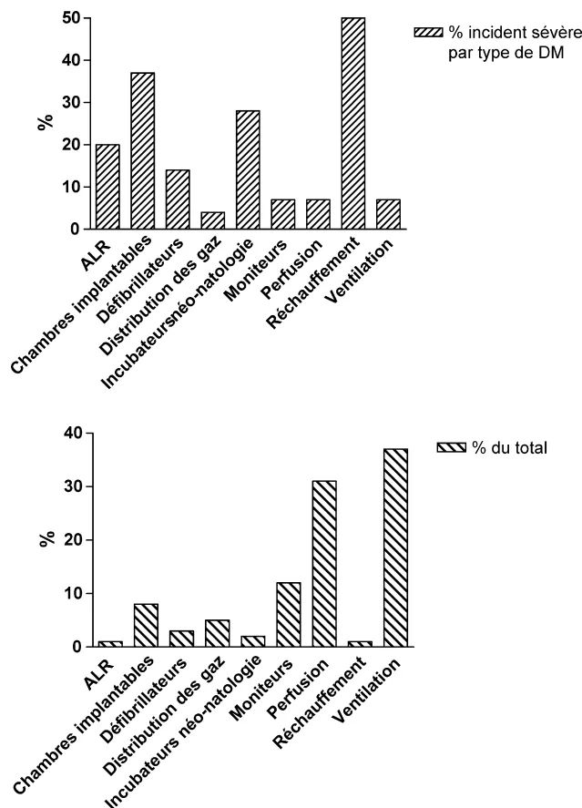

Sécurisation des procédures à risques en réanimation
C. Gervaisa,*, A. Durocherb
a Division anesthésie-réanimation-douleur-urgences, unité de réanimation médicale,
hôpital Carêmeau, CHU de Nîmes, place du Pr-Debré,
30029 Nîmes cedex 9, France
b Service d'urgence respiratoire, réanimation médicale et médecine hyperbare, hôpital Carêmeau,
59000 Lille, France
Disponible sur Internet le 31 octobre 2008
Dans la littérature la distinction entre les termes : erreurs médicales, évènements indésirables, complications liées aux soins et d'autres termes pertinents dans le champ de la sécurité des patients ne sont pas bien établis. Il est pourtant reconnu qu'une terminologie et une classification commune (taxonomie) faciliterait la déclaration, le suivi et l'analyse des évènements indésirables. Les définitions proposées dans ce rapport ont été soumises à la cotation du panel d'experts.
© 2008 Elsevier Masson SAS. Tous droits réservés.
In the literature, the distinction between medical errors, adverse events, complications of care and other terms related to patient safety is not well-established. Accordingly these terms are commonly interchangeable. There is consensus that common terminology and classification scheme (taxonomy) with standardisation of patient safety data would facilitate improvement in incidents reporting, tracking and analysis. In this report medical errors, adverse events, safety indicators and other terms such as preventability and safety practices are defined and submitted to the expert panel rating.
© 2008 Elsevier Masson SAS. Tous droits réservés.
Mots clés : Erreurs humaines ; Évènements indésirables ; Évènements indésirables graves ; Évènements porteurs de risques ; Évitéabilité des évènements indésirables ; Procédure de sécurisation ; Indicateurs sécurité
Keywords: Human errors; Undesirable events; Serious undesirable events; Risks carrier events; Avoidability of undesirable events; Safety practices; Security indicators
Toutes les définitions sont fausses... certaines sont utiles.
Canadian collaborative to improve patient care and safety in
the ICU 2004.
La sécurité des patients (patients' safety des Anglo-Saxons) est une discipline en pleine évolution. Les outils d'analyse, les concepts et les définitions changent avec le temps, varient
* Auteur correspondant.
Adresse e-mail : claude.gervais@chu-nimes.fr (C. Gervais).
suivant les auteurs, et enfin ont pour la plupart été acquis en dehors du domaine de la santé où la preuve de leur efficacité et de leur pertinence reste le plus souvent à faire. À la suite des rapports de l'institut de médecine : to err is human et patients' safety, a new standard of care [1,2], l'évaluation de la sécurité des patients dans le système de soins est devenue un champ prioritaire et très explicite de l'évaluation de la qualité des soins [3] pour laquelle un dispositif réglementaire incitatif vient d'être mis en place à travers les décrets relatifs à l'évaluation des pratiques professionnelles (EPP) et à l'accréditation de la pratique professionnelle des médecins et des équipes médicales exerçant en établissements de santé [3,4].
La sécurisation des procédures à risques est une démarche qui permet d'identifier et de traiter les différentes sources de risques afin de réduire au minimum leur incidence et leurs conséquences pour le patient [5].
Elle concerne les patients hospitalisés en réanimation et en unités de surveillance continue, la sécurisation des soins des patients en situation de réanimation dans les services cliniques n'est pas abordée directement dans cette recommandation d'experts.
Les procédures à risques pour le patient de réanimation sont principalement des procédures de soins (préventives, diagnostiques et thérapeutiques, médicaments inclus), les procédures d'admission/refus, de sortie de réanimation ainsi que les limitations de soins sont des procédures à risque. En fait, la réanimation, discipline à très fort investissement technologique, est une organisation dite à haut risque (programmé et non programmé) au même titre que les 20 spécialités médicales listées dans le décret accréditation.
Le risque lui-même défini comme un évènement possible est évalué en fonction de la probabilité de survenue de l'évènement et de sa gravité.
Les procédures de sécurisation (safety practices) sont des procédures de soins et/ou des procédures structurelles/organisationnelles qui préviennent, diminuent la fréquence de survenue ou atténuent les conséquences pour les patients des erreurs et des événements indésirables (EI) [6].
Dans la littérature, la distinction entre les erreurs médicales, les EI et les complications liées aux soins n'est pas bien établie. Chaque nouveau terme introduit peut faire débat. Par exemple, dans sa recommandation sur la nécessité d'informer les patients, la joint commission on accreditation of health care organisation (JCAHO) a utilisé le terme de résultats non prévisibles (unanticipated), espérant ainsi faciliter la distinction entre les complications liées au traitement des complications propres à la maladie. Cette recommandation a provoqué une controverse dans la communauté médicale nord-américaine sur la nécessité ou pas d'informer les patients sur les infections postopératoires
que de nombreux praticiens considèrent comme habituelles et tout à fait prévisibles !
Dans le même ordre d'idée la Haute Autorité de santé (HAS) introduit dans la démarche de l'accréditation un nouveau terme ; l'évènement porteur de risque (EPR) défini dans le décret accréditation comme un EI non grave.
Les EI étant eux-mêmes considérés (collège de l'HAS) comme des situations qui s'écartent de procédures ou de résultats escomptés dans une situation habituelle et qui sont ou seraient potentiellement source de dommage.
Les dysfonctionnements (non-conformité, anomalie, défaut), les incidents, les événements sentinelles, les précurseurs, les presque accidents (near-misses des auteurs anglo-saxons) et les accidents sont des EI qui entrent dans le périmètre d'évaluation des EPR dès lors qu'ils n'ont pas de caractère de gravité.
Il faut remarquer que la gravité des EI n'est pas définie dans l'arrêté relatif aux modalités de l'expérimentation de déclaration des EI graves liés aux soins par l'institut de veille sanitaire (INVS) [7]. Le niveau de gravité qui va être retenu par l'INVS déterminera bien sur le périmètre de la procédure déclarative.
Les propositions de définitions ne sont pas anecdotiques. Il est reconnu en effet que l'absence de consensus chez les professionnels de santé sur les définitions de ce que sont les erreurs, les EI graves ou potentiellement graves est une cause importante de sous-déclaration et en tout cas la cause principale de bases de données inexploitables pour les EI recueillis [8,9]. Quand bien même la standardisation des définitions serait acquise et le consensus obtenu, il resterait à trancher le débat sur l'importance respective de faire porter les efforts de sécurisation sur les EI patients ou les erreurs avec ou sans EI patients. . .
Dans le premier cas, la situation de notre discipline est relativement claire :
Dans le second cas les choses sont moins claires :
et n'est pas immédiatement opératoire. Sa déclinaison dans le domaine de la santé est complexe [10,11] ;
Il était donc utile de soumettre à la cotation des experts les définitions principales y compris les définitions récentes introduites par l'HAS, notamment celles des EPR. Il est essentiel, non seulement que les réanimateurs comprennent cette définition, mais également qu'ils la partagent car elle est au centre de la démarche d'accréditation pour les spécialités à risques dont la réanimation fait partie.
Pour autant, la liste des définitions n'étant pas exhaustive, le lecteur pourra se reporter à des glossaires déjà publiés [12–15].
Il est admis, depuis les travaux de Donabedian [16], que la mesure de la qualité des soins doit se faire en analysant les structures, les processus et les résultats. Cette mesure peut s'appliquer à la sécurité des soins et s'inscrit dans une démarche globale de gestion du risque.
Un indicateur est une information choisie, associée à un phénomène, destinée à observer périodiquement les évolutions au regard d'objectifs périodiquement définis (norme ISO 8402). C'est une donnée objective qui décrit une situation d'un point de vue quantitatif [17]. Un indicateur répond à une question précise et suppose l'existence d'un objectif prédéterminé à atteindre. Il n'a d'intérêt que par les choix qu'il aide à faire et les décisions qu'il aide à prendre.
Il existe plusieurs types d'indicateurs qui doivent être associés entre eux et être développés de façon cohérente.
Ils s'intéressent à la quantité et à la qualité des ressources mis en œuvre : architecture, ressources humaines et matérielles, équipement, organisation. Ils ne sont pas un reflet direct de la qualité des soins et de leur sécurité mais bon nombre de travaux montrent qu'il y a une relation entre les mesures réalisées et la sécurité des soins prodigués au patient. Pour certains de ces aspects, des textes réglementaires ont d'ailleurs précisé les conditions de réalisation de l'activité de réanimation [18].
Ils concernent les pratiques de soins médicales et paramédicales de soins appliquées aux patients et plus
globalement la prise en charge du patient. Ce sont des indicateurs intermédiaires qui sont de bons indicateurs de sécurité lorsqu'ils prédisent la survenue d'un EI.
Les indicateurs de processus permettent habituellement de réagir plus rapidement qu'avec des indicateurs finaux témoins d'un EI plus ou moins grave. Leur recueil est habituellement facile, leur analyse rapide. Ils permettent d'identifier et de corriger rapidement les dysfonctionnements.
Indicateurs de structures et indicateurs de processus sont importants à mettre en place car on sait depuis les travaux de James Reason que les causes systémiques et organisationnelles, c'est-à-dire celles concernant les structures et les processus de soins, jouent un rôle majeur dans la genèse des accidents [19–21]. De plus, il s'agit souvent de causes latentes agissant à distance, c'est-à-dire dans l'environnement du patient.
Les indicateurs de résultats intermédiaires mesurent l'aboutissement des différentes étapes de prise en charge. En matière de sécurité, ce sont des EI de gravité variables avec ou sans conséquences pour le patient. Les EI non graves qui sont les EPR précèdent parfois les événements majeurs ou aux conséquences plus importantes pour le patient. Ils éclairent souvent sur la chaîne des mécanismes et des responsabilités aboutissant aux résultats finaux.
Les indicateurs de résultats finaux mesurent les résultats obtenus, une fois le processus de soins réalisés. Ils témoignent de l'incident ou de l'accident et sont donc tardifs. Leur recueil peut représenter une charge de travail importante (par exemple, surveillance de l'ensemble des infections nosocomiales). Ils rendent compte de la capacité du service à maîtriser la sécurité des soins dans tous ses aspects (structures et processus). Ils nécessitent donc une analyse systémique et une recherche des causes originelles (soit roots causes analysis). En effet, les causes actives, c'est-à-dire celles qui sont au contact du patient, ne sont bien souvent que révélatrices de causes latentes et à distance du patient et de systèmes de défense insuffisants ou mal adaptés.
Les indicateurs à choisir doivent répondre à certaines qualités [22,23].
L'acceptabilité d'un indicateur est essentielle pour qu'il soit utilisé. Il faut donc d'abord qu'il corresponde à une préoccupation réelle de son utilisateur en matière de sécurité des soins. Le domaine de cet indicateur doit donc avoir été déterminé par consensus entre les utilisateurs.
Il faut qu'il soit opérationnel et fournisse à l'utilisateur une information crédible immédiatement utilisable.
Il faut que cet indicateur soit simple et « convivial », disponible, facile à recueillir et n'induise pas de charge de travail ou de coût supplémentaire. À ce titre, lorsque l'information est déjà disponible, il faut éviter les doubles saisies et les redondances.
Il est nécessaire qu'il y ait une adéquation des systèmes d'information source et une compatibilité entre les différents systèmes d'information à l'origine des informations nécessaires à la construction et au suivi de l'indicateur.
La validité est l'aptitude de l'indicateur à fournir une indication correspondant à ce qu'il est censé mesurer. L'indicateur a par ailleurs une validité de contenu, c'est-à-dire qu'il prend en compte les éléments importants du processus de sécurisation étudié.
L'indicateur est pertinent dans le cas où il identifie simplement des EI pour lesquels des actions correctives existent et sont faciles à mettre en œuvre. Dans le cas contraire, son utilité réelle peut être discutée.
Un indicateur fiable est un indicateur qui fournit une mesure précise et reproductible avec des résultats stables.
Les sources d'erreur entachant la précision sont nombreuses et doivent être évitées. Elles peuvent prévenir :
La reproductibilité de l'indicateur comprend plusieurs dimensions :
Par ailleurs, en matière de variabilité, il faut tenir compte de la variabilité naturelle d'un phénomène liée à l'hétérogénéité des patients et à une grande variabilité entre sous populations. Il est alors nécessaire de stratifier les populations et d'utiliser des variables d'ajustement telles que l'âge, les comorbidités, le motif d'admission, l'indice de gravité, par exemple.
La sensibilité est l'aptitude de l'indicateur à varier rapidement et de façon importante de la même façon que les variations du phénomène étudié. La spécificité est l'aptitude d'un indicateur à ne varier que si et exclusivement si le phénomène étudié varie.
Un bon indicateur doit être à la fois sensible et spécifique. En matière de sécurité, il faut parfois privilégier l'un ou l'autre aspect de la performance selon l'objectif recherché, la fréquence de l'EPR étudié, sa détectabilité, sa gravité immédiate et ses conséquences (c'est-à-dire, sa criticité) [23].
Par exemple, l'indicateur « délai de prise en charge chirurgicale d'un patient » n'est pas spécifique d'un dysfonctionnement précis et clairement identifié a priori, mais il est sensible, ses conséquences et sa criticité sont suffisamment importantes pour que cet indicateur soit intéressant et retenu.
Les indicateurs doivent être présentés de façon claire, immédiatement compréhensible. Cela est déterminant pour l'utilisation réelle de l'indicateur. Le mode de présentation doit être convivial et adapté à la cible afin que les professionnels de santé concernés puissent se rendre compte effectivement de la réalité de l'évènement porteur de risque identifié et s'engagent dans des actions correctrices.
Des graphiques (avec traitement des données par maîtrise statistiques des procédés par exemple), des histogrammes, des tableaux de bord, des clignotants rouges (red flag) aident à la perception de l'information fournie par les indicateurs.
La compréhension dépend aussi du nombre d'indicateurs mis en place. En effet, des études de psychologie cognitive ont montré que le nombre d'éléments pris en compte simultanément par un individu est limité à [24] : trop d'indicateurs risquent de tuer la sécurité.
Un indicateur donne toujours lieu à une analyse de l'EI. L'interprétation peut en être erronée et/ou donner lieu à des actions correctrices générant des effets secondaires. Par exemple, la sélection des patients à moindre risque permettant ainsi d'améliorer les performances apparentes du service en matière de sécurité ou la mise en avant de tel aspect de la prise en charge au détriment des autres. La diffusion d'indicateur auprès du grand public risque d'accentuer ces effets secondaires.
Par ailleurs, il ne faut pas oublier que l'indicateur n'est que le reflet des modalités de prise en charge des patients, de la qualité et de la sécurité des soins. L'objectif, en surveillant l'indicateur, n'est pas d'atteindre une certaine valeur de l'indicateur, mais de modifier les conditions de sécurisation des procédures afin d'atteindre une meilleure sécurité des soins. Il ne faut pas confondre l'objectif et l'indicateur qui est un simple moyen de savoir si l'objectif est atteint.
Sécurisation des procédures à risques en réanimation
Champ 2. Épidémiologie (erreurs médicales et événements
indésirables patients)
Field 2. Epidemiology (medical errors and
patient adverse events)
L. Soufira,*, Y. Auroyb
a Département d'anesthésie-réanimation postopératoire, hôpital Saint-Joseph,
groupe hospitalier Paris-Saint-Joseph, 185, rue Raymond-Losserand,
75014 Paris, France
b Département d'anesthésie-réanimation, hôpital Percy, Clamart, France
Disponible sur Internet le 31 octobre 2008
Résumé
La pathologie iatrogène est un important problème d'actualité. Les réanimations sont des services à risque de survenue d'événements indésirables (EI) liés aux soins et d'erreurs médicales. L'incidence des EI en réanimation varie de 3 à 31 % selon les publications. Ces variations tiennent essentiellement à la méthodologie du recueil des données. Celle-ci est primordiale. Les indicateurs doivent être standardisés (définitions consensuelles), faciles à colliger. La méthode de recueil doit être idéalement prospective, non punitive, confidentielle, indépendante au sein d'une équipe compliante et réalisée avec la participation de différents acteurs non seulement du service mais aussi extérieurs (biologistes, pharmaciens). Les facteurs de risque des EI en réanimation sont connus : âge et scores de gravité à l'admission élevés, avec prise en charge médicale et paramédicale plus importante. Les EI sont associés à une augmentation de la morbidité des patients en réanimation sans que l'on puisse affirmer formellement un rapport de causalité. Le surcoût lié aux EI a été chiffré à 3961 dollars aux États-Unis. La mortalité des patients présentant un EI est plus élevée mais aucune étude n'a démontré à ce jour que les EI constituaient un facteur de risque indépendant de mortalité en réanimation. Certains EI sont évitables (de 28 à 84 % selon les études). L'implémentation de procédures de sécurisation (PS) est donc capitale. De nombreuses modalités souvent faciles à mettre en œuvre existent : procédures de soins, structurelles et managériales. Le développement d'une culture de sécurité dans les établissements de soins est essentiel. C'est la première étape indispensable à une meilleure compréhension des professionnels de santé et du grand public.
© 2008 Elsevier Masson SAS. Tous droits réservés.
Abstract
Iatrogenic pathology is currently a serious problem. Intensive care units (ICU) are wards with a high risk of occurrence of adverse events (AE) related to the care and medical errors. The incidence of AE in ICU varies from 3 to 31% according to the publications. These variations are mainly due to the methodology of data collection. The latter is essential. The indicators must be standardized (consensual definitions), and easily collected. The method of collection must be ideally prospective, nonpunitive, confidential, independent within a compliant team, and realized with the participation of various actors not only of the unit but also external (biologists, pharmacists). The risk factors of AE in ICU are known: old age and high severity scores at admission, with medical and nurse workload more important. AE are associated with an increased patients' morbidity in ICU with no evident causality. The over cost related to AE in ICU was quantified to 3961 dollars in the United States. The mortality of patients with an AE is higher but no study showed to date that AE constituted an independent risk factor of mortality in ICU. Some AE are preventable (from 28 to 84% according to studies). Therefore, the implementation of procedures of security (PS) is capital. Many methods often easy to implement exist such as in care, structural and managerial procedures. The development of a safety culture in
* Auteur correspondant.
Adresse e-mail : lsoufir@hpsj.fr (L. Soufir).
hospitals and other delivery care settings is essential. It is the first essential step in a better comprehension of the health care professionals and the public opinion.
© 2008 Elsevier Masson SAS. Tous droits réservés.
Mots clés : Épidémiologie ; Réanimation ; Événements indésirables ; Pathologie iatrogène ; Erreurs médicales ; Management de sécurisation
Keywords: Epidemiology; Intensive care unit; Adverse effects; Iatrogenic disease; Medical errors; Safety management
La littérature médicale et les médias non médicaux abondent de plus en plus d'articles consacrés à la pathologie iatrogène. Les infections nosocomiales sont aujourd'hui bien connues du grand public. Les autres événements indésirables (EI) liés aux soins prennent le même chemin : ils ont fait l'objet de nombreux travaux, surtout aux États-Unis [1–4]. En 1999, le rapport de l'institut de médecine américain estimait que 44 000 à 98 000 décès par an seraient d'origine iatrogène et constitueraient la huitième cause de mortalité aux États-Unis [5]. Auparavant, Leape [6] avait rapporté qu'un EI survenait chez 4 % des patients hospitalisés et que 14 % d'entre eux étaient fatals. La plupart des risques iatrogènes étaient dus à des erreurs et leur prévention était donc possible.
À l'hôpital, les réanimations sont des structures à haut risque pour de nombreuses raisons : importance en quantité et en qualité des activités effectuées, complexité des procédures diagnostiques et thérapeutiques réalisées, statut précaire des patients hospitalisés. Les procédures utilisées, même si elles sont parfois déléteres, sont souvent reconnues comme « le prix qu'il faut payer » pour soigner les patients les plus graves [7]. Ce sont surtout les complications des techniques invasives et les infections nosocomiales qui ont été rapportées en réanimation [8–12]. En outre, les répercussions financières engendrées sont probablement importantes.
Les institutions françaises s'impliquent de plus en plus dans les problèmes de sécurité sanitaire : la Direction régionale de la recherche, des études et de l'évaluation des statistiques (Drees) a récemment publié une étude multicentrique française sur la iatrogénie dans un échantillon d'hôpitaux français Eneis [13]. La Haute Autorité de santé (HAS) a formulé des recommandations de méthodologie pour la gestion des risques dans les établissements de santé [14]. La lutte contre la iatrogénie est clairement affichée comme une priorité de santé publique dans la loi de sécurité sanitaire en 2004. La Direction des hôpitaux et de l'offre de soin (Dhos) a proposé, en 2006, des objectifs chiffrés en termes de réduction de la iatrogénie.
Les sociétés savantes (Société française d'anesthésie et de réanimation [SFAR] et Société de réanimation de langue française [SRLF]) se sont elles aussi intéressées récemment au sujet, à travers une journée de formation continue en 2004 [15].
Ce thème est un problème d'actualité qui reste à évaluer actuellement en France, en partie par l'absence de marqueurs de iatrogénie adaptés et acceptés par les différents acteurs en réanimation.
Afin de décrire l'épidémiologie des EI et des erreurs médicales en réanimation, il convient d'être précis dans la définition de ces termes.
La définition de la iatrogénie a en effet considérablement évolué au cours des dernières années. Selon le dictionnaire Petit Robert, le terme « iatrogène » signifie « qui est provoqué par le médecin ». Les premières définitions de la iatrogénie dans la littérature médicale sont apparues après la publication du célèbre article de Leape et al., en 1991 [3]. Par la suite, plusieurs autres définitions ont été proposées ; en particulier, Leape a préconisé dans une revue récente la définition suivante : « dommage lié à la prise en charge médicale du patient et non aux complications liées à la maladie » [16]. À l'heure actuelle, les définitions ont tendance à devenir de plus en plus larges. En effet, la plupart des auteurs considèrent, qu'aujourd'hui, étudier la iatrogénie revient à s'intéresser à « tout EI survenant pendant l'hospitalisation », ce qui permet de prendre en compte tous les événements qu'ils soient liés ou non à la pathologie sous-jacente. Un consensus de définitions des EI et des erreurs médicales semble indispensable.
Dans la littérature médicale, la plus importante étude a été réalisée en 1991, dans l'état de New York, et a rapporté une incidence des EI de 3,7 % pour l'hôpital entier (30 195 dossiers analysés après tirage au sort, 51 services de soins aigus) [3]. En réanimation, l'incidence des EI varie de 3 à 31 % selon les publications [17–23]. Cette variation importante de l'incidence est expliquée par différentes raisons, essentiellement méthodologiques. Les définitions retenues ne sont pas identiques d'une étude à l'autre ; l'imputabilité de la maladie sous-jacente dans la genèse de l'événement n'est pas toujours facile à exclure et certains éléments sont difficiles à décrire (émotion ou douleur liées aux procédures, problèmes diagnostiques, effets secondaires des médicaments en dehors des erreurs de prescription et ou d'administration). Les études rétrospectives sous-estiment souvent les EI. De plus, de nombreux auteurs rapportent de manière conjointe les infections nosocomiales [17–19,22]. Enfin, la plupart des études réalisées en réanimation sont mono- ou bicentriques et l'existence d'un effet centre ne peut être exclue.
Les EI revêtent des aspects cliniques et des mécanismes très divers et variables (terrain, sévérité des patients). Plusieurs auteurs ont rapporté spécifiquement les descriptions de certaines complications et/ou de certains mécanismes [23–32].
Aujourd'hui, l'objectif essentiel consiste à déterminer et à valider des indicateurs de la iatrogénie en réanimation faciles à recueillir, bien acceptés des soignants et à les rapporter à un dénominateur d'exposition au soin lié à l'indicateur, comme on le préconise déjà de le faire pour les infections nosocomiales. À titre d'exemple, si on retient comme indicateur l'extubation non programmée, il sera à rapporter à la durée de ventilation artificielle.
De nombreux acteurs de santé sont concernés, avec au premier plan, cliniciens et paramédicaux en charge des patients. Il y a indéniablement un rôle non négligeable pour les pharmaciens, non seulement pour le conseil et la vérification du bon usage de la prescription des médicaments, mais aussi pour l'aide au recueil de leurs effets secondaires [4]. On peut penser, en outre, qu'il existe également une place à définir pour les médecins de laboratoire et les observateurs extérieurs.
Les différents auteurs proposent diverses méthodes éventuellement complémentaires. D'après Leape, le recueil doit être « non punitif, confidentiel, indépendant, validé par des experts, réalisé en temps réel » [16]. Une équipe australienne rapporte qu'une analyse rétrospective des dossiers conserve un certain intérêt et est complémentaire d'une analyse prospective [33]. Dans une étude pilote de faisabilité réalisée récemment en France, Michel et al. [34] ont comparé trois méthodes d'estimation (rétrospective, transversale, et prospective) des taux des EI dans les hôpitaux de soins aigus. Ils concluent qu'une méthode prospective de recueil de données serait la plus appropriée pour réaliser des études épidémiologiques sur les EI évitables. Au total, la méthode de recueil retenue réalisée par les soignants devra être prospective, concerner des indicateurs bien définis et réalisée par différents acteurs.
Les facteurs de risque des EI en réanimation sont connus : âge élevé [35], scores de gravité à l'admission élevés [19,23,25,35,36], avec prise en charge médicale (procédures invasives, [23,25]) et paramédicale [19,23] plus importante.
Dans la genèse d'un EI, la littérature suggère qu'il y a probablement une suite de petits événements (presque accidents se neutralisant) concourant à la survenue d'un phénomène plus important entraînant une conséquence et qui pourrait donc être évitable [37]. D'autres auteurs suggèrent de cibler préférentiellement les patients à risque dans une démarche de prévention.
Les EI sont associés sans conteste à une augmentation de la morbidité des patients en réanimation et un surcoût sans que l'on puisse affirmer formellement un rapport de causalité. En effet, plusieurs études montrent que les patients présentant un événement iatrogène ont une augmentation de durée de séjour en réanimation [19,35,36,38], mais pouvant être en relation avec la sévérité de la pathologie sous-jacente.
La mortalité des patients présentant un EI est plus élevée sans que l'on puisse affirmer avec certitude si ces événements constituent un facteur de risque indépendant de mortalité en réanimation. La mortalité brute varie selon les études de 13 à 67 % [17–19,35,36]. Très peu de données sont disponibles sur la mortalité attribuable qui varie de 9,5 à 19,5 % [22,35,36,39]. Des études supplémentaires sont nécessaires afin de préciser si la iatrogénie a une répercussion réelle sur la mortalité en réanimation.
L'augmentation de la durée de séjour entraîne de manière indirecte un surcoût. Les répercussions économiques des effets indésirables liés aux médicaments sont les mieux connues : en 1997, Bates et al. estimaient que ce type de complication engendrait un surcoût de 2595 dollars [40]. Le surcoût lié à d'autres complications survenant spécifiquement en réanimation n'a pas été évalué mais dans une grande série récente multicentrique américaine réalisée dans tous les services cliniques de 994 hôpitaux situés dans 28 états, Zhan et Miller [41] ont chiffré celui de certains EI : 1598 dollars pour les complications de l'anesthésie, 10 845 dollars pour celles du décubitus, 17 312 dollars pour les pneumothorax iatrogènes, 21 709 dollars pour les thromboses veineuses et les embolies pulmonaires postopératoires. Plus récemment, Kaushal et al. [38] ont chiffré le surcoût d'un EI en réanimation à 3961 dollars et évalué l'allongement de la durée de séjour liée à l'EI à 0,77 jour.
D'autres études restent à réaliser afin d'évaluer l'impact financier réel des EI en réanimation.
Leape [16] a récemment rappelé la définition d'un événement évitable : c'est celui « résultant d'erreurs ou de dysfonctions matérielles. L'erreur est définie comme un échec d'exécution ou de planification d'une action ». Dans la littérature, la fréquence des EI évitables est élevée : elle varie de
28 à 84 % selon les études [27,33,40,42]. Même si ces études n'ont pas été réalisées en réanimation, on peut fortement penser qu'il en est de même dans ces services.
L'implémentation de PS est donc essentielle. De nombreuses modalités souvent faciles à mettre en œuvre peuvent être avancées. Certaines PS sont des procédures de soins ; d'autres sont des procédures structurelles et managériales :
Les EI peuvent avoir des répercussions médico-légales. Il a été clairement rappelé lors de la journée de formation organisée conjointement par la SFAR et la SRLF [15] que l'information en matière d'EI ne doit pas déroger à la règle éthique, déontologique et réglementaire d'une information « loyale, claire et appropriée » afin d'obtenir un « consentement libre et éclairé ». Même si les spécificités de l'activité de réanimation conduisent à des pratiques très diverses ne respectant pas à la lettre les termes de la loi, le médecin réanimateur doit régulièrement informer le patient de son état et, éventuellement, ses proches, dès que le patient ne s'y est pas fortement opposé et que les textes réglementaires l'autorisent, a fortiori, en cas d'EI.
Il est indispensable d'évoquer et de cadrer les conséquences possibles d'une déclaration méthodique des EI et des erreurs médicales, tant au niveau juridique, qu'au niveau hiérarchique.
Les EI en réanimation sont fréquents et universels, leur incidence est très variable, car il persiste des difficultés de définition et de recueil. Il semble indispensable d'avoir à disposition des indicateurs de ces événements. De nombreuses complications sont évitables et il ne fait aucun doute que des programmes de prévention sont à mettre en place, visant en
partie à faire changer les mentalités des soignants, des institutions et du public.
Sécurisation des procédures à risques en réanimation
B. Guideta,*,b,c, C. Mc-Areed, J. Martye
a Service de réanimation médicale, hôpital Saint-Antoine, AP–HP, 184, rue du Faubourg-Saint-Antoine, 75012 Paris, France
b U707, Inserm, Paris, 75012 France
c Université Pierre-et-Marie-Curie-Paris-6, 75012 Paris, France
d Service de réanimation chirurgicale, hôpital Lariboisière, AP–HP, 75010 Paris, France
e Département d'anesthésie-réanimation, hôpital Henri-Mondor, AP–HP, 94010 Créteil France
Disponible sur Internet le 26 octobre 2008
L'activité de réanimation est soumise à autorisation. Les décrets de 2002 et circulaire de 2003 ont constitué l'ossature du schéma régional d'organisation sanitaire de troisième génération visant à harmoniser l'offre de soins de réanimation en France. Ainsi, la partie structurelle devrait-elle à terme être réglée. L'effort doit porter sur les procédures et le management d'équipe afin de garantir qualité et sécurité. Les aspects de gestion de personnel, incluant formation et motivation, sont des éléments déterminants. Il faut que les tâches de chacun soient précisées à travers des fiches de postes, que les entretiens soient formalisés et que les services se dotent d'indicateurs d'alerte de dysfonctionnement (absentéisme, taux de départs élevé). Il faut développer une culture de service orienté vers la cohérence d'équipe et la recherche d'objectifs communs. La politique qualité du service doit être relayée par l'institution. Le volume d'activité doit être suffisant pour assurer la qualité des soins et probablement réduire la mortalité.
© 2008 Elsevier Masson SAS. Tous droits réservés.
ICU activity has to be authorized by regional hospital agencies. The structural aspects of ICU have been defined in official text in 2002. Thus, quality related to structural issues should be settled in the next future. The challenge is now focused on team building and managerial skills that should be developed in ICU in order to improve quality and security. Every effort should be developed to improve motivation and self-accomplishment of personnel working in ICU (period of integration for new nurses, basic and continuous education, clear tasks identification, formal interviews). It is important to follow alert indicators (absenteeism, important turn over) in order to detect burn out and take preventive measures. It is necessary to develop a new culture, team-oriented, with common goals. This new quality-security oriented policy must be supported by the institution. The volume–outcome relationship has been demonstrated across a wide range of medical and surgical procedures. On average, higher volume is associated with higher quality and better outcome.
© 2008 Elsevier Masson SAS. Tous droits réservés.
Mots clés : Sécurité ; Qualité des soins ; Culture et organisation ; Structures et procédures
Keywords: Safety; Quality of care; Culture and organization; Structures; Procedures
Les décrets n° 2002-465 et 2002-466 du 05 avril 2002 relatifs à la réanimation, aux soins intensifs et à la surveillance continue définissent les règles d'implantation et les conditions
* Auteur correspondant.
Adresse e-mail : bertrand.guidet@sat.aphp.fr (B. Guidet).
techniques de fonctionnement minimales auxquelles doivent se conformer les établissements de santé pour l'exercice de ces activités. Les conditions d'application de ce décret ont été précisées par la circulaire DHOS/SDO/n ° 2003/413 du 27 août 2003. Ce texte a constitué l'ossature du SROS III concernant les réanimations. Des recommandations nord-américaines ont été actualisées en 2003 et proposent un équipement et un personnel en fonction d'une classification des réanimations en trois catégories [1].
Sauf situation exceptionnelle, une structure de réanimation en France doit comporter un minimum de huit lits.
Elle doit être disponible et à proximité de la réanimation. Elle doit bénéficier de personnels qui travaillent en réanimation.
Il est souhaitable que la réanimation soit située à proximité ou au même niveau que le service d'accueil des urgences, le bloc opératoire, le service d'imagerie médicale. Le transport intrahospitalier de malades est une situation à risque. Il doit faire l'objet d'un protocole écrit en termes d'équipement et d'organisation. Il faut donc réduire au maximum les délais et le temps de transport.
Les différenciations des circuits propres et sales ne sont pas indispensables dès lors qu'un protocole écrit précise les dispositions adaptées pour acheminer par la zone filtre les produits propres et sales au moyen d'emballages et de conteneurs étanches.
La chambre de réanimation comprend un seul lit. Son dimensionnement doit être aux alentours de 20 m2 et doit faciliter la circulation autour du lit [2].
Le cloisonnement intérieur comporte des vitrages pour permettre au personnel soignant d'avoir une vision directe du patient, tout en respectant l'intimité du patient (grâce à un système occultant intégré dans le double vitrage).
La porte d'accès a une largeur minimale de 1,2 m, afin de permettre le passage d'un lit. Les éléments de la chambre (paillassse, chariot de soins) sont constitués de matériaux inaltérables, résistants aux nettoyages fréquents et aux produits de désinfection.
Toutes les chambres de réanimation comportent l'arrivée des fluides médicaux et l'aspiration sous vide, un lit spécialisé,
un ventilateur de réanimation, un dispositif de surveillance multiparamétrique avec report d'informations (système d'enregistrement permettant de tracer les historiques), des dispositifs électriques de perfusion et un lave-main d'usage médical.
L'ensemble de la réanimation doit disposer au minimum de deux électrocardiographes, un appareil de mesure du débit cardiaque, un stimulateur d'entraînement systolique, deux défibrillateurs, un dispositif de pesée, un dispositif d'épuration extraréneale, un dispositif de surveillance et de ventilation pour le transport, des moyens de communication et d'appel d'urgence, un chariot avec matériel d'urgence (procédure de vérification identifiée et tracée), des fauteuils ergonomiques adaptés à l'état physiologique des patients [3].
L'utilisation de code barre évite les erreurs d'attribution de traitements et s'inscrit dans une démarche d'identitovigilance [4].
La réanimation doit pouvoir disposer de résultats biologiques fiables dans un délai court avec traçabilité.
Dans le domaine de la réanimation, il a été montré que les hôpitaux ayant un fort volume d'activité de ventilation mécanique ont une réduction de la mortalité en réanimation et hospitalière [5].
À l'inverse, il existe peu de données dans la littérature suggérant qu'un volume d'activités trop important puisse être délétère. Il a été cependant montré qu'une charge de travail trop importante pouvait induire une augmentation du risque d'infections nosocomiales et du risque d'épuisement professionnel [6]. Une réanimation de plus de 20 lits doit avoir plus d'un médecin réanimateur sur place afin de pouvoir couvrir l'ensemble du secteur.
Un service de réanimation doit être capable de prendre en charge toutes les urgences vitales et doit donc pouvoir mettre à disposition des compétences techniques et un équipement ad hoc.
L'équipe médicale comprend un ou plusieurs médecins qualifiés, compétents en réanimation, spécialiste ou compétents en anesthésie réanimation (décret 2002/466 article D712). L'équipe médicale de réanimation doit être suffisamment stable pour que le suivi et la continuité des soins soient assurés dans le cadre d'un tableau de service précisant par plage horaire, de jour comme de nuit, le degré de permanence médicale nécessaire (circulaire DHOS du 27/08/2003).
La permanence médicale doit être assurée, à la disposition exclusive de l'unité, tous les jours de l'année, 24 heures sur 24, week-end et jours fériés compris (circulaire DHOS). La visite médicale seniorisée quotidienne améliore la performance des réanimations [7,8]. Une permanence médicale exclusive et commune à l'unité de réanimation et à l'unité de surveillance continue doit être assurée par un médecin qualifié sur place. Il doit bénéficier d'un système d'appel lui permettant d'être toujours joignable.
La permanence médicale est assurée par au moins un médecin membre de l'équipe médicale.
La permanence médicale doit être assurée à au moins 60 % par les médecins du service (SROS réanimation 2004, chapitre VIII, paragraphe II).
L'organisation de la permanence médicale doit tenir compte des impératifs liés à la réduction du temps de travail et à la prise d'un repos de sécurité après tout travail de plus de 14 heures consécutives.
La littérature médicale documente une relation entre la fatigue et le nombre d'erreurs porteuses de risque (délétères ou graves) dans un environnement avec usage de matériels et de médicaments dangereux [9]. L'absence de sommeil pendant 24 heures a le même effet que la prise d'alcool sur les performances [10].
La charge de travail excessive est également responsable d'une augmentation du nombre d'accidents de la circulation lors du retour au domicile après la prise d'une garde médicale [11].
Elle n'est pas précisée par les textes officiels. Le fonctionnement d'unité de réanimation 24 heures sur 24 nécessite de disposer au minimum de six ETP de médecins qualifiés.
La permanence peut être assurée en dehors du service de jour par un interne autorisé pour cela à condition qu'un médecin de l'équipe médicale soit placé en astreinte opérationnelle (décret 2002-466 ; article D712-106 du 07/04/2002).
En résumé, pour une réanimation de dix lits, le tableau de service doit prévoir au minimum la présence le matin de trois ETP, l'après-midi de deux, le samedi matin de deux, le samedi après-midi, le dimanche et les jours fériés d'un médecin.
Le responsable d'une unité de réanimation est un médecin qualifié compétent en réanimation, spécialiste ou compétent en anesthésie réanimation, en anesthésiologie réanimation chirurgicale.
Les médecins sont soumis à l'obligation de satisfaire à l'évaluation des pratiques professionnelles et à la formation médicale continue.
Les programmes de formation doivent correspondre aux besoins des praticiens qui sont au mieux évalués par la mesure de l'écart entre les recommandations de prise en charge et la réalité de ce qui est fait dans le service.
L'organisation tient compte à la fois de la réglementation, des effectifs et des compétences.
L'idéal est de bénéficier d'un minimum de deux cadres pour une équipe globale de 60 à 80 personnes. Les horaires de présence sont fonction des horaires de changement d'équipes. À défaut d'une présence nocturne, il faut une présence le matin et le soir lors des changements, de telle manière qu'une transmission des informations soit effectuée. Les cadres doivent connaître les spécificités des équipes travaillant dans un service de réanimation : jeunes équipes, avec peu d'expérience et un grand besoin de présence d'encadrement.
Le recrutement est une phase qui permet de vérifier l'adéquation entre aptitudes et compétences du candidat et celles attendues par le service identifiées grâce à la fiche de poste. Il est suivi par une phase d'intégration.
Elle est constituée de cours théoriques et pratiques permettant au nouveau de se familiariser à l'environnement. L'objectif recherché est la compréhension du fonctionnement de l'équipe, des soins prodigués et d'appréhender les spécificités de réanimation.
L'intégration concerne les IDE comme les AS. L'objectif est de favoriser la création de binômes afin d'optimiser la qualité des soins.
L'intégration se fait sous forme de compagnonnage (tutorat) réalisé par un soignant plus ancien qui présente les protocoles et procédures du service. Elle est facilitée par l'existence d'un support écrit (livret d'intégration).
L'organisation de base est réglementée : un IDE pour 2,5 patients présents, un AS pour quatre patients présents. La notion de patients présents est une précision fondamentale permettant d'organiser une certaine souplesse dans les plannings, facilitant les récupérations.
L'organisation des personnels paramédicaux pour les unités de soins continus bénéficie de recommandations issues des sociétés savantes (un IDE pour quatre, un AS pour six patients présents) mais n'est pas opposable.
Les soignants peuvent travailler en deux ou trois équipes. Les avantages de deux équipes travaillant en 12 heures sont une réduction de la fréquence de changement d'équipe qui réduit le risque d'erreur par omission de transmission et ces horaires sont
recherchés par les jeunes professionnels célibataires. À l'inverse, les inconvénients sont la fatigabilité des personnels liée à la grande amplitude horaire (induisant des risques d'erreurs), la difficulté d'organisation des pauses, les difficultés d'organisation familiale, le faible nombre de jours de présence dans l'année ne facilitant pas l'appropriation des connaissances théoriques et pratiques.
Quoi qu'il en soit, l'organisation du travail des équipes soignante doit faciliter l'homogénéisation des pratiques. La réduction de la charge de travail nocturne (liée à une moins grande activité facilitant le repos du patient) permet au personnel de mieux s'organiser dans les soins, et de prendre le temps de s'approprier calmement les pratiques de soins de réanimation [12]. Il faut que l'optimisation de la gestion des ressources humaines réduise le renouvellement de personnel, source de lassitude pour les cadres et de perte d'identité du service.
Plusieurs articles, particulièrement en réanimation pédiatrique et en réanimation postchirurgicale, documentent une relation entre charge de travail excessive et augmentation de la mortalité [13,14]. Il faut répartir la charge de travail avec mobilisation d'une IDE par patient entrant ou traité par CEC ou bénéficiant de plusieurs suppléances d'organe.
L'objectif de l'organisation de ces fonctions est de recentrer les équipes soignantes sur le patient et sa prise en charge.
Il collabore à l'approvisionnement en consommable, linge et pharmacie. Il est l'interface entre le service et les prestataires intra- et extrahospitaliers. Il collabore, par ce biais, à la gestion des stocks (pas de rupture de stock, pas de péremption), il assure la disponibilité permanente des consommables. Il participe à la maintenance du parc d'équipements, avec une traçabilité des incidents et des pannes. Il assure le suivi des contrats de maintenance des équipements lourds. Il participe à la formation pratique à l'utilisation de l'équipement (décontamination, montage-démontage, réglage des alarmes). Une formation interne est une source de sécurité ; la présence du soignant logisticien auprès des personnels procure une certaine forme de sérénité.
Elle assure l'accueil des familles, tâche particulièrement importante dans les structures ouvertes 24 heures sur 24 aux familles. Elle collabore à la gestion administrative des entrées et sorties. Son habilité à constituer les dossiers administratifs est à la fois un gain de temps et induit une réduction du risque d'omission de pièces importantes constitutives du dossier et contribue à l'identitovivalance. Elle assure la gestion du vestiaire ainsi que les inventaires des patients.
Il assure les relations du service de réanimation avec les magasins, la pharmacie, le centre de distribution des produits sanguins labiles, le service d'imagerie médicale, les labora-
toires. Il évite ainsi aux soignants de quitter le service et contribue à la permanence des soins.
Les protocoles sont réalisés par l'équipe à partir de référentiels ou de recommandations. La méthode d'élaboration locale de ces procédures opératoires standardisées (POS) doit être participative afin de favoriser le processus d'appropriation. Ces POS doivent être régulièrement rappelées (reminders) et soutenus par les médecins seniors (leadership).
Ils servent à la fois d'aide-mémoire et d'assurance qualité. Ils peuvent concerner des points d'organisation (Protocoles d'admission et de sortie de patients de réanimation, la tenue de la pancarte, la tenue du dossier de soins) ou des processus de réalisation de soins.
Différentes check-lists sont utiles surtout dans les situations d'urgence et de stress. Citons par exemple : préparation d'une chambre avant l'arrivée d'un patient ; préparation du matériel nécessaire à la réalisation d'un geste technique, chariot d'urgence, transport intrahospitalier d'un patient ventilé.
Les audits servent à mesurer l'écart entre la réalité et les bonnes pratiques. Ils doivent permettre un état des lieux partagé par l'ensemble des professionnels, qui engagent une démarche d'amélioration [15].
Cette formation doit être pratique (prise en charge de l'arrêt cardiaque, la préparation de matériel à l'intubation en urgence, à la pose de cathéters centraux, la pose de drain thoracique) et est complétée par une formation sur les équipements utilisés (utilisation et décontamination).
L'existence de réunions « débriefing », équipe médicale et paramédicale permet d'analyser les dysfonctionnements, les sources d'erreur et incidents. C'est l'occasion d'optimiser l'organisation des soins. Elles sont souhaitables lors d'incidents, lors de l'accueil d'un malade difficile. Elles sont source d'apprentissage pour les équipes en cours de renouvellement.
Lors d'incidents et accidents (déclarations diverses et variées), ces réunions sont l'occasion d'étudier les fiches de déclaration avec les services interlocuteurs de la réanimation tels que la pharmacie, les laboratoires et le service biomédical.
Un service de réanimation fait partie des secteurs à haut risque et est souvent comparé à la complexité et aux risques rencontrés dans l'industrie nucléaire et aéroportuaire. Les services de réanimation sont caractérisés par la multiplicité des intervenants, des situations urgentes et hétérogènes. Ces conditions exposent à des erreurs dont les conséquences peuvent être dramatiques en réanimation. Il convient donc de
mettre en œuvre une politique de sécurité afin que l'organisation de la réanimation réduise au maximum le nombre d'erreurs et leurs conséquences.
Il faut mettre en place dans le service une politique de recueil des erreurs qu'elles aient conduit ou non à des conséquences pour les patients. Les revues de morbid mortalité permettent de revoir les incidents graves et tous les décès. Plusieurs indicateurs de morbidités peuvent être suivis. Citons les extubations non programmées, les chutes de lit, les escarres, les arrêts cardiaques non prévus [16].
La culture de service est un élément probablement déterminant de la performance des organisations. L'hypothèse est la suivante, les dimensions culturelles comprises comme l'ensemble des valeurs normatives partagées par une même équipe serait un facteur de cohésion des équipes qui favorise la qualité de leur prestation. Shortell et al. [17] ont analysé la performance de 42 services de réanimation américains. Dans ce travail, il est montré un impact positif du plateau technique et du degré de spécialisation sur la performance clinique ainsi que l'impact positif des modes de coordination et de culture entre les professionnels sur la diminution de la durée de séjour.
L'étude européenne Euricus I, rassemblant 89 services de réanimation montrent également que la standardisation des pratiques et le mode de management a un effet bénéfique sur la performance médicale [18].
Il faut favoriser une culture de service orientée vers la satisfaction des équipes (profil favorisant l'épanouissement personnel, l'atteinte des objectifs, l'humanisme et la cohésion d'équipe. Il a été développé un outil adapté aux services de réanimation permettant d'évaluer la culture et l'organisation des services [19].
Une bonne organisation du service (coopération et communication au sein de l'équipe) réduit le stress professionnel, améliore la satisfaction au travail et renforce l'appréciation subjective de la performance de l'équipe [20].
L'administration des hôpitaux des vétérans aux États-Unis a mis en place un programme en quatre points :
S'il est admis qu'une bonne communication est un élément majeur de cohésion de l'équipe et de performance de la
réanimation, il faut créer les conditions locales d'un travail en commun. Ainsi faut-il privilégier les staffs médicossoignants pouvant faire l'objet de discussion de protocoles, d'exposés de difficulté dans la prise en charge d'un patient, de difficultés relationnelles.
Les discussions éthiques de limitation et d'arrêt de traitement actif doivent être collégiales.
L'encadrement doit avoir des indicateurs d'alerte d'épuisement professionnel avec un suivi de l'absentéisme, suivi du renouvellement des personnels. Des objectifs professionnels doivent être définis et suivis (fiche de poste).
Les prescriptions doivent être informatisées. Il doit y avoir des protocoles pour les médicaments à risque, une dispensation nominative des médicaments.
Les résultats des examens complémentaires doivent être directement disponibles dans le service (biologie, imagerie).
L'hôpital doit disposer d'un système informatique général permettant d'avoir accès 24 heures sur 24 aux comptes rendus d'hospitalisation des patients antérieurement hospitalisés dans l'hôpital.
Lors de la sortie d'un patient avec transfert vers une autre unité, le service de réanimation doit éditer une fiche de transmission afin d'assurer la continuité des soins.
Il n'est pas certain que l'édition de tableaux de bord d'activité ait une influence majeure sur l'amélioration de la performance des services [21], mais ils constituent un outil de management interne permettant de motiver les équipes.
Pour chaque indicateur retenu dans le tableau de bord, il faut définir une cible quantitative et un délai pour atteindre cette cible.
Il faut distinguer ces tableaux de bord de suivi régulier (mensuel, trimestriel ou annuel) des indicateurs d'alerte qui doivent déclencher immédiatement une action correctrice comme, par exemple, la survenue d'une épidémie à germe multirésistant dans le service de réanimation.
Le service de réanimation doit servir un bassin de population. Il est donc important de déterminer s'il y a une bonne adéquation entre l'offre et la demande. Ainsi, il est recommandé que chaque service de réanimation ait un registre des refus par manque de place.
Parmi les indicateurs que les services de réanimation doivent suivre, il est indispensable d'avoir les données suivantes : exhaustivité du codage PMSI, pourcentage de séjour avec CMA et CMAS, évaluation du nombre de séjours et de jours bénéficiant du supplément réanimation dans le cadre de la T2a, score de gravité généraliste permettant éventuellement de calculer le rapport de la mortalité observée sur la mortalité prédite, durée de séjour et mortalité en réanimation et hospitalière.
L'utilisation de tableaux de bord doit faire l'objet d'analyse et d'actions correctives elles-mêmes évaluées.
Les éléments de structure (nombre de lits, densité de personnel, formation, équipement, ...) sont des préalables assez faciles à contrôler. Les procédures garantissent un minimum de qualité mais la sécurité résulte surtout maintenant d'une culture de service qui doit privilégier le « travailler ensemble pour un objectif commun ».
Sécurisation des procédures à risques en réanimation
Champ 4. Sécurisation du matériel en réanimation☆
Field 4. Environmental safety practice in the intensive care unit
S. Fougèrea,*, L. Beydonb, F. Saulnierc
a Département biomédical, hôpital Necker, AP-HP, 75015 Paris, France
b Pôle d'anesthésie-réanimation, CHU d'Angers, 49033 Angers cedex 01, France
c Service de réanimation médicale, hôpital Calmette, CHRU de Lille, Lille, France
Disponible sur Internet le 25 octobre 2008
Les dispositifs médicaux (DM) induisent une série de risques depuis leur conception jusqu'à leur mise au rebut. En réanimation, l'analyse des incidents montre que 80 % ont pour origine des erreurs humaines et 20 % un dysfonctionnement du matériel. La formation et l'application rigoureuse de la matériovigilance sont donc des éléments cruciaux. Services cliniques et biomédicaux doivent ensemble mettre en œuvre des procédures de sécurisation et veiller à ce qu'elles soient appliquées, et ce, à chaque étape de la vie du DM. La sécurisation repose au minimum sur les éléments suivants : collaboration étroite entre services cliniques et biomédicaux avec définition de référents, gestion informatisée du parc, évaluation précise des besoins avant l'implantation du DM, formation régulière des personnes concernées, traçabilité des maintenances préventives, curatives et des pannes, possibilité de mise à disposition rapide de DM de suppléance, élaboration et respect de checklist de bon fonctionnement, analyse des éléments permettant d'envisager la réforme et le remplacement du DM. Ces grands principes sont simples à mettre en œuvre.
© 2008 Elsevier Masson SAS. Tous droits réservés.
Medical devices are known to carry risks from design to scrap. Accident reports in ICU show that medical device account for only 20 % of accidents. Formation of users and providing a postmarketing incident reporting are thus essential in health institutions. Clinical and engineering departments should cooperate to produce and secure procedures which should be applied during the lifetime of each clinical device. Several points should be especially fulfilled: close cooperation between clinical departments and biomedical engineering departments with available technicians, computer-based inventory of all devices, evaluation of specifications required before purchasing a new device, education of users on utilisation and maintenance, technical follow-up of devices and keeping maintenance and repair logs, ability to provide users with replacement devices, provision of check-lists before use, forging criteria to decide when device should be discarded. These principles are simple and should be considered as mandatory in order to improve medical device related security.
© 2008 Elsevier Masson SAS. Tous droits réservés.
Mots clés : Matériel médical ; Sécurisation ; Réanimation
Keywords: Medical device; Safety practice; Critical care
Le champ d'application des dispositifs médicaux (DM) utilisés en réanimation touche le matériel stérile, réutilisable implantable ou encore de diagnostic in vitro. Les DM sont donc
☆ Ce texte a été approuvé par l'Association française des ingénieurs biomédicaux (AFIB).
* Auteur correspondant.
Adresse e-mail : sylvie.fougere@nck.aphp.fr (S. Fougère).
régis par un grand nombre de réglementations européennes et leur transposition nationale [1-5].
Les appareils induisent une série de risques depuis leur conception jusqu'à leur mise au rebut [6]. La gestion de ces risques concernant les dispositifs médicaux est décrite dans la norme NF S99-172 [7]. Ces risques transparaissent également à travers la matériovigilance [8-10], dont on retiendra quelques points clés : les erreurs humaines et l'impréparation à certaines situations critiques touchant les appareillages restent importantes [11-14] souvent désespérément récurrentes avec un type de matériel. Les appareils innovants sont parfois victimes de « défauts de jeunesse » auxquels les utilisateurs ne s'attendent pas ; des accidents graves, voire mortels, surviennent avec tous les types de matériels ; enfin, l'entretien et la vérification permettent de déceler des anomalies avant qu'elles n'aient de conséquence [15-17].
Pour fixer les idées, une analyse des incidents critiques en réanimation montre que 80 % des erreurs sont humaines et 20 % touchent les matériels [11]. La récurrence des incidents montre une méconnaissance des utilisateurs pour certains matériels ; par exemple : section différée des cathéters des chambres implantables par la pince costo-claviculaire, du fait d'une implantation trop médiane du cathéter, non reconnue par une mauvaise lecture de la radiographie de contrôle [10] ; défaut d'administration d'un choc électrique par un défibrillateur synchronisé manié par des utilisateurs habitués aux anciens défibrillateurs asynchrones (manque de formation) ; embolies gazeuses en raison du montage en Y d'une perfusion avec prise d'air sur une pompe à perfusion ; la liste est longue. . .
La distribution des incidents en matériovigilance en France, durant l'année 1998 (faute de données plus récentes) montrait que sur les 1004 incidents déclarés en anesthésie et réanimation, on recensait 11 % d'incidents sévères, et 2 % de décès dont 60 % étaient liés uniquement au DM. La distribution des incidents selon les types de DM et le pourcentage d'incidents sévères par type de DM est illustrée sur la Fig. 1.
On notera l'opposition entre fréquence et gravité, dans certains champs [8].
Les causes (% en médiane [écart]) sont :
On peut en déduire que la formation est un élément crucial de la sécurité, tout comme l'application rigoureuse de la matériovigilance, seul rempart pour identifier des défauts que le fabricant n'aurait pas identifiés, durant toutes les étapes conduisant au marquage CE du produit.
Par une analyse rigoureuse et des pratiques codifiées, la limitation de certains risques concernant le matériel est donc possible, aux différentes étapes de la vie du matériel.

| Type de DM | % incident sévère | % du total |
|---|---|---|
| ALR | 20 | 1 |
| Chambres implantables | 38 | 8 |
| Défibrillateurs | 14 | 3 |
| Distribution des gaz | 5 | 4 |
| Incubateurs néo-natologie | 28 | 2 |
| Moniteurs | 7 | 12 |
| Perfusions | 7 | 31 |
| Réchauffement | 50 | 1 |
| Ventilation | 7 | 37 |
Fig. 1. Distribution des incidents selon les types de DM et le pourcentage d'incidents sévères par type de DM en France en 1998.
Au quotidien, c'est aux cliniciens et aux services techniques biomédicaux qu'il incombera de veiller à ce que les procédures de sécurisation soient appliquées à chacune des étapes de la vie du DM. Les points qui nous semblent pouvoir justifier une PS spécifique ou figurer comme éléments d'une procédure générale de gestion des DM ont été soulignés. L'argumentaire sera développé en seconde partie, basé autant que faire se peut sur les textes réglementaires, la littérature scientifique et les données de la matériovigilance.
Cette PS est conçue autour de la réanimation, mais peut s'appliquer à l'ensemble des DM et des spécialités médicales.
Il importe de définir l'organigramme des acteurs intervenant dans la gestion des DM. Un schéma idéal classique consiste à déterminer :
La gestion d'un parc impose un suivi informatisé qui trace : date de réception, numéro de série, lieu de stockage, suivi des maintenances, suivi des pannes avec notification du type, de la fréquence, de la durée d'immobilisation, notification de la fréquence des défauts utilisateurs (afin de programmer de nouvelles actions de formations).
Un certain nombre de textes réglementaires applicables sont indexés au texte. Les auteurs se sont limités à quelques textes légaux importants ou illustratifs.
Pour le matériel en prêt :
Pour le matériel acheté, on procède comme suit.
2.2.1.1. Évaluation des besoins. Cette phase, gérée par l'ingénieur biomédical, est effectuée en collaboration étroite avec le service et/ou le pôle.
Le « cahier des charges » doit définir précisément le besoin, comme l'impose le code des marchés publics [18]. Il touche tous les aspects du DM et doit être établi en collaboration (cliniciens, ingénieurs biomédicaux).
compatibilité électromagnétique, normes ISO, Afnor, recommandations Afssaps [34]...
Elle se répartit entre services biomédicaux et cliniques de la façon suivante.
à suivre en vue d'une expertise, si une déclaration de matériovigilance a été entreprise ;
2.2.3.1. Regrouper des éléments de connaissance participant à la sécurité. On colligera, autant que faire se peut, localement ou de façon centralisée, des paramètres utiles pour suivre le parc :
2.2.4. Au moment de la mise au rebut du dispositif médical
Quelques exigences doivent être respectées :
La prise en compte des éléments devant être pris en compte au cours de la vie d'un matériel, tels que nous les avons évoqués, est à la fois complexe et simple. Il s'agit en fait de décliner l'appareil selon un plan logique, à chacune des étapes. Rien n'est difficile ou au-delà du faisable. Il s'agit plutôt de respecter une méthodologie « à portée de main », accessible, pour peu que les intervenants se convainquent de travailler et de réfléchir ensemble. La logique d'assurance qualité qui prévaut facilite cette démarche.
[30] Frank GE, Trimmel H, Fitzgerald RD. Inspiratory oscillatory flow with a portable ventilator: a bench study. Crit Care 2005;9:R315–22.
[31] Les alertes sanitaires. 04/10/2006. Informations importantes concernant les lève-malades Flamingo - Invacare. Site Afssaps.
[32] Vigoda MM, Lubarsky DA. Failure to recognize loss of incoming data in an anesthesia record-keeping system may have increased medical liability. Anesth Analg 2006;102:1798–802.
[33] Berton J, Sargentini C, Nguyen JL, Belii A, Beydon L. AnaConDa reflection filter: bench and patient evaluation of safety and volatile anesthetic conservation. Anesth Anal 2007;104:130–4.
[34] Circulaire DGS/DH/Afssaps n° 2000-337 du 20 juin 2000 relative à la diffusion d'un guide pour la production d'eau pour l'hémodialyse des patients insuffisants rénaux.
[35] Arrêté du 25 avril 2000 relatif aux locaux de prétravail et de travail, aux dispositifs médicaux et aux examens pratiqués en néonatologie et en réanimation néonatale.
[36] Circulaire DH/EM1 n° 987262 du 15 juillet 1998 sur les laveurs d'endoscopes.
[37] Décret 2001-1454 du 5 décembre 2001 relatif à l'obligation de maintenance et au contrôle qualité des dispositifs médicaux.
[38] Arrêt du 3 octobre 95 relatif aux modalités d'utilisation et de contrôle des matériels et de dispositifs médicaux.
[39] Norme NF S99-171. Maintenance des dispositifs médicaux - Modèles et définition pour l'établissement et la gestion du registre sécurité, qualité et maintenance d'un dispositif médical (RSQM). Juillet 2006.
[40] Arrêté du 3 mars 2003 fixant les listes des dispositifs médicaux soumis à l'obligation de maintenance et au contrôle de qualité.
[41] Cundy J, Baldock GJ. Safety check procedures to eliminate faults in anaesthetic machines. Anaesthesia 1982;37:161–9.
[42] Kit de formation à la matériovigilance. http://agmed.sante.gouv.fr/htm/10/dm/form/choix.htm.
[43] Arrêt du 3 octobre 95 relatif aux modalités d'utilisation et de contrôle des matériels et de dispositifs médicaux. 2008.
[44] Alexander JP, Watters CH, Dodds WJ, McNeill WE. The Engstrom Elsa anaesthetic machine. An electronic system for anaesthesia. Anaesthesia 1990;45:746–50.
[45] Manzari JA. Near fatal complication secondary to a poorly designed tracheostomy connector. Chest 1984;86:487–8.
[46] Friesen RM, Hatton G, Bjornson J. The upgrading and replacement of anaesthetic equipment: a provincial approach. Can J Anaesth 1990;37:889–95.
[47] Section 5 : Règles particulières de la vigilance exercée sur certains dispositifs médicaux. Article R5212-36 (inséré par Décret n° 2006-1497 du 29 novembre 2006 art. 1 Journal officiel du 1er décembre 2006). Code de la santé publique. 2007.
[48] Décret n° 2005-829 du 20 juillet 2005 relatif à la prévention et à la gestion des déchets d'équipements électriques et électroniques.
Sécurisation des procédures à risques en réanimation
C. Giraulta,*, I. Auriantb, S. Jabrec
a Service de réanimation médicale et groupe de recherche sur le handicap ventilatoire (GRHV), UPRES EA 3830-IFRMP.23, UFR de médecine et de pharmacie, hôpital Charles-Nicolle, CHU-hôpitaux de Rouen, 1, rue de Germont, 76031 Rouen cedex, France
b Service de réanimation polyvalente, centre hospitalier général de Dieppe, avenue Pasteur, 76202 Dieppe cedex, France
c Service d'anesthésie-réanimation B, unité de réanimation et transplantation, centre hospitalier universitaire, hôpital Saint-Éloi, 80, avenue Augustin-Fliche, 34295 Montpellier cedex, France
Disponible sur Internet le 31 octobre 2008
La ventilation mécanique (VM) invasive ou endotrachéale (VEDT) expose à des complications multiples susceptibles de grever la morbidité et la mortalité des patients de réanimation. Les différentes procédures de sécurisation (PS) applicables à la VM peuvent concerner l'intubation, la période de ventilation elle-même, le sevrage et l'extubation, le recours à la trachéotomie, ainsi qu'à la ventilation non invasive (VNI). Celles décrites dans ce chapitre ont pour principal objectif de prévenir ou d'éviter les principaux risques inhérents à la VM invasive.
© 2008 Elsevier Masson SAS. Tous droits réservés.
Invasive or endotracheal mechanical ventilation can lead to numerous complications likely to burden morbidity and mortality of patients in the intensive care unit. Various safety practices for mechanical ventilation may involve intubation, the mechanical ventilation period, weaning and extubation, the use of tracheostomy as well as non-invasive ventilation. The main objective of safety practices described in this chapter is to prevent or avoid the main risks due to invasive mechanical ventilation.
© 2008 Elsevier Masson SAS. Tous droits réservés.
Mots clés : Ventilation mécanique ; Intubation ; Sevrage ; Extubation ; Trachéotomie ; Ventilation non invasive ; Procédures de sécurisation
Keywords: Mechanical ventilation; Intubation; Weaning; Extubation; Tracheostomy; Non invasive ventilation; Safety practices
La ventilation mécanique (VM) invasive ou endotrachéale (VEDT) expose à des complications multiples susceptibles de grever la morbi-mortalité des patients. Les différentes procédures de sécurisation (PS) applicables à la VEDT peuvent concerner l'intubation, la période de VM, le sevrage et l'extubation, le recours à la trachéotomie, ainsi qu'à la ventilation non invasive (VNI).
Outre les complications propres au geste d'intubation [1], la VEDT expose au risque de pneumopathies acquises sous ventilation mécanique (PAVM) [2,3], à la nécessité fréquente d'une sédatation [4,5], aux difficultés de sevrage et/ou d'extubation [6], elles-mêmes facteur de risque de réintubation [7] et, finalement, au risque d'une VEDT prolongée propice à un cercle vicieux délétère susceptible d'augmenter la morbidité, les durées de séjour, la mortalité, et donc le coût des soins [8]. L'incidence des PAVM varie de 8 à 28 % selon les études [2,3]. Le risque cumulatif est maximal au cours des cinq
* Auteur correspondant.
Adresse e-mail : Christophe.Girault@chu-rouen.fr (C. Girault).
premiers jours, de l'ordre de 3 % par jour, avec une mortalité observée variant de 24 à plus de 50 % [3]. Les difficultés de sevrage/extubation peuvent concerner jusqu'à 40 % des patients les plus fragiles, notamment BPCO [9], et représenter jusqu'à 41 % de la durée totale de VEDT [6]. L'incidence de la réintubation varie de 15 à 20 % et constitue un facteur de risque indépendant de mortalité intrahospitalière atteignant 30 à 40 % des patients réintubés [7].
Les PS décrites par la suite auront donc pour principal objectif de prévenir ou d'éviter les principaux risques inhérents à la VEDT.
L'intubation, le plus souvent réalisée en urgence chez un patient hypoxémique avec une hémodynamique précaire et une vacuité gastrique incertaine, constitue une procédure à haut risque [10–12]. Bien qu'il existe des recommandations pour l'intubation au bloc opératoire et en préhospitalier clairement codifiées et validées (Sfar, SRLF), peu de données sont encore disponibles concernant cette pratique en milieu de réanimation.
Les complications au cours de l'intubation sont habituellement classées en « complications vitales » (20–35 %) menaçant immédiatement le pronostic vital (décès, arrêt cardiaque, collapsus sévère, hypoxémie sévère) et en « complications sévères » (10–30 %) susceptibles de grever le pronostic vital en l'absence de mesures appropriées (arythmie cardiaque, intubation difficile, intubation œsophagienne, intubation sélective, inhalation, traumatisme laryngé et dentaire, agitation) [10–16].
En réanimation, le motif principal d'intubation est l'insuffisance respiratoire aiguë (IRA) hypoxémique (60–90 %). Dans cette situation, il est encore plus difficile d'augmenter les réserves d'oxygène par les méthodes habituelles de préoxygenation. En effet, lors de l'apnée, la vitesse de désaturation en oxygène de l'hémoglobine dépend essentiellement de la fraction alvéolaire en oxygène et de la ventilation minute du patient précédant l'intubation orotrachéale. Il est établi que, chez le sujet sain, trois à cinq minutes de préoxygenation permettent une réserve suffisante précédant la séquence d'intubation. Toutefois, l'efficacité de cette mesure chez les patients de réanimation peut être mise en défaut du fait d'une altération de la fonction échangeur du poumon. Une préoxygenation sous VNI associant de l'aide inspiratoire (AI) () à une pression expiratoire positive (PEP) () sous permet une amélioration significative par rapport à la manœuvre standard au ballon [15,16].
Les patients de réanimation ont un état hémodynamique souvent précaire. Un remplissage vasculaire (250 à 500 ml de
solutés) peut être recommandé avant l'intubation, même en l'absence d'hypotension, en raison du risque fréquent de collapsus postintubation (agents anesthésiques sympatholytiques, collapsus de reventilation...). En cas d'hypotension et/ou en l'absence de réponse au remplissage, l'introduction d'amines vasopressives avant l'intubation ne doit probablement pas être retardée, ce d'autant qu'il existe une pression artérielle diastolique basse ().
Il est actuellement recommandé d'utiliser un agent hypnotique d'action rapide ayant le moins d'effet délétère possible sur l'hémodynamique (étomidate ou kétamine) [17]. Certains auteurs déconseillent l'utilisation de l'étomidate qui favorise la survenue d'insuffisance surrénalienne transitoire plus marquée chez le patient fragile de réanimation [18], alors que d'autres la recommandent en première intention [19]. Le débat reste actuellement ouvert en l'absence d'étude rapportant une sous- ou une surmorbidité liée à l'utilisation d'étomidate dans cette indication. Il en est de même pour le suxaméthonium en l'absence de contre-indication, bien que des études préhospitalières suggèrent un intérêt à son utilisation pour une intubation à séquence rapide (ISR) avec manœuvre de Sellick [20,21].
Contrairement au bloc opératoire, la capnographie est rarement utilisée en réanimation. Elle permet cependant la détection précoce d'une intubation œsophagienne comparée à l'auscultation classique, ce qui diminue le temps de réaction pour une réintubation et le risque d'hypoxémie sévère [10,22].
Les lames plastiques à usage unique ne sont pas recommandées chez des patients fragiles de réanimation exposant à un plus grand risque de complications [23].
Au total, il est important que la procédure d'intubation en réanimation soit standardisée avec une adhésion maximale de toute l'équipe afin d'éviter des pratiques hétérogènes. L'ensemble de ces recommandations (Tableau 1), associées à la présence de deux opérateurs maîtrisant au mieux la technique d'intubation, doit permettre de diminuer les complications liées à cette procédure [15].
La sécurisation de la période de VM, en termes de réduction du risque, implique la prise en compte de nombreux facteurs (patient, interface, ventilateur, sédation) et l'adéquation des moyens mis en œuvre (personnel, environnement). Ces différents éléments peuvent être étroitement liés et, en l'absence de bénéfice clairement démontré pour chacun d'entre eux pris isolément, il apparaît utile d'appliquer une stratégie globale de prise charge, répondant au concept pragmatique de progiciel (bundle strategy) ou paquet [24]. Ce concept repose sur le regroupement de différentes pratiques ou procédures
Tableau 1
Procédures de sécurisation (PS) de l'intubation en réanimation.
| Pré-intubation |
| Remplissage systématique hors contre-indications ( ml de cristalloïdes ou 250 ml de colloïdes) |
| Si collapsus marqué, introduction précoce des amines (++) si pression artérielle diastolique (PAD) mmHg) |
| Préoxygénation en VNI si patient hypoxémique (, aide inspiratoire cmH2O ; PEP = 5 cmH2O) |
| Présence systématique de deux opérateurs |
| Préparation de la sédation et introduction immédiate après intubation |
| Per-intubation |
| Utilisation d'une lame métallique pour la laryngoscopie |
| Induction à séquence rapide (ISR) hors contre-indications |
| Hypnotique d'action rapide : étomidate ou kétamine |
| Etomidate : 0,3 à 0,5 mg/kg IVD (20 mg/20 ml) |
| ou kétamine : 1,5 à 2 mg/kg IVD (250 mg/10 ml, soit 25 mg/ml) |
| Curare de l'ISR : suxaméthonium 1 mg/kg IVD (1 amp = 100 mg dans 10 ml) (hors contre-indications : hyperkaliémie, lésion médullaire ou du motoneurone h, allergie connue, brûlure grave h) |
| Manœuvre de Sellick (pression du cartilage cricoïde) |
| Postintubation |
| Contrôle de la bonne position de la sonde par capnographe () |
| Si indication d'une sédation : mise en route immédiate |
| Mise en route précoce des amines vasopressives si collapsus marqué |
| Ventilation initiale « protectrice » : VT 6–8 ml/kg de PIT, c/min, pour , cmH2O, PEP cmH2O (à réadapter à distance) |
ISR : induction en séquence rapide ; PIT : poids idéal théorique ; Pplat : pression de plateau ; kétamine : Kétalar® ; suxaméthonium : Célocurine®.
issues de l'evidence based-medicine (EBM) qui, prises isolément, n'ont pas forcément fait la preuve de leur efficacité. La surveillance quotidienne de l'application du progiciel doit cependant permettre d'optimiser de façon globale la prise en charge du patient [24]. Trois progiciels peuvent ainsi être identifiés et ciblés pour optimiser et sécuriser la période de VM : la prévention de l'autoextubation, l'optimisation de la prise en charge, la surveillance et la conduite de la VM. Des recouvrements sont bien sûr possibles entre ces différentes stratégies, la prévention de l'autoextubation influençant la survenue des PAVM et la surveillance de la ventilation interférant avec l'existence de protocoles de sédation.
L'autoextubation, par définition non programmée, expose à une morbi-mortalité non négligeable. Elle augmente les durées de VM et de séjour, le recours aux soins prolongés et expose à une surmortalité en cas de réintubation nécessaire, voire impossible [25]. L'autoextubation pose notamment le problème de l'évaluation du sevrage puisque près de 50 % des autoextubations ne sont pas réintubées, suggérant une poursuite inutile de la VEDT chez ces patients [26,27]. Ce retard d'extubation peut alors être grevé d'une surmortalité [28].
Parmi les facteurs de risques d'autoextubation, qui restent difficiles à cerner malgré une littérature abondante, certains, sur lesquels l'équipe médicale peut intervenir, peuvent être individualisés telles qu'une sédation inappropriée et la fixation inadéquate de la sonde d'intubation [29]. Ces facteurs ont été
inclus dans le cadre de protocoles de soins (réduction de la sédation au cours du sevrage de la VEDT et maintien de la vigilance chez les patients à risques) [30,31]. Des résultats intéressants sur la réduction du risque d'autoextubation ont été rapportés dans les études de report d'incidents impliquant le personnel infirmier [13,32].
Les stratégies de prise en charge globale, non limitées à l'analyse du problème des PAVM, permettent de formaliser certaines recommandations simples destinées à sécuriser la pratique de la VM. L'autoextubation et la réintubation constituant des facteurs de risques indépendants de PAVM [2,3,7,33], elles peuvent donc être considérées comme des événements sentinelles dans une procédure d'évaluation de la qualité [34] en sachant, qu'en cas d'autoextubation, jusqu'à 81 % des patients peuvent être réintubés [35] et qu'il n'a pas été démontré de lien direct entre autoextubation et charge en soins [36].
Grâce à la mise en place de stratégies de prise en charge incluant des procédures issues des recommandations du Center for Diseases Control (CDC) pour la prévention des PAVM, plusieurs études ont montré une réduction significative du coût des soins et de la mortalité. Ces stratégies concernaient la position demi-assise, la nutrition entérale et les protocoles de sédation [37], mais aussi les soins de bouche, les précautions d'asepsie lors des aspirations trachéales et l'hygiène des mains [38]. Dans une étude portant sur l'observance des guidelines de prévention des PAVM du CDC, seulement 82 % des infirmières déclaraient suivre la procédure de lavage des mains, 75 % le port de gants lors des aspirations, et 50 % la surélévation de la tête chez les patients ventilés ou les soins de bouche [39]. Ces résultats montrent que malgré la mise à disposition de protocoles de soins formalisés, leur observance doit également être évaluée puisque leur application peut être insuffisante. Cela souligne l'importance de la diffusion des procédures, de la mise en place de processus de rappel (reminders) et de la conduite d'audits d'évaluation.
D'autres études ont évalué la prophylaxie anti-ulcéreuse ou la prévention de la maladie thromboembolique avec des résultats intéressants, mais les différents protocoles de soins utilisés ne permettent pas de généralisation [40–42]. L'optimisation de la prise en charge doit enfin s'astreindre à respecter les stratégies de ventilation recommandées en fonction des pathologies sous-jacentes (SDRA, asthme, etc.).
L'absence de sédation ou d'analgésie adéquates peut avoir des effets physiologiques délétères en augmentant l'activité sympathique et la désynchronisation patient-ventilateur. À l'inverse, une sédation-analgésie trop importante va augmenter les durées de séjour et de VEDT ainsi que le coût d'hospitalisation [43]. Outre la nécessité de mettre en place des protocoles de sédation-analgésie au cours de la VEDT, il apparaît également intéressant de développer l'appropriation de ces protocoles par les personnels pour favoriser leur auto-
nomisation. Dans ce cadre, il s'agit de développer des attitudes proactives plutôt que réactives en utilisant des outils d'évaluation qualitatifs (échelles de sédation, de douleur) permettant de minimiser les risques de complications [2,3]. Dans une étude multicentrique française récente, incluant 1381 patients de 44 services de réanimation, l'évaluation de la sédation ou de la douleur n'était pratiquée que dans 40 % des cas au second jour d'hospitalisation alors que l'utilisation de sédatifs ou d'analgésiques concernait plus de 70 % des patients [44]. Le nombre de patients trop sédatés était également retrouvé supérieur à 70 %. Une approche basée sur les données de l'EBM concernant l'administration de sédatifs et d'analgésiques paraît aujourd'hui nécessaire pour optimiser l'avenir à court et long terme des patients ventilés en réanimation [45]. Une étude récente a montré que l'évaluation systématique et répétée de la douleur et de l'état de vigilance–agitation permettait de réduire les épisodes d'agitation, l'intensité de la douleur, la durée de VM et les infections nosocomiales [43].
Enfin, la sécurisation de l'interface patient–ventilateur (sonde d'intubation, raccord annelé, filtres) doit rentrer dans le cadre de règles de matériovigilance ou de protocoles de bonnes pratiques, encore trop rarement formalisés, allant de la prescription écrite des réglages du ventilateur et des alarmes à la vérification de l'intégrité des tuyaux, au changement des filtres et à l'entretien des humidificateurs [46].
Le sevrage est l'ensemble du processus permettant le passage rapide ou progressif de la VEDT à la ventilation spontanée, ou « déventilation », et conduisant à l'extubation [47,48]. Son échec est classiquement défini par l'échec d'une épreuve de ventilation spontanée (VS) [47,48]. Bien qu'étroitement liées chronologiquement pour juger du succès/échec du sevrage, la phase de « déventilation » et l'extubation seront abordées ici distinctement pour caractériser au mieux leurs PS respectives. Dorénavant, la définition du succès/échec du sevrage devra aussi tenir compte du développement de la VNI appliquée au décours de l'intubation [49].
Outre les difficultés et l'échec du sevrage, son principal risque est d'être retardé inutilement et d'augmenter ainsi la durée de VEDT, sa morbi-mortalité [1,7,50] et le coût des soins [8]. Le temps imparti au sevrage peut, en effet, atteindre 40 à 50 % du temps total de la VEDT [6,27,50]. Près de 50 % des autoextubations pendant la période de sevrage ne sont pas réintubées [27], suggérant que bon nombre de patients sont maintenus ventilés inutilement. Le retard d'extubation peut ainsi augmenter la mortalité en réanimation de 12 à 27 % [28].
L'échec global du processus (« déventilation » et extubation) au décours d'une première tentative varie de 26 à 42 % et de 14 à 32 % pour la seule épreuve de VS [51–55]. L'incidence des difficultés de sevrage doit aussi tenir compte du terrain
sous-jacent. Elle peut concerner 40 à 61 % des patients BPCO, 41 % des patients neurologiques et 38 % des patients hypoxémiques [51,55]. Globalement, si la majorité des patients (69 %) peut être sevrée rapidement et facilement de la VEDT dès la première épreuve de VS, 31 % d'entre eux vont présenter un sevrage difficile ( j) et nécessiter une procédure de sevrage progressif, dont environ 15 % un sevrage prolongé ( j), voire impossible, avec les techniques conventionnelles [51–55]. L'impact sur le pronostic apparaît ainsi différent selon que le sevrage est facile, difficile ou prolongé [48]. La mortalité en réanimation peut être estimée à 5 % dans la première situation contre 25 % en cas de sevrage difficile ou prolongé [54,55].
L'ensemble de ces données doit donc inciter le clinicien à évaluer, dès que possible, la faisabilité et l'issue potentielle du sevrage selon le terrain pour en optimiser les conditions et limiter la durée de VEDT.
4.3.1.1. Critères prédictifs de l'issue du sevrage. De nombreux critères prédictifs de l'issue du sevrage, plus ou moins complexes, ont été proposés [56]. Leur intérêt paraissant davantage résider dans l'explication des mécanismes d'échec (Tableau 2) que dans la prédiction du succès du sevrage, ils ne doivent pas être attendus et/ou obtenus pour réaliser l'épreuve de sevrage [47,48,57]. Le rapport FR/VT pourrait néanmoins offrir le meilleur compromis simplicité–performance (sensibilité = 97 %, spécificité = 65 %, VPP = 78 %, VPN = 95 %) pour une valeur seuil de 105 c/min par litre [56,57]. Ces critères prédictifs doivent être finalement clairement distingués des critères de sevrabilité permettant de juger de l'opportunité pour réaliser l'épreuve de VS [47,48].
4.3.1.2. Sevrabilité et épreuve de VS. Toute stratégie de sevrage suppose que l'étiologie de l'IRA ayant motivé la VEDT, soit en partie contrôlée et stabilisée. La tolérance clinique, voire gazométrique, d'une épreuve de VS représente actuellement le meilleur test pour évaluer la capacité d'un patient à être déventilé et l'effort respiratoire qui lui sera
Tableau 2
Principaux déterminants physiopathologiques de l'échec du sevrage.
| Déventilation |
|---|
| Altération de l'échangeur pulmonaire |
| Inadéquation capacité des muscles respiratoires/charge ventilatoire imposée |
| Augmentation de la ventilation |
| Augmentation de la charge élastique ou résistive |
| Hyperinflation pulmonaire dynamique/auto-PEP |
| Altération de la commande centrale (sédation) |
| Dysfonction diaphragmatique (neuromyopathies) |
| Inadéquation de la réponse cardiovasculaire par dysfonction VG |
| Variations brutales des conditions de pré-post charge du VG |
| Ischémie myocardique |
| Facteurs psychologiques (délire, anxiété, dépression) |
| Facteurs métaboliques/nutritionnels/anémie |
PEP : pression expiratoire positive ; VG : ventricule gauche.
imposé après extubation [47,48]. Seulement 13 % des patients passant avec succès l'épreuve de VS puis extubés nécessitent d'être réintubés [51–55] contre 40 % s'ils sont extubés malgré son échec [58]. L'épreuve de VS doit être tentée quand le patient répond à des critères simples de sevrabilité (Tableau 3), à évaluer idéalement quotidiennement [27]. L'évaluation du rapport FR/VT n'est pas indispensable, mais pourrait permettre de dépister les patients à risque d'échec d'extubation, malgré un succès de l'épreuve de VS [59].
La VS sur pièce en T (VS/T) et l'AI avec ou sans PEP, sont les deux principales techniques utilisées pour réaliser l'épreuve de VS, avec des taux comparables de succès quelle que soit sa durée (30 ou 120 mn) [53,54,60]. Cette durée peut devoir être portée à 120 mn chez les patients les plus difficiles à sevrer [55]. En raison de l'augmentation des résistances des voies aériennes supérieures (VAS) après extubation, le travail respiratoire postextubation à fournir pourrait être mieux estimé par la VS/T [61]. Cependant, l'épreuve en AI s'est avérée plus bénéfique chez 21/118 patients (18 %) difficiles à sevrer ayant pu être extubés après avoir échoué à une épreuve de VS/T [62]. L'AI nécessite un niveau minimum de 7 cmH2O pour contrebalancer le travail respiratoire résistif lié à la sonde d'intubation et au circuit du ventilateur. Pour un même travail respiratoire, ce niveau d'AI peut cependant devoir être augmenté jusqu'à 10–15 cmH2O quand on utilise un filtre chez des patients potentiellement difficiles à sevrer (BPCO) [63]. L'adjonction d'une PEPe n'est pas indispensable lors de l'épreuve de VS, mais peut être utile pour favoriser le déclenchement du cycle inspiratoire s'il existe ou l'on suspecte une PEP intrinsèque [64]. L'optimisation des réglages de l'AI (voir plus loin) apparaît utile chez les patients réputés difficiles à sevrer [62–64].
La tolérance de l'épreuve de VS doit être jugée sur des critères cliniques (dyspnée, FR, VT, SaO2, signes d'IRA, pression artérielle, FC, état de conscience et confort), voire gazométriques. Cette surveillance est d'autant plus facilitée et sécurisée avec l'AI que le patient est maintenu connecté au ventilateur, contrairement à la VS/T. La réalisation d'un gaz du sang artériel (GDS) est d'autant plus recommandée que l'épreuve est mal tolérée cliniquement ou que des difficultés de sevrage sont prévisibles [47,48]. En cas de succès de
Tableau 3
Principaux critères de sevrabilité pour réaliser l'épreuve de VS.
| Critères respiratoires |
| FiO2 < 0,5 ou PaO2/FiO2 ≥ 150 mmHg |
| PEPe ≤ 5 cmH2O |
| (FR/VT < 105 c/min/l)a |
| Critères généraux |
| Absence de sédation ou bon état de vigilance sous sédation |
| Stabilité de l'état cardiovasculaire et absence ou faible doses de vasopresseurs |
| Toux efficace et absence d'encombrement bronchique |
PEPe : pression expiratoire positive externe.
a Rapport fréquence respiratoire/volume courant expiré non obligatoire, d'autant moins que la probabilité clinique de succès du sevrage est élevée.
l'épreuve de VS, l'extubation doit être envisagée dans les suites immédiates, après avoir éliminé des facteurs plus spécifiques de risque d'échec d'extubation. En cas d'échec, une analyse rigoureuse des mécanismes en cause et une recherche de leur réversibilité potentielle doivent être entreprises (Tableau 2). Une stratégie de sevrage progressif doit alors être envisagée.
Le choix de la technique appliquée à la décroissance progressive de l'assistance ventilatoire doit tenir compte du fait qu'elle doit contribuer à maintenir un bon équilibre entre la capacité musculaire respiratoire et la charge ventilatoire imposée, et limiter le risque d'atrophie musculaire diaphragmatique [65].
L'application intermittente (avec un mode assisté–contrôlé) et quotidienne, une ou plusieurs fois par jour, de la VS/T d'une durée de deux heures (VS/T-2 h), et l'AI de niveau progressivement décroissant représentent les deux principales techniques utilisées pour amener à la « déventilation ». Leur utilisation respective est de 52 et 21 % des cas de stratégies de sevrage [65]. Elles ont fourni des résultats similaires en termes de durée et de succès du processus de sevrage [51,52], y compris chez des patients difficiles à sevrer [66]. L'AI dégressive semble cependant devoir être privilégiée chez ces derniers [47,48]. C'est aussi chez ces patients que les modalités de l'AI nécessitent d'être optimisées au mieux, en termes de choix du ventilateur [67], de réglage du trigger inspiratoire [68], de la pente de pressurisation [69], du cyclage inspiratoire/expiratoire [70], et d'ajustement du niveau d'AI [71] et de PEPe [64] en tenant compte du système d'humidification utilisé [63].
Parmi les autres modes, la VAC intermittente (VACI) doit être abandonnée [51] et les données sont encore insuffisantes pour les modes asservis [48]. En revanche, le recours à un logiciel de sevrage automatisé (SmartCare®) permet de réduire objectivement la durée du sevrage [72]. Son intérêt chez les patients difficiles à sevrer reste encore à démontrer. Enfin, le bénéfice de la VNI comme technique de sevrage apparaît d'autant plus intéressant qu'il existe une hypercapnie (PaCO2 > 45 mmHg) lors de l'épreuve de VS ou au cours immédiat de l'extubation [49].
Les différents aspects développés plus haut doivent être idéalement mis en œuvre dans le cadre de protocoles de soins formalisés, adaptés localement et validés par l'ensemble de l'équipe de réanimation. Ces protocoles, incluant la sédation–désédation et axés sur l'évaluation de la sevrabilité, peuvent permettre de réduire la durée du sevrage et le délai d'extubation, sans augmenter l'incidence des réintubations lorsqu'ils sont dédiés au personnel soignant (kinésithérapeutes, infirmières) [5,27,45,73]. L'intérêt de ces protocoles peut cependant varier selon le niveau de qualité des soins des services et l'implication de l'équipe dans le processus de sevrage [74]. Pour palier au défaut d'implication des équipes et/ou à l'absence de protocole formalisé, le logiciel Smartcare®
[72] a l'avantage de proposer une procédure de sevrage à la fois standardisée et automatisée.
L'extubation se définit comme l'ablation de la sonde d'intubation [75,76]. Son échec est défini comme la nécessité précoce (24–72 heures) d'une réintubation dans les suites d'une extubation programmée [14,15]. Son incidence varie entre 2 et 25 % en fonction des populations étudiées et des pratiques utilisées [75,76]. Les causes d'échec d'extubation proprement dite (Tableau 4) sont à différencier des causes d'échec de l'épreuve de VS (Tableau 1) [77]. La réintubation est associée à une augmentation de la durée de VEDT, des durées de séjour et de la mortalité [34,75].
Les paramètres associés à une réduction glottique des VAS sont une intubation traumatique, un antécédent d'autoextubation accidentelle, une pression excessive du ballonnet de la sonde d'intubation, une durée d'intubation prolongée, une infection trachéobronchique et le sexe féminin [34,75]. Par ailleurs, plusieurs facteurs ont été rapportés comme étant associés à l'augmentation du risque d'échec d'extubation (Tableau 5).
Avant d'envisager une extubation, il est aussi fondamental de bien évaluer la capacité du patient à tousser efficacement et à évacuer ses sécrétions [78,79]. Cette évaluation des muscles expiratoires, souvent subjective, peut être utilement aidée par la mesure de la pression expiratoire maximale (), notamment en cas de pathologie neurologique centrale [78,79].
Tableau 4
Principales causes d'échecs d'extubation en réanimation.
| Obstruction des voies aériennes supérieures (œdème, inflammation, ulcération, granulome...) |
| Sécrétions abondantes/encombrement bronchique/troubles de déglutition/toux inefficace |
| Troubles de conscience/encéphalopathie |
| Dysfonction cardiaque (ischémie, œdème pulmonaire) |
| Atélectasie |
| Hypoxémie |
| Paralysie ou dysfonction diaphragmatique |
| Autres : sepsis, reprise chirurgicale, hémorragie digestive... |
Tableau 5
Facteurs associés à une augmentation du risque d'échec d'extubation en réanimation.
| Âge élevé (> 70 ans) |
| Durée de la ventilation avant l'extubation |
| Anémie (hémoglobémie < 10 g/dl, hématocrite < 30 %) |
| Sévérété de la pathologie au moment de l'extubation |
| Utilisation d'une sédation continue intraveineuse |
| Nécessité d'un transport en dehors de la réanimation |
| Extubation non programmée (autoextubation ou extubation accidentelle) |
| Bilan hydrique positif (entrées/sorties des 24 h) précédant l'extubation |
| Nombre d'infirmières insuffisant |
La présence de la sonde d'intubation ne permet pas l'évaluation directe de la perméabilité des VAS. Le test de fuite consiste à dégonfler le ballonnet de la sonde d'intubation afin d'apprécier la fuite d'air expiré autour de la sonde. Une faible ou une absence totale de fuite fera suspecter le risque de survenue d'une obstruction des VAS, incitant alors le clinicien à envisager un traitement préventif avant l'extubation et/ou à initier le plus précocement possible un traitement spécifique après l'extubation.
En pratique, il n'y a pas lieu de réaliser systématiquement ce test chez tous les patients de réanimation. Il pourrait être proposé chez les patients à risque suivants : sexe féminin, score IGS II élevé, motif d'admission médical, intubation traumatique, ballonnet surgonflé, antécédent d'autoextubation et diamètre de sonde d'intubation trop large par rapport à la taille [80,81].
L'utilisation des corticoïdes a été proposée pour prévenir la survenue d'un stridor ou d'un œdème laryngé postextubation (OLPE). Jusqu'en 2006, les trois études prospectives randomisées disponibles chez l'adulte [82–84] n'avaient pas montré d'impact positif des corticoïdes dans cette indication, contrairement aux études réalisées en pédiatrie [85]. Plus récemment, deux études prospectives randomisées ont démontré un bénéfice à l'administration préventive d'une ou plusieurs injections de méthylprednisolone dans les 12 [80] à 24 heures [86] précédant une extubation programmée, afin de réduire les risques de stridor ou d'OLPE et de ré-intubation. Ces deux études suggèrent que les patients à risques (Tableau 5) sont les plus susceptibles de bénéficier d'une corticothérapie IV préventive administrée suffisamment précocement avant l'extubation (probablement au moins six heures avant pour bénéficier du maximum de l'effet anti-inflammatoire), et ce, quel que soit le résultat du test de fuite qui, faussement positif, peut retarder abusivement l'extubation.
À l'avenir, il sera nécessaire de mieux préciser les patients à risque de développer un OLPE, en particulier ceux susceptibles de nécessiter une ré-intubation. Chez les patients à très haut risque (antécédent d'OLPE avec ré-intubation), chez qui une minitrachéotomie en urgence peut s'avérer difficile, l'extubation en présence d'un chirurgien ORL doit toujours être discutée.
L'hyperpression du ballonnet se transmet au mur trachéal et peut induire des lésions ischémiques, des ulcérations, des saignements, voire une sténose trachéale ou une fistule œsotrachéale. Le monitoring de la pression du ballonnet (PB) est recommandé au cours de l'anesthésie pour chirurgie. Afin d'éviter tout surgonflage, cette surveillance systématique de la PB, réalisée à l'aide d'un manomètre par le personnel infirmier deux à trois fois par jour et après chaque manipulation de la sonde d'intubation, doit également être proposée en réanimation avec pour objectif de maintenir la PB entre 15 et 22 mmHg (25–30 cmH2O) [87].
Les indications de VNI se sont récemment élargies à la période postextubation [49]. Elle présente un intérêt pour prévenir la survenue d'une IRA postextubation chez des patients médicaux à risque d'échec d'extubation [88,89]. En revanche, elle apparaît sans bénéfice et peut s'avérer délétère quand elle est utilisée pour traiter une IRA postextubation déjà installée [90,91].
La trachéotomie peut être chirurgicale (TC) ou percutanée (TPC) selon les protocoles locaux [92]. L'objectif ici n'est pas de poser l'indication ni de comparer les deux techniques, mais de préciser les conditions de sécurité permettant sa réalisation dans les meilleures conditions. La TPC s'avère néanmoins la plus pratiquée en réanimation [93]. Dans tous les cas, un chirurgien ORL doit pouvoir être disponible à tout instant en cas de nécessité d'une conversion en urgence en TC.
L'information du patient ou à défaut d'un proche est un prérequis. La recherche de contre-indications morphologiques à la réalisation de la trachéotomie au lit du patient (obésité, cou court, goitre, néoplasie cervicale, antécédents de radiothérapie...), la vérification de l'hémostase (TP > 50 %, TCA < 1,5 fois le témoin, plaquettes > 50 000/mm3), l'interruption momentanée d'une héparinothérapie curative sont nécessaires avant la réalisation du geste. Une toilette chirurgicale selon les protocoles du CLIN, la veille et le jour de l'intervention, doit être prescrite. L'arrêt de l'alimentation entérale et la mise en décline de la sonde nasogastrique deux heures avant l'intervention sont recommandés. L'installation en décubitus dorsal strict, avec mise en place d'un billot transversal sous les épaules exposant la région cervicale et plaçant la tête en hyperextension, améliore les conditions techniques. L'anesthésie générale avec curarisation sous surveillance scopique standard est recommandée [92].
Les éléments suivants sont recommandés : mise en place d'un champ chirurgical sur la région cervicale, utilisation d'un champ de table avec kit commercial de TC ou TPC, vérification du système d'aspiration murale avec canule d'aspiration stérile, disponibilité immédiate d'une boîte de TC si la TPC est choisie, mise en place d'une procédure de recours au chirurgien ORL [92]. Un set d'intubation doit être prêt en cas de difficulté technique et de perçement accidentel du ballonnet. Un opérateur réalisera la trachéotomie tandis qu'un second contrôlera la procédure au fibroscopie en cas de TPC [93].
Les bonnes pratiques utilisées pour tout geste chirurgical doivent également être appliquées lors de la trachéotomie :
lavage chirurgical des mains selon le protocole du CLIN, protection oculaire par lunettes, etc. [92]. En cas de TPC, le témoin fibroscopique vérifie la bonne position médiane de la ponction et du guide métallique, l'absence de saignement ou d'obstruction par du mucus [93].
Après le geste et fixation de la canule, la radiographie thoracique de contrôle et la surveillance d'un saignement doivent être systématiques.
La VNI, définit comme l'application d'un mode d'assistance ventilatoire (bilevel positive airway pressure [BiPAP], VS-AI-PEP, continuous positive airway pressure [CPAP]) par l'intermédiaire d'une interface (masque) [94,95], présente une double particularité en termes de sécurisation de la VM. Elle constitue en elle-même, selon les indications envisagées, une PS vis-à-vis des risques inhérents à la VEDT, notamment de mortalité. La VNI nécessite également d'être optimisée, pour sécuriser sa mise en œuvre (sécurisation de la VNI) et améliorer sa tolérance et ainsi limiter les risques d'échec de la technique. Ces deux aspects peuvent néanmoins être étroitement intriqués dans les risques/bénéfices d'une stratégie ventilatoire utilisant la VNI.
À l'échelon international, l'incidence d'utilisation de la VNI est passée de 1 à 5 % entre 1996 et 1998 [4,50]. En France, elle est passée de 16 à 23 % entre 1997 et 2002, soit de 35 à 52 % en excluant les patients préalablement intubés [96,97]. La VNI tend ainsi à devenir en France la technique de VM de première intention chez les patients non préalablement intubés.
En tant que PS de la VM, les objectifs et bénéfices attendus de la VNI sont, selon les indications envisagées, d'éviter le recours à la VEDT ou de limiter sa durée, pour prévenir ou limiter ses risques en termes de morbi-mortalité et de surcoût des soins [1–8].
L'existence d'une hypercapnie sous-jacente au cours de l'IRA a été récemment soulignée comme jouant un rôle essentiel dans l'efficacité et le bénéfice cliniques de la VNI [95]. De fait, le bénéfice de la VNI n'est plus à démontrer pour la prise en charge de l'IRA hypercapnique des patients BPCO ou de l'OAP cardiogénique [95]. Avec un raisonnement similaire en termes d'hypercapnie, la VNI peut être également proposée pour le sevrage difficile des patients BPCO [49,98] et la prévention de l'IRA postextubation chez des patients médicaux à risques d'échec d'extubation [88,89].
En revanche, malgré des résultats potentiellement intéressants, le succès et le bénéfice de la VNI dans l'IRA hypoxémique pure (sur cœur et poumons antérieurement sains) restent très controversés [99]. En effet, le taux d'échec peut
varier de 10 à 60 % selon l'étiologie de l'IRA hypoxémique [100] et le bénéfice sur la mortalité apparaît beaucoup moins clair [101]. L'analyse du rapport bénéfices/risques de la VNI doit en fait prendre en compte le risque de mortalité selon le succès/échec de la technique et le type d'IRA sous-jacente. Le succès de la VNI apparaît ainsi indépendamment associé à la survie, quel que soit le type d'IRA, hypercapnique ou hypoxémique, alors que l'échec de la VNI, retardant potentiellement l'intubation, apparaît indépendamment associé à une plus grande mortalité en réanimation seulement au cours de l'IRA hypoxémique [102]. Le bénéfice de la VNI semble ainsi d'autant plus intéressant dans l'IRA hypoxémique que le pronostic des patients peut être grevé par le recours à l'intubation ou la ré-intubation. Les populations les plus à même d'en bénéficier concernent aujourd'hui principalement les patients immunodéprimés [103,104] et ceux présentant une IRA postopératoire de chirurgie thoracique ou abdominale [105,106].
Toute stratégie ventilatoire utilisant la VNI nécessite donc une analyse rigoureuse du rapport bénéfices/risques pour le patient qui doit tenir compte de l'existence d'une hypercapnie sous-jacente selon l'indication envisagée. La VNI appliquée à l'IRA hypercapnique (BPCO et OAP) est ainsi considérée comme un marqueur de qualité des soins en réanimation [107]. La VNI appliquée à l'IRA hypoxémique doit, en revanche, rendre prudent le clinicien et nécessite une sélection rigoureuse des patients. Elle impose, dans tous les cas, d'être menée par une équipe expérimentée en milieu sécurisé de réanimation pour une surveillance rapprochée et ne pas retarder le moment de l'intubation.
Tableau 6
Facteurs prédictifs d'échec spécifiques de la VNI selon les indications (d'après [95]).
| Indication | À l'admission | Réévaluation précoce |
|---|---|---|
| IRA hypercapnique (BPCO) | pH < 7,25 FR > 35 c/min GCS < 11 Pneumopathie Comorbidités cardiovasculaires Score d'activité physique quotidienne défavorable |
À la deuxième heure pH < 7,25 FR > 35 c/min GCS < 11 |
| IRA hypoxémiquea | Âge > 40 ans FR > 38 c/min Pneumopathie communautaire Sepsis IRA postopératoire sur complication chirurgicale |
À la première heure PaO2/FiO2 < 200 mmHg |
IRA : insuffisance respiratoire aiguë ; BPCO : bronchopneumopathie chronique obstructive.
a IRA sur cœur et poumons antérieurement sains ; FR : fréquence respiratoire ; GCS : Glasgow coma score.
Finalement, le succès et le bénéfice potentiels de la VNI imposent de respecter ses contre-indications et d'identifier les facteurs prédictifs d'échec spécifiques à chaque type d'IRA (Tableau 6) [95]. Globalement, ces facteurs traduisent que la VNI est plus susceptible d'échouer chez les patients les plus sévères qui, de fait, doivent relever d'une admission et d'une surveillance en réanimation.
À côté du retard à l'intubation potentiellement délétère, la VNI expose principalement au risque d'échec de la technique, le plus souvent défini comme la nécessité de recourir à l'intubation. Toutes indications confondues, ce taux d'échec est de 30 à 40 % en pratique quotidienne [96,97,108,109]. L'échec de la VNI apparaît étroitement lié au confort et à la tolérance de la technique [96,110]. Les principaux déterminants du succès/échec de la VNI vont donc concerner, outre les indications et la sélection des patients développées plus haut, la formation et l'expérience acquise par les équipes ainsi que ses modalités d'application pratique (Tableau 7).
L'expérience acquise dans la technique améliore la morbi-mortalité des patients, augmente la sécurité et les chances de succès de la VNI chez les patients les plus sévères et diminue les admissions en réanimation [111-113]. Le taux global de succès de la VNI de 65 % rapporté dans « la vraie vie » peut refléter cette expertise [108,109]. Un apprentissage de la VNI sur un an pourrait suffire pour acquérir cette expertise [114]. La mise en place de programmes de formation et de protocoles d'application apparaît ainsi utile pour optimiser cet apprentissage, l'implantation, les résultats et la sécurité de la VNI [115,116].
Au sein d'une équipe expérimentée et comparativement à la VEDT, la VNI ne majore la charge en soins qu'au cours des six à huit premières heures de son initiation chez le BPCO [117]. L'expertise acquise et le bénéfice sur la morbi-mortalité permettent ainsi de réduire le coût des soins de réanimation [112,113,118].
Bien qu'aucune des modalités pratiques de la VNI prise isolément n'ait démontré d'impact sur le devenir des patients, il est nécessaire d'optimiser au mieux ces modalités pour sécuriser la VNI et améliorer le compromis efficacité-tolérance de la technique. Une stratégie globale de type progiciel peut ainsi être appliquée pour sécuriser la VNI [24] (Tableau 7).
7.3.3.1. Interfaces. Le choix de l'interface constitue certainement l'un des éléments clés du contrôle des fuites et de la tolérance de la technique. Le masque facial et nasal est utilisé en France dans respectivement 83 et 6 % des cas d'IRA [97]. Malgré leurs avantages et inconvénients respectifs, le masque
Tableau 7Choix, modalités et optimisation des aspects techniques et pratiques au cours de la ventilation non invasive.
| Aspects techniques | Choix/modalités | Optimisation/sécurisation |
|---|---|---|
| Interface | Masque facial > nasal (plusieurs modèles et tailles disponibles) | Protection cutanée (pansements colloïdes) Adaptation de taille et/ou type/serrage harnais si complications locales et/ou VNI prolongée (> 24–48 h) Changement de masque (facial ↔ nasal) Autres interfaces (casque, masque facial total) |
| Ventilateur | Selon les performances recherchées en fonction de la gravité des patients pris en charge Ventilateurs de réanimation Ventilateurs portables (spécifique VNI ou domicile) |
Ergonomie accessible à tous Ventilateur de réanimation (performances, monitoring) chez les patients les plus à risque d'échec |
| Circuit | Double ligne inspiratoire/expiratoire > une seule ligne inspiratoire (monobranche sur portables) | Risque de ré-inhalation de CO2 si une seule ligne Valve anti-rebreathing (au niveau du masque plutôt que sur le circuit) ↑ du niveau de PEP externe Si IRA hypercapnique Suppression du raccord annelé |
| Mode de ventilation et réglages | Selon l'indication VS-AI-PEP (BiPAP) > VAC (confort) VS-PEP (CPAP) |
Réglages VS-AI-PEP ↑ graduelle du niveau d'AI (6–8 cmH2O) et PEP (4–10 cmH2O) initial en évitant une → objectifs : VTe de 6–8 ml/kg et/ou FR ≤ 25 c/min Trigger inspiratoire en débit (0,5–1/min) (surveillance auto-déclenchements) Pente de pressurisation du niveau d'AI (plutôt rapide en évitant les valeurs extrêmes) Cyclage inspiration/expiration si disponible (↑débit maximal d'insufflation à 35–45 % ; limitation du Ti ≤ 1 s) Réglages VS-PEP (plus simples) PEP de 5–10 cmH2O selon sévérité hypoxémie |
| Humidification | HC = ECH (résultats cliniques) | HC si hypercapnie sévère ou grande intolérance |
| Conduite de la VNI | Continue ou séquentielle précoce selon gravité des patients | Mode séquentiel (si continu initialement) après amélioration clinique et GDS |
| Surveillance | Clinique (dyspnée, fuites conscience, confort, tolérance, adaptation) Paraclinique (FR, SaO2, PA, FC) GDS |
Ventilateurs de réanimation et certains ventilateurs spécifiques Monitoring des paramètres ventilatoires (pressions, VTe, FR) Alarmes (pressions, VTe, FR) et « ventilation d'apnée » Visualisation des courbes (débit, pression) à l'écran (contrôle des fuites et asynchronies patient-ventilateur) |
| Arrêt de la VNI si succès | Stabilisation de l'état clinique et GDS | En l'absence de critères formellement définis Besoins < 6 h/j Ou PaO2 ≥ 60 mmHg avec pH ≥ 7,35 et PaCO2 < 55 mmHg sous O2 nasal depuis 6 à 12 h |
VNI : ventilation non invasive ; IRA : insuffisance respiratoire aiguë ; PEP : pression expiratoire positive ; AI : aide inspiratoire ; VAC : ventilation assistée-contrôlée en débit ; HC : humidificateur chauffant ; ECH : échangeur de chaleur et d'humidité ; VTe : volume courant expiré ; Ti : temps inspiratoire ; GDS : gaz du sang artériel ; FR : fréquence respiratoire ; PA : pression artérielle ; FC : fréquence cardiaque.
facial doit être privilégié en première intention, en raison de son meilleur compromis tolérance-efficacité, notamment en termes de fuites [95,110].
7.3.3.2. Humidification des gaz inspirés. Longtemps considérée comme non indispensable parce que les VAS ne sont pas court-circuitées, l'humidification des gaz inspirés ne doit plus être négligée au cours de la VNI afin d'améliorer son confort et sa tolérance [119]. Bien que les bénéfices physiologiques, notamment en termes de travail respiratoire, soient en faveur de l'humidificateur chauffant (HC) [120,121], l'humidification
peut être assurée indifféremment avec un filtre ou un HC en l'absence d'impact clinique actuellement démontré [95].
7.3.3.3. Ventilateurs, modes ventilatoires et réglages. Le clinicien a le choix entre des ventilateurs de réanimation et des ventilateurs portables, spécifiquement dédiés à la VNI ou de domicile [94,95]. En France, la VNI aiguë privilégie les ventilateurs de réanimation dans 82 % des cas, contre 13 et 5 % des cas respectivement pour les autres [97]. Outre l'aspect économique, le choix du ventilateur doit être avant tout guidé par la gravité des patients traités, ce qui suppose de prendre en
compte les capacités techniques (modes ventilatoires, réglages, monitoring) et la variabilité de performances entre ces différents types de ventilateurs [67]. Le risque de ré-inhalation de CO2 doit également être pris en compte avec les circuits « monobranche » [122,123] et l'aspect ergonomique ne doit pas être négligé [124].
En dehors de l'OAP, les modes à double niveaux de pression (VS-AI-PEP, BiPAP) doivent être privilégiés en première intention pour leur compromis tolérance–efficacité [125]. Selon l'indication de la VNI, les réglages initiaux (Tableau 7) doivent être secondairement toujours adaptés à la tolérance clinique, aux fuites et aux contrôles réguliers des GDS [95]. L'optimisation de ces réglages passe, si possible, par le choix d'un trigger inspiratoire en débit [126], par le réglage de la pente de pressurisation du niveau d'AI [69,127] et par le réglage du cyclage inspiration/expiration [128,129]. À terme, une partie de ces réglages pourrait d'ailleurs être automatisée [130]. La VS-PEP (CPAP) s'avère moins difficile à régler que les modes précédents et différents dispositifs sont utilisables [95,131].
7.3.3.4. Conduite et surveillance de la VNI. La VNI peut être appliquée de façon continue ou séquentielle précoce (alternance de séquences de VNI et VS plus ou moins longues) dès les premières heures [108,109,132]. Cependant, l'application séquentielle précoce pourrait en partie expliquer les moins bons résultats de la VNI utilisée pour traiter une IRA postextubation [49]. La surveillance clinique, paraclinique et gazométrique apprécie l'efficacité de la VNI et doit être régulière au cours des premières heures [95]. Les GDS sont essentiellement utiles à l'adaptation des paramètres ventilatoires, notamment dans les une à deux heures suivant l'initiation de la VNI, et pour juger du rapprochement de la surveillance clinique puis de l'autonomie ventilatoire lors des séquences de VS. Cette surveillance (fuites, asynchronies patient–ventilateur) est facilitée par le monitoring des paramètres ventilatoires et la visualisation des courbes d'écran (débit, pression) quand ils sont disponibles [133]. Le réglage des alarmes et du mode de « ventilation d'apnée » contribuent à optimiser la sécurité de la technique. La surveillance doit aussi dépister les autres complications de la VNI (cutanées, ORL, etc.) et contribuer à identifier précocement les facteurs prédictifs d'échec (Tableau 6) [95].
La VNI doit être poursuivie jusqu'à stabilisation clinique et gazométrique. Les critères de sevrage et d'arrêt ne sont pas clairement établis mais impliquent un espacement graduel des périodes de VNI parallèlement à l'amélioration des signes d'IRA [108,134].
[27] Ely EW, Baker A, Dunagan DP, Burke HR, Smith AC, Kelly PT, et al. Effect on the duration of mechanical ventilation of identifying patients capable of breathing spontaneously. N Engl J Med 1996;335:1864–9.
[28] Epstein SK, Nevins ML, Chung J. Effect of unplanned extubation on outcome of mechanical ventilation. Am J Respir Crit Care Med 2000;161:1912–6.
[29] Boulain T, Association des Réanimateurs du Centre-Ouest. Unplanned extubations in the adult intensive care unit: a prospective multicenter study. Am J Respir Crit Care Med 1998;157:1131–7.
[30] Sadowski R, Dechert RE, Bandy KP, Juno J, Bhatt-Mehta V, Custer JR, et al. Continuous quality improvement: reducing unplanned extubations in a pediatric intensive care unit. Pediatrics 2004;114:628–32.
[31] Razek T, Gracias V, Sullivan D, Braxton C, Gandhi R, Gupta R, et al. Assessing the need for reintubation: a prospective evaluation of unplanned endotracheal extubation. J Trauma 2000;48:466–9.
[32] Birkett KM, Southerland KA, Leslie GD. Reporting unplanned extubation. Intensive Crit Care Nurs 2005;21:65–75.
[33] Bornstein C, Azoulay E, De Lassence A, Cohen Y, Costa MA, Mourvillier B, et al. Sedation, sucralfate, and antibiotic use are potential means for protection against early-onset ventilator-associated pneumonia. Clin Infect Dis 2004;38:1401–8.
[34] De Lassence A, Alberti C, Azoulay E, Le Miere E, Cheval C, Vincent F, et al. Impact of unplanned extubation and reintubation after weaning on nosocomial pneumonia risk in the intensive care unit: a prospective multicenter study. Anesthesiology 2002;97:148–55.
[35] Betbese AJ, Perez M, Bak E, Rialp G, Mancebo J. A prospective study of unplanned endotracheal extubation in intensive care unit patients. Crit Care Med 1998;26:1180–6.
[36] Chevron V, Menard JF, Richard JC, Girault C, Leroy J, Bonmarchand G. Unplanned extubation: risk factors of development and predictive criteria for reintubation. Crit Care Med 1998;26:1049–53.
[37] Murray T, Goodyear-Bruch C. Ventilator-associated pneumonia improvement program. AACN Adv Crit Care 2007;18:190–9.
[38] Abbott CA, Dremsa T, Stewart DW, Mark DD, Swift CC. Adoption of a ventilator-associated pneumonia clinical practice guideline. Worldviews Evid Based Nurs 2006;3:139–52.
[39] Cason CL, Tyner T, Saunders S, Broome L. Nurses' implementation of guidelines for ventilator-associated pneumonia from the Centers for Disease Control and Prevention. Am J Crit Care 2007;16:28–36.
[40] Youngquist P, Carroll M, Farber M, Macy D, Madrid P, Ronning J, et al. Implementing a ventilator bundle in a community hospital. Jt Comm J Qual Patient Saf 2007;33:219–25.
[41] Crunden E, Boyce C, Woodman H, Bray B. An evaluation of the impact of the ventilator care bundle. Nurs Crit Care 2005;10:242–6.
[42] Niel-Weise BS, Wille JC, van den Broek PJ. Humidification policies for mechanically ventilated intensive care patients and prevention of ventilator-associated pneumonia: a systematic review of randomized controlled trials. J Hosp Infect 2007;65:285–91.
[43] Chanques G, Jaber S, Barbotte E, Violet S, Sebbane M, Perrigault PF, et al. Impact of systematic evaluation of pain and agitation in an intensive care unit. Crit Care Med 2006;34:1691–9.
[44] Payen JF, Chanques G, Mantz J, Hercule C, Auriart I, Leguillou JL, et al. Current practices in sedation and analgesia for mechanically ventilated critically ill patients: a prospective multicenter patient-based study. Anesthesiology 2007;106:687–95.
[45] Kress JP, Hall JB. Sedation in the mechanically ventilated patient. Crit Care Med 2006;34:2541–6.
[46] Recommandations d'experts de la SRLF. Monitoring de la ventilation mécanique Reanim Urgences 2000;9:407–12.
[47] Conférence de Consensus. Sevrage de la ventilation mécanique. Reanimation 2001;10:699–705.
[48] Boles JM, Bion J, Connors A, Herridge M, Marsh B, Melot C, et al. Weaning from mechanical ventilation. Statement of the sixth international consensus conference on intensive care medicine. Eur Respir J 2007;29:1033–56.
[49] Girault C. La ventilation non invasive postextubation (en dehors du patient postopératoire). Conférence de Consensus Commune SFAR, SPLF, SRLF 2006:119–27.
[50] Esteban A, Anzueto A, Frutos F, Alia I, Brochard L, Stewart TE, et al. Characteristics and outcomes in adult patients receiving mechanical ventilation: a 28-day international study. JAMA 2002;287:345–55.
[51] Brochard L, Mancebo J, Wysocki M, Lofaso F, Conti G, Rauss A, et al. Comparison of three methods of gradual withdrawal from ventilatory support during weaning from mechanical ventilation. Am J Respir Crit Care Med 1994;150:896–903.
[52] Esteban A, Frutos F, Tobin MJ, Alia I, Solsona JF, Vallverdu I, et al. A comparison of four methods of weaning patients from mechanical ventilation. N Engl J Med 1995;332:345–50.
[53] Esteban A, Alia I, Gordo F, Fernandez R, Solsona JF, Vallverdu I, et al. Extubation outcome after spontaneous breathing trials with T-tube or pressure support ventilation. Am J Respir Crit Care Med 1997;156:459–65.
[54] Esteban A, Alia I, Tobin MJ, Gil A, Gordo F, Vallverdu I, et al. Effect of spontaneous breathing trial duration on outcome of attempts to discontinue mechanical ventilation. Am J Respir Crit Care Med 1999;159:512–8.
[55] Vallverdu I, Calaf N, Subirana M, Net A, Benito S, Mancebo J. Clinical characteristics, respiratory functional parameters and outcome of a 2 h T-piece trial in patients weaning from mechanical ventilation. Am J Respir Crit Care Med 1998;158:1855–61.
[56] Girault C, Defouillay C, Richard JC, Muir JF. Weaning criteria from mechanical ventilation. Monaldi Arch Chest Dis 1994;49:118–24.
[57] Meade M, Guyatt G, Cook D, Griffith L, Sinuff T, Kergl C, et al. Predicting success in weaning from mechanical ventilation. Chest 2001;120:400S–24S.
[58] Zeggwagh AA, Abouqal R, Madani N, Zekraoui A, Kerkeb O. Weaning from mechanical ventilation: a model for extubation. Intensive Care Med 1999;25:1077–83.
[59] Frutos-Vivar F, Ferguson ND, Esteban A, Epstein SK, Arabi Y, Apezteguia C, et al. Risk factors for extubation failure in patients following a successful spontaneous breathing trial. Chest 2006;130:1664–71.
[60] Perren A, Domenighetti G, Mauri S, Genini F, Vizzardi N. Protocol-directed weaning from mechanical ventilation: clinical outcome in patients randomized for a 30-min or 120-min trial with pressure support ventilation. Intensive Care Med 2002;28:1058–63.
[61] Mehta S, Nelson DL, Klinger JR, Buczko GB, Levy MM. Prediction of postextubation work of breathing. Crit Care Med 2000;28:1341–6.
[62] Ezingeard E, Diconne E, Guyomarc'h S, Venet C, Page D, Gery P, et al. Weaning from mechanical ventilation with pressure support in patients failing a T-tube trial of spontaneous breathing. Intensive Care Med 2006;32:165–9.
[63] Girault C, Breton L, Richard JC, Tamion, Vandelet P, Aboab J, et al. Mechanical effects of airway humidification devices in difficult to wean patients. Crit Care Med 2003;31:1306–11.
[64] Blanch L, Bernabe F, Lucangelo U. Measurement of air trapping, intrinsic positive end-expiratory pressure, and dynamic hyperinflation in mechanically ventilated patients. Respir Care 2005;50:110–23.
[65] Laghi F, Tobin MJ. Disorders of the respiratory muscles. Am J Respir Crit Care Med 2003;168:10–48.
[66] Vitacca M, Vianello A, Colombo D, Clini E, Porta R, Bianchi L, et al. Comparison of two methods for weaning patients with chronic obstructive pulmonary disease requiring mechanical ventilation for more than 15 days. Am J Respir Crit Care Med 2001;164:225–30.
[67] Richard JC, Carlucci A, Breton L, Langlais N, Jaber S, Maggiore S, et al. Bench testing of pressure support ventilation with three different generations of ventilators. Intensive Care Med 2002;28:1049–57.
[68] Aslanian P, El Atrous S, Isabey D, Valente E, Corsi D, Harf A, et al. Effects of flow triggering on breathing effort during partial ventilatory support. Am J Respir Crit Care Med 1998;157:135–43.
[69] Bonmarchand G, Chevron V, Chopin C, Jusserand D, Girault C, Moritz F, et al. Increased initial flow rate reduces inspiratory work of breathing during pressure support ventilation in patients with exacerbation of chronic obstructive pulmonary disease. Intensive Care Med 1996;22:1147–54.
[70] Parthasarathy S, Jubran A, Tobin MJ. Cycling of inspiratory and expiratory muscles groups with the ventilator in airflow limitation. Am J Respir Crit Care Med 1998;158:1471–8.
[71] Leung P, Jubran A, Tobin MJ. Comparison of assisted ventilator modes on triggering, patient effort, and dyspnea. Am J Respir Crit Care Med 1997;155:1940–8.
[72] Lellouche F, Mancebo J, Jolliet P, Roeseler J, Schortgen F, Dojat M, et al. A multicenter randomized trial of computer-driven protocolized weaning from mechanical ventilation. Am J Respir Crit Care Med 2006;174:894–900.
[73] Ely EW, Meade MO, Haponik EF, Kollef MH, Cook DJ, Guyatt GH, et al. Mechanical ventilator weaning protocols driven by nonphysician health-care professionals: evidence-based clinical practice guidelines. Chest 2001;120:454S–63S.
[74] Krishnan JA, Moore D, Robeson C, Rand CS, Fessler HE. A prospective, controlled trial of a protocol-based strategy to discontinue mechanical ventilation. Am J Respir Crit Care Med 2004;169:673–8.
[75] Epstein SK, Ciubotaru RL. Independent effects of etiology of failure and time to reintubation on outcome for patients failing extubation. Am J Respir Crit Care Med 1998;158:489–93.
[76] Epstein S. Decision to extubate. Intensive Care Medicine 2002;28:535–46.
[77] Epstein S, Ciubotaru R, Wong J. Effect of failed extubation on the outcome of mechanical ventilation. Chest 1997;112:186–92.
[78] Khamiees M, Raju P, DeGirolamo A, Amaoteng-Adjepong Y, Manthous CA. Predictors of extubation outcome in patients who have successfully completed a spontaneous breathing trial. Chest 2001;120:1262–70.
[79] Smina M, Salam A, Khamiees M, Gada P, Amaoteng-Adjepong Y, Manthous CA. Cough peak flows and extubation outcomes. Chest 2003;124:262–8.
[80] Francois B, Bellissant E, Gissot V, Desachy A, Normand S, Boulain T, et al. 12-h pretreatment with methylprednisolone versus placebo for prevention of postextubation laryngeal oedema: a randomised double-blind trial. Lancet 2007;369:1083–9.
[81] Jaber S, Chanques G, Matecki S, Ramonatxo M, Vergne C, Souche B, et al. Post-extubation stridor in intensive care unit patients. Risk factors evaluation and importance of the cuff-leak test. Intensive Care Med 2003;29:69–74.
[82] Gaussorgues P, Boyer F, Piperno D, Gerard M, Leger P, Robert D. Œdème laryngé après extubation. Les corticoïdes ont-ils un rôle dans sa prévention ? Presse Med 1987;16:1531–2.
[83] Darmon JY, Rauss A, Dreyfuss D, Bleichner G, Elkharrat D, Schlemmer B, et al. Evaluation of risk factors for laryngeal edema after tracheal extubation in adults and its prevention by dexamethasone. A placebo-controlled, double-blind, multicenter study. Anesthesiology 1992;77:245–51.
[84] Ho LI, Harn HJ, Lien TC, Hu PY, Wang JH. Postextubation laryngeal edema in adults. Risk factor evaluation and prevention by hydrocortisone. Intensive Care Med 1996;22:933–6.
[85] Meade M, Guyatt G, Cook D, Sinuff T, Butler R. Trials of corticosteroids to prevent postextubation airway complications. Chest 2001;120:464S–8S.
[86] Cheng K, Hou C, Huang H, Lin S, Zhang H. Intravenous injection of methylprednisolone reduces the incidence of postextubation stridor in intensive care unit patients. Crit Care Med 2006;34:1345–50.
[87] Jaber S, El Kamel M, Chanques G, Sebbane M, Cazottes S, Perrigault PF, et al. Endotracheal tube cuff pressure in intensive care unit: the need for pressure monitoring. Intensive Care Med 2007;33:917–8.
[88] Nava S, Gregoretti C, Fanfulla F, Squadrone E, Grassi M, Carlucci A, et al. Noninvasive ventilation to prevent respiratory failure after extubation in high risk patients. Crit Care Med 2005;33:2465–70.
[89] Ferrer M, Valencia M, Nicolas JM, Bernadich O, Badia JR, Torres A. Early noninvasive ventilation averts extubation failure in patients at risk: a randomized trial. Am J Respir Crit Care Med 2006;173:164–70.
[90] Keenan S, Powers C, McCormack D, Block G. Noninvasive positive-pressure ventilation for postextubation respiratory distress: a randomized controlled trial. JAMA 2002;287:3238–44.
[91] Esteban A, Frutos-Vivar F, Ferguson N, Arabi Y, Apezteguiá C, González G, et al. Noninvasive positive-pressure ventilation for respiratory failure after extubation. N Engl J Med 2004;350:2452–60.
[92] De Leyn P, Bedert L, Delcroix M, Depuydt P, Lauwers G, Sokolov Y, et al. Eur J Cardiothorac Surg 2007;32:412–21.
[93] Al-Ansari MA, Hijazi MH. Clinical review: percutaneous dilatational tracheostomy. Crit Care 2006;10:202.
[94] Ewans T. International Consensus Conference in Intensive Care Medicine: Noninvasive positive pressure ventilation in acute respiratory failure. Am J Respir Crit Care Med 2001;163:283–91.
[95] Robert R, Bengler C, Beuret P, Dureuil B, Géhan G, Joye F, et al. Ventilation non invasive au cours de l'insuffisance respiratoire aiguë (nouveau-né exclu). Conférence de Consensus Commune de la SRLF, de la SFAR et de la SPLF. 2006;13–20.
[96] Carlucci A, Richard JC, Wysocki M, Lepage E, Brochard L, SRLF Collaborative Group on Mechanical Ventilation. Noninvasive versus conventional mechanical ventilation. An epidemiologic survey. Am J Respir Crit Care Med 2001;163:874–80.
[97] Demoule A, Girou E, Richard JC, Taille S, Brochard L. Increased use of noninvasive ventilation in French intensive care units. Intensive Care Med 2006;32:1747–55.
[98] Burns KE, Adhikari NK, Meade MO. A meta-analysis of noninvasive weaning to facilitate liberation from mechanical ventilation. Can J Anaesth 2006;53:305–15.
[99] Ferrer M, Esquinas A, Leon M, Gonzalez G, Alarcon A, Torres A. Non-invasive ventilation in severe hypoxemic respiratory failure. A randomized clinical trial. Am J Respir Crit Care Med 2003;168:1438–44.
[100] Antonelli M, Conti G, Moro ML, Esquinas A, Gonzalez-Diaz G, Confalonieri M, et al. Predictors of failure of noninvasive pressure ventilation in patients with acute hypoxemic respiratory failure: A multicenter study. Intensive Care Med 2001;27:1718–28.
[101] Keenan SP, Sinuff T, Cook DJ, Hill NS. Does noninvasive positive pressure ventilation improve outcome in acute hypoxemic respiratory failure? A systematic review. Crit Care Med 2004;32:2516–23.
[102] Demoule A, Girou E, Richard JC, Taille S, Brochard L. Benefits and risks of success or failure of noninvasive ventilation. Intensive Care Med 2006;32:1756–65.
[103] Hilbert G, Gruson D, Vargas F, Valentino R, Gbipki-Benissan G, Dupon M, et al. Non-invasive ventilation in immunosuppressed patients with pulmonary infiltrates, fever and acute respiratory failure. N Engl J Med 2001;344:481–7.
[104] Depuydt PO, Benoit DD, Vandewoude KH, Decruyenaere JM, Colardyn FA. Outcome in noninvasively and invasively ventilated hematologic patients with acute respiratory failure. Chest 2004;126:1299–306.
[105] Auriant I, Jallot A, Hervé P, Cerrina J, Le Roy Ladurie F, et al. Noninvasive ventilation reduces mortality in acute respiratory failure following lung resection. Am J Respir Crit Care Med 2001;164:1231–5.
[106] Squadrone V, Coha M, Cerutti E, Schellino MM, Biolino P, Occella P, et al. Continuous positive airway pressure for treatment of postoperative hypoxemia: a randomized controlled trial. JAMA 2005;2:589–95.
[107] Curtis JR, Cook DJ, Wall RJ, Angus DC, Bion J, Kacmarek R, et al. Intensive care unit quality improvement: a “how-to” guide for the interdisciplinary team. Crit Care Med 2006;34:211–8.
[108] Girault C, Briel A, Hellot MF, Tamion F, Woinet D, Leroy J, et al. Noninvasive mechanical ventilation in clinical practice: a 2-year experience in a medical intensive care unit. Crit Care Med 2003;31:552–9.
[109] Meduri GU, Turner RE, Abou-Shala N, Wunderink R, Tolley E. Non-invasive positive pressure ventilation via face mask. First-line intervention in patients with acute hypercapnic and hypoxemic respiratory failure. Chest 1996;109:179–93.
[110] Kwok H, McCormack J, Cece R, Houtchens J, Hill NS. Controlled trial of oronasal versus nasal mask ventilation in the treatment of acute respiratory failure. Crit Care Med 2003;31:468–73.
[111] Girou E, Brun-Buisson C, Taille S, Lemaire F, Brochard L. Secular trends in nosocomial infections and mortality associated with noninvasive ventilation in patients with exacerbation of COPD and pulmonary edema. JAMA 2003;290:2985–91.
[112] Carlucci A, Delmastro M, Rubini F, Fracchia C, Nava S. Changes in the practice of non-invasive ventilation in treating COPD patients over 8 years. Intensive Care Med 2003;29:419–25.
[113] Plant PK, Owen JL, Elliott MW. Early use of non-invasive ventilation for acute exacerbations of chronic obstructive pulmonary disease on general
respiratory wards: a multicentre randomised controlled trial. Lancet 2000;355:1931–5.
Sécurisation des procédures à risques en réanimation
Champ 6. Sécurisation des procédures « circulatoires »
(administration des substances vasoactives, utilisation
des cathéters artériels, veineux centraux
et artériels pulmonaires)
Field 6. Safety practices for haemodynamic procedures
(administration of vasoactive drugs, vascular and
cardiac catheterization)
X. Monneta,*, J.-Y. Lefrantb, J.-L. Teboula
a Service de réanimation médicale, hôpital de Bicêtre, AP-HP, 78, rue du Général-Leclerc,
94270 Le-Kremlin-Bicêtre, France
b Division anesthésie-réanimation, douleur urgence, secteur réanimations,
groupe hospitalo-universitaire Caremeau, CHU de Nîmes, place du Professeur-R.-Debré,
30029 Nîmes cedex 9, France
Disponible sur Internet le 25 octobre 2008
Résumé
L'insertion de cathéters artériels, artériels pulmonaires et veineux centraux et l'utilisation de ces derniers pour l'administration continue de substances vasoactives sont fréquentes chez les patients de réanimation, notamment chez les plus sévères. Lors de ces actes, des erreurs humaines peuvent être à l'origine d'événements indésirables patient de gravité variable. Afin d'éviter toute administration intempesive des substances vasoactives, la formation du personnel, afin d'identifier les substances utilisées et leur concentration, est nécessaire. L'utilisation d'un matériel (pompe à perfusion avec système de relais, tubulures peu compliantes) permet de diminuer la fréquence de bolus, source d'altérations hémodynamiques brutales. Les événements indésirables lors de l'utilisation de cathéters artériels et veineux centraux peuvent être prévenus par des procédures de sécurisation lors de leur insertion, utilisation et retrait. À l'insertion, les sites sous-clavier et radial sont préférés pour les cathéters veineux centraux et artériels, en tenant compte d'éventuelles contre-indications liées au terrain. Le repérage échographique en temps réel pourrait faciliter leur insertion. Leur retrait doit être réalisé dès que ces cathéters ne sont plus indiqués. Pour le cathéter artériel pulmonaire, la mobilisation et le gonflement du ballonnet distal doivent être réalisés selon des procédures particulièrement sécurisées. Leur utilisation au-delà de cinq jours n'est pas recommandée.
© 2008 Elsevier Masson SAS. Tous droits réservés.
Abstract
Arterial and central venous catheterizations and their use for continuous infusion of vasoactive drugs could lead to serious adverse events that could be life threatening. The incidence of human errors related patient adverse events could be decreased by the uses of algorithms and procedures. Concerning the continuous infusion of vasoactive drugs, the name of drug and its concentration should be clearly notified. The use of modern pump and noncompliant pipe could reduce the frequency bolus infusion and their related haemodynamic alterations. Reasonable procedure could reduce the arterial and central venous catheters related complications. Subclavian and radial sites should be preferred for central venous and arterial catheter insertion, respectively. The use of real time echographic guidance could facilitate the catheter insertion. These catheters should be
* Auteur correspondant.
Adresse e-mail : xavier.monnet@bct.aphp.fr (X. Monnet).
removed when they are not indicated. Concerning the pulmonary artery catheter, the balloon tip should be inflated with visual control of the pulmonary artery pressure. Its removal is recommended within the first five days.
© 2008 Elsevier Masson SAS. Tous droits réservés.
Mots clés : Cathéters veineux centraux ; Cathéters artériels pulmonaires ; Cathéters artériels ; Médicaments vasoactifs ; Erreurs humaines ; Événements indésirables patients
Keywords: Arterials catheters; Venous catheters; Pulmonary arterial catheters; Vasoactive drugs; Human errors; Patient adverse event
Les experts ont individualisé quatre procédures de soins comme devant faire l'objet d'une procédure de sécurisation :
Ces procédures ont été choisies du fait :
Par ailleurs, le risque infectieux lié à la mise en place et à l'utilisation des cathéters a été exclu de ce champ.
L'administration intraveineuse des médicaments est une source fréquente d'erreurs de soins dans les hôpitaux [1], notamment en anesthésie et en soins intensifs [2]. Les sources d'erreurs se situent dans la préparation des substances (erreur d'ampoule, erreur d'étiquetage, interprétation de la prescription, choix de la concentration de la spécialité, dilution, choix du solvant éventuel, asepsie) ou dans leur modalité d'administration (voie d'administration, débit de perfusion, mélange avec des substances incompatibles) [1]. Les erreurs concernant la dose et la vitesse d'administration sont les plus fréquentes [3], notamment pour les administrations intraveineuses continues [4].
L'impact de ces erreurs est important pour les substances vasoactives de par leur faible marge thérapeutique et la gravité des patients chez lesquels elles sont administrées. La différence entre le poids théorique et le poids idéal du patient peut être
également une source d'erreur de prescription des substances vasoactives [5]. Les événements indésirables les plus fréquents sont le surdosage (bolus susceptible d'entraîner une tachycardie sinusale, des troubles du rythme cardiaque graves, une dysfonction contractile transitoire du myocarde, un pic hypertensif et une hémorragie intracrânienne) et le sous-dosage (entraînant une hypotension artérielle).
La plupart des recommandations de cette procédure de sécurisation reposent sur un avis d'experts, car peu d'études publiées dans la littérature concernent les moyens de prévention des événements indésirables cités plus haut.
Les débits de perfusion faibles (< 1 ml), l'utilisation de tubulures de perfusion compliantes et la formation de boucles sur ces tubulures [6] exposent au risque d'irrégularité dans la vitesse d'administration. Le débit de perfusion des amines vasopressives par seringues électriques peut être modifié par les mouvements verticaux de la seringue [7–9], entraînant des modifications importantes de la pression artérielle [8]. Cela souligne le risque d'écoulement des substances en débit libre, la nécessité de prêter attention à ces mouvements et d'utiliser des systèmes de perfusion qui limitent le débit libre.
Les risques liés à l'administration des substances vasoactives ont été considérablement diminués par les progrès techniques récents. Cependant, peu d'études publiées dans la littérature ont évalué l'effet de l'utilisation de ces systèmes. L'utilisation de pompes d'infusion intraveineuse dotées d'un logiciel permettant le calcul automatique des doses et la protection contre le débit libre et munies d'alarmes d'occlusion sensibles n'a pas permis de montrer une diminution du nombre d'erreurs d'administration [4]. Des seringues électriques munies de système de relais automatique sans alarme permettent d'automatiser 65 % des procédures de relais et de diminuer 17 % des alarmes déclenchées au lit d'un patient de réanimation [10].
Cette procédure de sécurisation vise à diminuer les événements indésirables liés à des erreurs dans la procédure d'administration des substances vasoactives utilisées lors de l'insuffisance circulatoire aiguë, c'est-à-dire à diminuer le risque de survenue de sous-dosages et de surdosages transitoires. Les substances vasoactives concernées par cette procédure de sécurisation sont les substances vasoconstrictrices ou inotropes positives qui sont administrées de façon continue (noradrénaline, dopamine, dobutamine, adrénaline, énoximone, voire lévosimendan et vasopressine).
Cette procédure de sécurisation traite plus particulièrement de la voie d'administration, des dispositifs automatiques de perfusion continue, des modalités du relais des seringues des substances vasoactives.
L'impact de cette procédure de sécurisation est potentiellement élevé du fait de la fréquence de prescription des substances vasoactives en réanimation et de l'incidence élevée des événements indésirables engendrés leur administration.
Les risques inhérents à la mise en œuvre de cette procédure de sécurisation sont faibles ou nuls (avis d'experts). Il faut seulement insister sur la nécessité de former le personnel soignant à l'utilisation de pompes de perfusion automatiques avant leur mise en service [4].
La mise en œuvre de cette procédure de sécurisation est simple. Cette procédure pourrait facilement faire l'objet d'une procédure de soins élaborée dans les unités de réanimation. Le coût de la procédure est surtout inhérent aux pompes d'infusion automatiques munies de logiciels permettant le relais automatique des seringues (avis d'experts).
Recommandations des experts :
d'une pré-alarme sonore pour la validation de la procédure automatique du relais ;
La canulation artérielle, couramment utilisée en réanimation, permet le prélèvement sanguin artériel et le monitoring de la pression artérielle. Soixante-dix-huit de ces études ont été colligées dans une publication récente [11]. L'incidence des complications graves liées à la mise en place ou à l'utilisation d'un cathéter artériel est faible, inférieure à 1 % [11]. En dehors des complications infectieuses, qui ne sont pas abordées dans ce champ, les complications liées à la mise en place et à l'utilisation du cathéter artériel sont [11] :
L'occlusion artérielle par thrombose est la plus fréquente de ces complications, survenant dans près de 20 % des cas de cathétérisme radial [11]. Elle est due au cathéter lui-même et à une thrombose survenant à son contact. L'occlusion artérielle est favorisée en cas de cathéter de gros calibre (20 G), d'athérosclérose préalable et d'artère de petit diamètre. Elle survient plus fréquemment sur la voie radiale que sur la voie fémorale (20 % versus 1,5 % [11]). Cette occlusion artérielle a rarement un retentissement clinique [11,12]. Au niveau de l'artère radiale, les conséquences de cette thrombose sont limitées par la circulation collatérale au travers de l'arcade palmaire. Le test d'Allen correctement réalisé, permet de détecter la présence de ce réseau de suppléance [13]. L'utilisation de cathéters en téflon permet de réduire la survenue de la thrombose artérielle [14]. Ce type de cathéter est désormais le plus utilisé. La canulation de l'artère humérale est sujette à une incidence plus élevée de thrombose artérielle avec des conséquences ischémiques fréquentes et graves [11]. Cette voie de cathétérisme est donc fortement déconseillée.
Concernant l'échec de cathétérisme, la canulation de l'artère fémorale est plus facile à réaliser que celle de l'artère radiale [15]. Le repérage échographique et Doppler permet un plus grand taux de succès du cathétérisme artériel [16].
Concernant la perméabilité du cathéter, la voie fémorale permettrait une plus grande longévité de la perméabilité du cathéter [17]. Plusieurs études publiées dans la littérature ont comparé la perfusion des lignes artérielles par du sérum salé isotonique et une solution héparinée pour préserver la perméabilité de la ligne artérielle. Si la solution héparinée (2–3 U/ml) permet de réduire les risques d'occlusion de la ligne artérielle, elle expose aux risques classiques de l'anticoagulation, (hémorragie, thrombopénie à l'héparine) [18]. Les solutions d'héparine ont régulièrement démontré une plus grande aptitude que les solutions salines à prévenir les occlusions de cathéter artériel [17,19–22]. Une étude plus récente est venue contredire ces résultats [23]. Les solutions de citrate (1,4 %) sont également efficaces tout en évitant les complications liées à l'héparine [24]. Dans une seule étude portant sur un petit effectif, la papavérine a également été proposée dans ce but [25]. Enfin, le risque d'occlusion de l'artère est augmenté par la durée de canulation [26–28].
Le risque d'hématome au point de ponction est élevé, mais le retentissement en est rarement grave. Il est plus important par voie radiale que par voie fémorale (14 % versus 6 %) [11]. La formation d'un pseudoanévrisme est plus fréquente sur le site fémoral (0,3 %) que sur le site radial (0,13 %), même si cette complication est rare. Il expose au risque de rupture et d'infection. En revanche, une étude randomisée, portant sur 2119 patients, ne montre pas de différence en termes de complications entre les voies fémorale et radiale [29].
D'autres complications rares sont rapportées, telles l'emboolie gazeuse par manipulation inappropriée du dispositif de rinçage [30] ou la migration de fragments de cathéters [31,32]. Un risque particulier de la canulation de l'artère fémorale est celui de l'hématome rétopéritonéal [33].
La pression artérielle mesurée dans une artère périphérique est différente de la pression artérielle centrale. La courbe de pression artérielle reflète d'autant mieux la pression artérielle centrale que l'artère où elle est enregistrée est de gros calibre. Ainsi, la pression artérielle, mesurée au niveau de l'artère dorsale du pied, est très différente de la pression artérielle centrale. À un moindre degré, la courbe de pression artérielle, obtenue par voie fémorale, reflète mieux la pression artérielle centrale que par voie radiale.
Cette procédure de sécurisation vise à diminuer les événements indésirables liés à la mise en place et l'utilisation des cathéters artériels en réanimation. Elle vise notamment à faciliter la canulation artérielle, prévenir les complications liées à la pose et réduire les complications liées à l'utilisation. Cette procédure de sécurisation exclut la prévention du risque d'infections liées aux cathéters artériels.
L'impact de cette procédure de sécurisation est potentiellement élevé du fait de la fréquence de l'utilisation des cathéters artériels en réanimation.
Les risques inhérents à la mise en œuvre de cette procédure de sécurisation sont faibles ou nuls (avis d'experts).
La mise en œuvre de cette procédure de sécurisation est simple. Cette procédure pourrait facilement faire l'objet d'une procédure de soins élaborée dans les unités de réanimation (avis d'experts).
Recommandations des experts :
Un patient sur deux bénéficie d'un cathétérisme veineux central en réanimation, ce taux variant selon le type et les habitudes de l'unité [34]. L'incidence des événements indésirables liés à l'insertion d'un cathéter veineux sous-clavier, jugulaire interne ou fémoral inclut les complications mécaniques et les échecs. Elle varie de 5 à 19 % [35].
De nombreuses études ont été publiées décrivant les complications mécaniques liées à l'insertion de cathéters veineux centraux. Les complications les plus fréquentes sont [36–41] :
L'insertion est classiquement réalisée en position de Trendelenburg pour les cathétérisme veineux centraux concernant le territoire cave supérieur [42,43]. Cependant, aucune étude n'a montré les bénéfices directs de cette position sur le taux de complications mécaniques.
Même si la localisation de l'extrémité du cathéter dans une veine autre que celle voulue initialement (veine cave supérieure pour les cathétérisme jugulaire interne et sous-clavier, veine cave inférieure pour le cathétérisme fémoral) n'est pas directement délétère, elle expose au risque de thrombose ultérieure et de mauvaise interprétation de la pression veineuse centrale [44]. Par ailleurs, les cathéters veineux du réseau cave supérieur peuvent provoquer des arythmies s'ils atteignent l'oreillette droite, mais ces arythmies sont transitoires et sans gravité. Enfin, l'utilisation du cathéter est responsable de complications qui, en dehors des complications infectieuses, sont rares (embolie gazeuse, dislocation du cathéter, perforation vasculaires et cardiaques...). Ces complications ont été revues exhaustivement récemment [35].
Plusieurs études ont évalué le risque de complications liées à la pose du cathéter en fonction du site veineux. Dans une méta-analyse portant sur 17 études et comparant 2085 cathéters jugulaires internes et 2428 cathéters sous-clavières, il était
montré un taux plus élevé de ponctions artérielles mais moins de malposition du cathéter avec la voie jugulaire interne. Le taux de pneumothorax, d'hématomes ou d'occlusions veineuses était en revanche identique pour les deux sites [45]. Le risque de thrombose veineuse est plus important pour la voie fémorale que pour les voies sous-clavières [37]. Les facteurs de risque de complications mécaniques ont été décrits essentiellement pour le cathétérisme sous-clavier. Les facteurs de risque liés au patient sont : une anomalie anatomique, un site préalablement cathétérisé, une radiothérapie et/ou un acte chirurgical dans le territoire sous-clavier [40], un âge supérieur à 70 ans [39] et un indice de masse corporel inférieur à 20 ou supérieur à 30 [40]. Les facteurs de risque indépendants du patient sont une insertion en période de garde [37] et un nombre d'essais de ponction veineuse supérieur à deux [39,40]. Le risque de complications mécaniques liées à la pose d'un cathéter veineux central est plus élevé si l'opérateur est peu expérimenté [38,40,46]. Un opérateur peut être considéré comme expérimenté lorsqu'il a réalisé plus de 30 à 50 cathétérismes veineux centraux, soit environ un à deux semestres de réanimation [39,40,47]. Enfin, de par l'absence de possibilité de compression et d'hemothorax, il est préférable de s'abstenir de cathétériser le site sous-clavier en cas de troubles graves de l'hémostase [48].
La rotation de la tête lors d'un cathétérisme veineux jugulaire peut augmenter le chevauchement de la veine sur la carotide interne et pourrait exposer à un risque plus important de ponction artérielle [49].
Afin d'éviter le risque de trajet en jugulaire interne pour une insertion en territoire sous-clavier, l'inclinaison de la tête vers le côté de ponction peut en diminuer la fréquence [50]. De même, l'utilisation de guide en J en orientant le « J » vers l'extrémité caudale peut diminuer la fréquence des mauvais positionnement [51].
L'extrémité du cathéter pour une insertion sous-clavière ou jugulaire doit être en position extrapéricardique afin d'éviter l'érosion de la paroi vasculaire et une effraction péricardique. Cette éventualité est fréquente (30 à 50 % des cathéters insérés en territoire cave supérieur [52]). Radiologiquement, l'extrémité du cathéter doit se situer au niveau de la carène. L'enregistrement électrocardiographique lors de l'insertion du cathéter peut aider à la bonne position de l'extrémité distale. Le cathétérisme fémoral doit être évité en cas de suspicion de lésion de la veine cave inférieure.
Un cathéter veineux central peut être recanalé en cas de besoin afin de diminuer les risques de complications mécaniques immédiates. Cependant, le risque infectieux est alors augmenté [53].
Le guidage ultrasonographique peut diminuer la fréquence des échecs et des complications mécaniques pour certains sites de cathétérisme veineux central.
Le repérage Doppler en temps réel diminue les taux d'échecs et de complications mécaniques (risque relatif [RR] : 0,32 ; Intervalle de Confiance [IC] 95 % [0,18–0,55] et RR : 0,22 ; IC95 % [0,10–0,45], respectivement) sans augmenter le temps
de pose du cathéter veineux central (CVC) [20]. Cette réduction du taux d'échec est confirmée par une méta-analyse plus récente (RR : 0,39 ; IC95 % [0,17–0,92]) [15] et semble s'appliquer y compris aux opérateurs inexpérimentés [54].
Le repérage de la veine jugulaire interne par échographie bidimensionnelle diminue aussi le taux d'échec d'insertion de CVC [55]. Cette technique semble supérieure au repérage Doppler en temps réel (RR : 0,14 ; IC95 % [0,06–0,33]) [15].
4.1.2.1. Repérage Doppler. Une étude réalisée chez 821 patients ne montrait aucun bénéfice du guidage ultrasonique, cependant, la ponction de la veine sous-clavière n'était pas contemporaine du repérage et certains opérateurs n'effectuaient qu'un seul cathétérisme durant l'étude [40]. La méta-analyse de Randolph et al. [20] en 1996, n'incluant que des études avec utilisation du Doppler en temps réel, concluait à une diminution des échecs et complications par cette technique. En 1998, une étude randomisée sur 286 CVC retrouvait seulement une diminution des trajets aberrants au prix d'une augmentation de temps de pose. Lorsqu'un d'un signal Doppler de bonne qualité, modulé par la ventilation, était obtenu, le taux de réussite était d'environ 99 % [56]. Cependant, la dernière méta-analyse sur le sujet (18 études, 1646 patients) conclut à un taux d'échec plus bas qu'en utilisant la technique de repérage anatomique [15]. Enfin, l'efficacité du repérage Doppler en temps réel de la veine sous-clavière semble très dépendante de l'opérateur [57].
4.1.2.2. Repérage par échographie bidimensionnelle. La méta-analyse de Hind et al. conclut à une supériorité de l'échographie bidimensionnelle sur la technique classique (RR : 0,14 ; IC95 % [0,04–0,57]) [15] en soulignant la limite du petit nombre d'études sur le sujet. Une comparaison indirecte des risques relatifs avec la technique Doppler pour le site sous-clavier suggère la supériorité de l'échographie bidimensionnelle (RR : 0,09 ; IC95 % [0,02–0,38]) [58].
4.1.2.3. Veine fémorale. Le nombre d'études est très limité, les résultats étant plutôt en faveur de l'échographie bidimensionnelle [15].
Cette procédure de sécurisation vise à diminuer les événements indésirables liés à la mise en place et l'utilisation des cathéters veineux centraux en réanimation. Elle vise notamment à faciliter la canulation veineuse, prévenir les complications liées à la pose et réduire les complications liées à l'utilisation. Cette procédure de sécurisation exclut la prévention du risque des infections liées aux cathéters veineux centraux.
L'impact de cette procédure de sécurisation est potentiellement élevé du fait de la fréquence de l'utilisation des cathéters veineux en réanimation.
Les risques inhérents à la mise en œuvre de cette procédure de sécurisation sont faibles ou nuls (avis d'experts).
La mise en œuvre de cette procédure de sécurisation est simple. Cette procédure pourrait facilement faire l'objet d'une procédure de soins élaborée dans les unités de réanimation (avis d'experts). Cette procédure doit prendre en compte tous les risques notamment infectieux (consensus SRLF 2002).
Recommandations des experts :
De nombreuses études, pour la plupart anciennes, ont étudié l'incidence des complications liées à la pose ou à
l'utilisation du cathéter artériel pulmonaire en réanimation [59–67].
Outre les complications liées au cathétérisme veineux :
Peu d'études ont été publiées concernant des procédures qui visent à réduire l'incidence de ces complications. La malposition du cathéter peut être sur des critères de tracé de pression sans nécessiter de contrôle quotidien de la radiographie de thorax [68].
La mesure des pressions invasives est influencée par les pressions intrathoraciques aussi bien en ventilation mécanique (surestimation pressions) qu'en ventilation spontanée (sous-estimation pressions) [69]. Pour s'affranchir de ce biais, il faut mesurer les pressions en téléexpiratoire.
Même si la pression est mesurée en téléexpiratoire, il est difficile de connaître la pression transmurale (pression intravasculaire – pression externe), meilleur témoin de la pression de distension et de la précharge. Pour la PAPO, la mesure de la pression au cours d'une brève déconnexion du respirateur : « nadir-PAPO » [70]. Cette mesure est inexacte en cas d'hyperinflation dynamique (comme dans la ventilation du SDR). Une estimation de la pression transmurale peut être obtenue, en retranchant à la PAPO mesurée en téléexpiratoire, la
valeur supposée de la pression juxta-cardiaque (= [PAPO inspiratoire – PAPO expiratoire]/[pression plateau – PEP]) [71].
Le calcul du débit cardiaque et dérivés (index, index systolique) est obtenu par méthode de thermodilution. Toute perte du colorant thermique entre le lieu d'injection et la thermistance pulmonaire induira une surestimation du débit (perte d'une partie de la solution d'injection, shunt intracardiaque). La technique de thermodilution continue permet d'éviter le risque lié aux injections incorrectes mais ne permet pas alors de diagnostiquer un shunt intracardiaque induisant une courbe de « recirculation rapide ».
La mesure de SvO2 subit une dérive variable selon les cathéters utilisés. Sa recalibration par co-oxymétrie doit se faire régulièrement à partir d'un échantillon de sang de l'artère pulmonaire.
Cette procédure de sécurisation vise à diminuer les événements indésirables liés à la mise en place et l'utilisation des cathéters veineux centraux en réanimation. Elle vise notamment à faciliter la canulation veineuse, prévenir les complications liées à la pose et réduire les complications liées à l'utilisation. Cette procédure de sécurisation exclut la prévention du risque des infections liées aux cathéters veineux centraux.
L'impact de cette procédure de sécurisation est potentiellement élevé du fait de la fréquence de l'utilisation des cathéters artériels en réanimation.
Les risques inhérents à la mise en œuvre de cette procédure de sécurisation sont faibles ou nuls (avis d'experts).
La mise en œuvre de cette procédure de sécurisation est simple. Cette procédure pourrait facilement faire l'objet d'une procédure de soins élaborée dans les unités de réanimation (avis d'experts).
Recommandations des experts :
in Europe. Results of the European Prevalence of Infection in Intensive Care (EPIC) Study. EPIC International Advisory Committee. JAMA 1995;274:639–44.
[35] McGee DC, Gould MK. Preventing complications of central venous catheterization. N Engl J Med 2003;348:1123–33.
[36] Timsit JF, Bruneel F, Cheval C, Mamzer MF, Garrouste-Orgeas M, Wolff M, et al. Use of tunneled femoral catheters to prevent catheter-related infection. A randomized, controlled trial. Ann Intern Med 1999;130:729–35.
[37] Merrer J, De Jonghe B, Golliot F, Lefrant JY, Raffy B, Barre E, et al. Complications of femoral and subclavian venous catheterization in critically ill patients: a randomized controlled trial. JAMA 2001;286:700–7.
[38] Sznajder JI, Zveibil FR, Bitterman H, Weiner P, Bursztein S. Central vein catheterisation. Failure and complication rates by three percutaneous approaches. Arch Intern Med 1986;146:259–61.
[39] Lefrant JY, Muller L, de La Coussaye JE, Prudhomme M, Ripart J, Gouzes, et al. Risk factors of failure and immediate complication of subclavian vein catheterization in critically ill patients. Intensive Care Med 2002;28:1036–41.
[40] Mansfield PF, Hohn DC, Fornage BD, Gregurich MA, Ota DM. Complications and failures of subclavian-vein catheterization. N Engl J Med 1994;331:1735–8.
[41] Martin C, Saux P, Papazian L, Gouin F. Long-term arterial cannulation in ICU patients using the radial artery or dorsalis pedis artery. Chest 2001;119:901–6.
[42] Taylor RW, Palagiri AV. Central venous catheterization. Crit Care Med 2007;35:1390–6.
[43] Graham AS, Ozment C, Tegtmeier K, Lai S, Braner DA. Videos in clinical medicine. Central venous catheterisation. N Engl J Med 2007;356:e21.
[44] Conces Jr DJ, Holden RW. Aberrant locations and complications in initial placement of subclavian vein catheters. Arch Surg 1984;119:293–5.
[45] Ruesch S, Walder B, Tramer MR. Complications of central venous catheters: internal jugular versus subclavian access: a systematic review. Crit Care Med 2002;30:454–60.
[46] Fares 2nd LG, Block PH, Feldman SD. Improved house staff results with subclavian cannulation. Am Surg 1986;52:108–11.
[47] Forestier F, Rossi H, Calderon J, Soubiron L, Bourdarias B, Janvier G. Apprentissage du cathétérisme de la veine sous-clavière chez l'adulte : apport de l'assistance échographique en temps réel. Ann Fr Anesth Reanim 2002;21:698–702.
[48] Timsit JF. Central venous access in intensive care unit patients: is the subclavian vein the royal route? Intensive Care Med 2002;28:1006–8.
[49] Troianos CA, Kuwik RJ, Pasqual JR, Lim AJ, Odasso DP. Internal jugular vein and carotid artery anatomic relation as determined by ultrasonography. Anesthesiology 1996;85:43–8.
[50] Sanchez R, Halck S, Walther-Larsen S, Heslet L. Misplacement of subclavian venous catheters: importance of head position and choice of puncture site. Br J Anaesth 1990;64:632–3.
[51] Tripathi M, Dubey PK, Ambesh SP. Direction of the J-tip of the guidewire, in seldinger technique, is a significant factor in misplacement of subclavian vein catheter: a randomized, controlled study. Anesth Analg 2005;100:21–4.
[52] McGee WT, Ackerman BL, Rouben LR, Prasad VM, Bandi V, Mallory DL. Accurate placement of central venous catheters: a prospective, randomized, multicenter trial. Crit Care Med 1993;21:1118–23.
[53] Cobb DK, High KP, Sawyer RG, Sable CA, Adams RB, Lindley DA, et al. A controlled trial of scheduled replacement of central venous and pulmonary-artery catheters. N Engl J Med 1992;327:1062–8.
[54] Augoustides JG, Horak J, Ochroch AE, Vernick WJ, Gambone AJ, Weiner J, et al. A randomized controlled clinical trial of real-time needle-guided ultrasound for internal jugular venous cannulation in a large university anesthesia department. J Cardiothorac Vasc Anesth 2005;19:310–5.
[55] Mallory DL, McGee WT, Shawker TH, Brenner M, Bailey KR, Evans RG, et al. Ultrasound guidance improves the success rate of internal jugular vein cannulation. A prospective, randomized trial. Chest 1990;98:157–60.
[56] Lefrant JY, Cuvillon P, Bénézet JF, Dauzat M, Peray P, Saïssi G, et al. Pulsed Doppler ultrasonography guidance for catheterization of the subclavian vein: a randomized study. Anesthesiology 1998;88:1195–201.
[57] Bold RJ, Winchester DJ, Madary AR, Gregurich MA, Mansfield PF. Prospective, randomized trial of Doppler-assisted subclavian vein catheterization. Arch Surg 1998;133:1089–93.
[58] Merrer J, Lefrant JY, Timsit JF. Comment optimiser l'utilisation des cathéters veineux centraux en réanimation ? Ann Fr Anesth Reanim 2006;25:180–8.
[59] Patel C, Laboy V, Venus B, Mathru M, Wier D. Acute complications of pulmonary artery catheter insertion in critically ill patients. Crit Care Med 1986;14:195–7.
[60] Iberti TJ, Benjamin E, Gruppi L, Raskin JM. Ventricular arrhythmias during pulmonary artery catheterization in the intensive care unit. Prospective study. Am J Med 1985;78:451–4.
[61] Sise MJ, Hollingsworth P, Brimm JE, Peters RM, Virgilio RW, Shackford SR. Complications of the flow-directed pulmonary artery catheter: a prospective analysis in 219 patients. Crit Care Med 1981;9:315–8.
[62] Damen J, Bolton D. A prospective analysis of 1400 pulmonary artery catheterizations in patients undergoing cardiac surgery. Acta Anaesthesiol Scand 1986;30:386–92.
[63] Sprung CL, Pozen RG, Rozanski JJ, Pinero JR, Eisler BR, Castellanos A. Advanced ventricular arrhythmias during bedside pulmonary artery catheterization. Am J Med 1982;72:203–8.
[64] Richard C, Warszawski J, Anguel N, Deye N, Combes A, Barnoud D, et al. Early use of the pulmonary artery catheter and outcomes in patients with shock and acute respiratory distress syndrome: a randomized controlled trial. JAMA 2003;290:2713–20.
[65] Bossert T, Gummert JF, Bittner HB, Barten M, Walther T, Falk V, et al. Swan-Ganz catheter-induced severe complications in cardiac surgery: right ventricular perforation, knotting, and rupture of a pulmonary artery. J Card Surg 2006;21:292–5.
[66] Shah KB, Rao TL, Laughlin S, El-Etr AA. A review of pulmonary artery catheterization in 6245 patients. Anesthesiology 1984;61:271–5.
[67] Ducatman BS, McMichan JC, Edwards WD. Catheter-induced lesions of the right side of the heart. A one-year prospective study of 141 autopsies. JAMA 1985;253:791–5.
[68] Houghton D, Cohn S, Schell V, Cohn K, Varon A. Routine daily chest radiography in patients with pulmonary artery catheters. Am J Crit Care 2002;11:261–5.
[69] Komadina KH, Schenk DA, LaVeau P, Duncan CA, Chambers SL. Interobserver variability in the interpretation of pulmonary artery catheter pressure tracings. Chest 1991;100:1647–54.
[70] Pinsky M, Vincent JL, De Smet JM. Estimating left ventricular filling pressure during positive end-expiratory pressure in humans. Am Rev Respir Dis 1991;143:25–31.
[71] Michard F, Boussat S, Chemla D, Anguel N, Mercat A, Lecarpentier Y, et al. Relation between respiratory changes in arterial pulse pressure and fluid responsiveness in septic patients with acute circulatory failure. Am J Respir Crit Care Med 2000;162:134–8.
Sécurisation des procédures à risques en réanimation
Champ 7. Sécurisation des procédures d'épuration extrarénale
Field 7. Safety practice for renal-replacement therapies
D. Journoisa, F. Schortgenb,*
a Service d'anesthésie-réanimation, hôpital européen Georges-Pompidou (HEGP), université Paris-Descartes,
20, rue Leblanc, 75908 Paris cedex, France
b Service de réanimation médicale, CHU Albert-Chenevier-Henri-Mondor, 94000 Créteil, France
Disponible sur Internet le 23 octobre 2008
Résumé
L'épuration extrarénale est une technique de suppléance parmi les plus complexes et les plus invasives utilisées dans les services de réanimation. L'intolérance hémodynamique représente la première complication. La sécurisation de ces techniques inclut la formation des équipes de soin aux modalités de prescription et de surveillance des différentes méthodes proposées pour le traitement des patients de réanimation. L'établissement de procédures écrites, servant de guide à l'utilisation de ces techniques, est souhaitable, afin de diminuer les erreurs de réglages et les complications qui peuvent en découler.
© 2008 Publié par Elsevier Masson SAS.
Abstract
Renal-replacement therapies are among the most invasive techniques used in the intensive-care units. An increased security of these methods can be expected from interventions on several areas. Teaching and training are probably the more important due to the complexity of both techniques and devices. The interest and the limits of the monitoring techniques need to be known as well as the guidelines for an optimal ordering. As often, a set of written procedures must ideally be constructed by the ICU team then learned and periodically revised.
© 2008 Publié par Elsevier Masson SAS.
Mots clés : Insuffisance rénale aiguë ; Hémodialyse ; Hémofiltration ; Complications
Keywords: Acute-renal failure; Haemodialysis; Haemofiltration; Adverses events
1. Introduction
Le traitement d'un patient par épuration extrarénale (EER) nécessite une chaîne d'interventions avec, à chacune des étapes, le risque d'erreur humaine et/ou d'une défaillance matérielle [1]. Les principales étapes sont l'évaluation des besoins du patient, la prescription de l'EER, l'application de la prescription, incluant la programmation des machines, la réalisation de l'EER par la machine selon les paramètres prescrits et, enfin, l'interprétation des éléments de monito-
rage de la séance. Cependant, il apparaît que la littérature scientifique favorise les études d'efficacité au détriment de la tolérance et de l'évaluation des pratiques qui requièrent une sécurisation. Elle se penche rarement sur ces situations à risque, tout au plus sur celles dont la criticité est élevée ou celles qui affectent l'efficacité du traitement. Les données portant sur le risque dont nous disposons ont été, le plus souvent, recueillies de façon accessoire au sein d'études d'efficacité. Les médicaments disposent de base de données de pharmacovigilance, le matériel de base de données de matériovigilance, mais les pratiques dangereuses liées au matériel échappent à la plupart des registres. Il en résulte un nombre important de considérations qui sont du domaine de l'avis d'experts largement relayées par le terrain ou non.
* Auteur correspondant.
Adresses e-mail : d.journois@invivo.edu (D. Journois),
frederique.schortgen@hmn.aphp.fr (F. Schortgen).
Environ 5 % des patients, admis en réanimation, nécessitent un traitement par épuration extrarénaire pour une insuffisance rénale aiguë [2,3], à ces derniers s'ajoutent les dialysés chroniques qui représentent 4 à 10 % des admissions en réanimation [4,5]. La présence d'une défaillance rénale s'inscrit le plus souvent dans le cadre d'un syndrome de défaillance multiviscérale. Les risques d'un traitement par EER sont donc potentialisés par la sévérité sous-jacente des patients.
L'utilisation d'un circuit extracorporel expose le patient aux risques d'un traitement anticoagulant, aux pertes sanguines, aux risques infectieux, au risque d'embolie gazeuse, aux risques spécifiques de la voie d'abord vasculaire et au risque d'une instabilité hémodynamique par spoliation sanguine ou du fait de réglages inadéquats. Une composition inadéquate des solutions utilisées pour les méthodes diffusives (dialysat) ou convectives (liquide de réinjection) peut également engendrer des complications métaboliques et/ou infectieuses.
Lors d'une enquête auprès de 560 participants à un congrès d'EER en réanimation, des néphrologues et des réanimateurs ont été interrogés sur la fréquence des complications liées aux techniques de suppléance rénale. Les complications cliniques les plus fréquemment citées étaient les hypotensions et les hémorragies [6]. L'étude multicentrique française Hémodiaf, dont l'objectif principal était de comparer la mortalité des patients traités par hémodiafiltration continue ou par hémodialyse intermittente, a également évalué l'incidence des complications potentiellement liées à l'EER. La mortalité et les complications n'étaient pas différentes entre les deux groupes. L'effet indésirable le plus fréquent était l'apparition d'une hypotension sévère chez 35 % des patients [7]. Enfin, l'étude internationale BEST Kidney sur l'observation des pratiques de l'EER continue retrouve également que les complications les plus fréquentes sont d'ordre hémodynamique [8].
Nous ne disposons pas de données épidémiologiques quant à la prescription des séances d'EER, qu'il s'agisse de l'utilisation d'une prescription spécifique détaillée ou de l'application de cette prescription. Quelques données concernant la dose de dialyse montrent une inadéquation fréquente entre la prescription et la dose délivrée [9–11].
Les réglages effectués pour la réalisation d'une séance d'EER influent directement sur la tolérance hémodynamique du patient et sur la dose de dialyse (épuration de l'urée) qui lui sera délivrée. Une mauvaise tolérance hémodynamique et une dose de dialyse insuffisante ont un impact négatif sur le pronostic des patients de réanimation traités pour une insuffisance rénale aiguë.
La prescription d'une séance d'EER doit comporter au minimum :
Cette prescription doit être renouvelée à chaque séance après évaluation des besoins du patient. Certains paramètres peuvent cependant être appliqués systématiquement à tous les patients et pour toutes les séances :
L'impact de cette procédure est probablement élevé sur l'amélioration de la tolérance hémodynamique voire sur la réduction de la mortalité.
Plusieurs recommandations d'experts et expériences d'équipes s'accordent pour dire que la gestion des séances d'EER nécessite une organisation spécifique [12–15]. Cela inclut implicitement la nécessité d'une prescription détaillée. De plus, les réglages qui peuvent potentiellement améliorer la tolérance et l'efficacité de l'EER devraient être inclus dans cette prescription.
Les réglages effectués pour une séance d'hémodialyse intermittente peuvent influencer la tolérance hémodynamique du patient, ainsi que son pronostic vital [16–18]. Si les données de la littérature sont nombreuses dans le cadre de l'hémodialyse chronique, elles sont beaucoup plus rares chez les patients de réanimation.
Concernant la tolérance hémodynamique, il a été montré que l'utilisation d'une concentration en sodium dans le dialysat supérieur ou égal à 145 mmol/l [19–21], la prévention d'une augmentation de la température corporelle par un refroidissement de la température du dialysat en dessous de la température corporelle [22,23], la prévention des hypokaliémies et donc des troubles du rythme, l'utilisation d'une concentration en calcium dans le dialysat à 1,75 mmol/l [24] et l'utilisation d'une solution tampon à base de bicarbonate [25,26] diminuaient l'incidence des hypotensions et des interventions thérapeutiques pour instabilité hémodynamique. En réanimation, la déplétion hydrique ne doit pas être systématique et doit être basée sur la volémie et non sur le poids sec du patient.
La mise en place d'une prescription spécifique et détaillée des séances d'hémodialyse, basée sur des recommandations de bonnes pratiques, a été rapportée par trois équipes françaises de réanimation [15,23,27]. Dans tous les cas, les auteurs retrouvent une amélioration de la tolérance hémodynamique.
Une dose de dialyse délivrée insuffisante a été clairement démontrée comme étant un facteur de risque de surmortalité chez les patients insuffisants rénaux chroniques [28]. La dose de dialyse dépend du débit sanguin, du débit du dialysat, de la durée de la séance, du type de membrane utilisé et de sa surface d'échange qui est diminuée par la thrombose des fibres. Pour le traitement d'une défaillance rénale aiguë, trois études prospectives randomisées suggèrent que plus la dose de dialyse délivrée est élevée meilleure est la survie [16,29,30]. Ces trois études sont cependant monocentriques et compte tenu des importantes implications pratiques et économiques de leurs résultats, il a été jugé nécessaire d'en confirmer les résultats par des essais plus larges, deux sont actuellement en cours aux États-Unis et en Australie [31,32].
Les volumes hydriques et les quantités d'électrolytes échangés en hémodialyse continue sont très importants : à 60 l d'échange par jour plus de huit moles de sodium vont entrer et sortir du plasma du patient et quatre rations quotidiennes de potassium vont être administrées et soustraites. Il en résulte qu'une petite erreur de prescription peut se trouver démultipliée. Comme en hémodialyse intermittente, le maintien d'une natrémie relativement élevée permet d'accroître le débit de restauration du volume plasmatique depuis le secteur extravasculaire (refilling). Les solutés de restitution disponibles sur le marché correspondent à des standards et ne sont pas adaptés pour restaurer une normonatrémie et encore moins pour induire une légère hypernatrémie. L'apport exogène de sodium peut donc être nécessaire. L'efficacité d'un soluté de restitution de concentration sodée plus élevée que celle de l'ultrafiltrat a été rapportée de façon incidente [33,34].
Il est en pratique difficile de déterminer le débit optimal de déplétion nette. En effet, ce débit dépend, bien entendu, des caractéristiques morphologiques du patient, mais aussi du degré d'inflation hydrique dans lequel il se trouve, de l'intensité des forces osmotiques et oncologiques en présence et de la « perméabilité » résultante de l'interface qui sépare le milieu
vasculaire du secteur extravasculaire. Le respect d'un faible débit de déplétion hydrique nette et du domaine de l'évidence n'a pas été investigué de façon isolée. En pratique, la capacité de restauration de l'eau plasmatique éliminée (refilling) ne peut être qu'estimée. Elle n'est précisément mesurée que de façon pragmatique en observant de façon répétée dans le temps le débit d'UF net en cours et l'effet qu'il produit sur l'hémodynamique.
L'impact du choix de la solution tampon des solutés de réinjection sur la tolérance et le pronostic des séances d'EER continues a été peu étudié. La supériorité du bicarbonate par rapport au lactate n'est pas clairement démontrée [35]. En revanche, comme pour l'hémodialyse intermittente, l'acétate ne doit pas être utilisé, du fait de ses propriétés inotropes négative. Enfin, on peut déconseiller l'utilisation du lactate en cas d'insuffisance hépatique sévère.
La gestion de la balance thermique est un point important au cours de l'utilisation des techniques continues. Le risque d'apparition d'une hypothermie est d'autant plus élevé que le débit de réinjection est élevé. Contrairement à l'hémodialyse intermittente, l'objectif de l'évolution de la température corporelle n'est pas établi. Si la prévention d'une hypothermie profonde apparaît comme une évidence, les bienfaits de l'induction d'une réduction modérée de la température corporelle sur la tolérance hémodynamique ont été suggérés par des études physiologiques de courte durée [36,37].
L'épuration de l'urée en hémodialyse est déterminée par le débit de filtration à travers la membrane. Lorsque les solutés de réinjection sont administrés en postdilution (après la membrane), il est facile de connaître la clairance de l'urée car elle correspond au débit de filtration. Comme pour l'hémodialyse intermittente, il a été suggéré que le débit de filtration, exprimé en millilitre par kilogramme par heure, puisse avoir un impact sur la survie des patients. Une seule étude randomisée monocentrique, incluant essentiellement des patients chirurgicaux non septiques, est disponible à ce jour, suggérant que le débit minimal de filtration à utiliser serait de 35 ml/kg par heure [30]. Une seconde étude, également monocentrique, suggère que l'augmentation de la dose de dialyse par l'adjonction d'échanges diffusifs (dialysat) aux échanges convectifs améliore la survie des patients [29]. Ces données nécessitent d'être confirmées par des essais plus larges [31,32].
Alors que les données sont nombreuses sur les cathéters en général, les données spécifiques sur les cathéters d'EER sont rares.
Un débit sanguin insuffisant réduit la clairance obtenue par l'ensemble des techniques d'EER. En techniques convectives, ce facteur est de surcroît, une cause de dysfonctionnement du circuit du fait d'un risque accru de thrombose. Les facteurs
contribuant à limiter le débit sanguin dépendent du patient, du site d'insertion et du cathéter.
Facteurs « patient » : un débit sanguin nettement supérieur à celui du circuit d'hémodifiltration doit circuler dans la veine où la ligne artérielle du cathéter est insérée. Le site idéal est cave supérieur. La veine iliaque (ponction fémorale) ne présente pas toujours un débit suffisant, en particulier chez les patients au repos musculaire des membres inférieurs, a fortiori, lors de situations cliniques favorisant la réduction du retour veineux.
Avant toute mise en route d'une EER et, en particulier, pour une hémodifiltration, il est nécessaire de :
Réduction de l'incidence des dysfonctionnements. Meilleure clairance.
Cette procédure de sécurisation est basée sur les bonnes pratiques cliniques à dire d'experts.
Aucun registre n'est disponible, permettant d'estimer les complications liées aux membranes de dialyse dans les services de réanimation.
Les membranes celluloses non modifiées (cuprophane) sont des membranes bio-incompatibles, activant fortement la réponse inflammatoire et la coagulation.
La structure de la membrane utilisée pour la réalisation d'une EER doit être en cellulose modifiée ou synthétique.
Élevé – réduction de la mortalité.
L'hémodifiltration nécessite l'utilisation de membranes à haute perméabilité hydraulique, soit synthétique, soit en cellulose modifiée. L'hémodialyse peut être effectuée avec ces deux mêmes types de membrane, mais également avec une membrane en cuprophane de très faible perméabilité hydraulique.
Des données physiologiques animales et humaines ont démontré que l'utilisation de membranes en cellulose non modifiée était responsable d'une activation du complément, des leucocytes et des molécules d'adhésions plaquetaires. Une leucostase pulmonaire avec désaturation peut alors se produire au cours d'une séance d'hémodialyse [38]. Cette activation de la réponse inflammatoire est liée aux radicaux hydroxyles à la surface de la membrane cellulosique. Le développement de membranes en cellulose modifiée a permis une amélioration de leur biocompatibilité. Une méta-analyse des études comparant l'utilisation d'une membrane synthétique à une membrane cellulosique observe une surmortalité des patients traités avec une membrane en cuprophane [39]. En revanche, cette surmortalité n'est pas retrouvée avec l'utilisation des membranes en cellulose modifiée. Les recommandations de bonnes pratiques de l'hémodialyse établie en 2006 par la National Kidney Foundation indiquent que l'utilisation des membranes en cellulose non modifiées doit être abandonnée, même si les preuves scientifiques ne sont pas formelles quant à leur impact négatif à long terme chez les dialysés chroniques [40].
Faible.
Simple.
Le seul avantage à l'utilisation des membranes en cuprophane est leur coût qui est le plus bas. Le prix d'une membrane en cellulose modifiée reste cependant tout à fait raisonnable, puisqu'il est d'une vingtaine d'euros.
Aucune donnée n'est disponible. Les recommandations suivantes relèvent de l'expérience accumulée de nombreuses années de pratique usuelle.
Les causes d'instabilité hémodynamique au cours d'une séance d'EER peuvent être multiples. Cependant, la réalisation d'une perte hydrique nette en est sans doute la première cause [18]. La perte hydrique doit être adaptée à la « volémie efficace » de chaque patient, c'est-à-dire à sa précharge ventriculaire. Au cours de l'hémodialyse, une perte hydrique à débit élevée est associée à une augmentation de l'incidence des hypotensions et à une surmortalité en réanimation [16,41]. Lors de l'utilisation des techniques convectives, la filtration doit être compensée par un liquide de substitution, volume à volume pour un bilan hydrique nul. Des débits de filtration et de réinjection constants et couplés sont nécessaires, afin de garantir un contrôle précis de la balance hydrique.
Au cours de l'EER, la filtration à travers la membrane doit être gérée par un contrôle automatisé. Quand un bilan négatif instantané est programmé, le patient de réanimation doit
bénéficier du monitoring hémodynamique adapté à la détection précoce de l'apparition d'une précharge-dépendance.
Cette procédure de sécurisation est basée sur les bonnes pratiques cliniques à dire d'experts. Cependant, son impact potentiel sur la tolérance hémodynamique semble élevé.
Faibles.
Coût supérieur des machines avec contrôle automatisé de la filtration.
Nous disposons de peu de références portant directement sur ce domaine pratique. Les recommandations reposent sur l'expérience des praticiens et accessoirement sur de rares références indirectes et de méthodologie médiocre.
Lors des techniques convectives, une hémococoncentration trop importante peut être responsable d'une viscosité accrue et d'une obstruction à l'écoulement à l'extrémité distale des fibres capillaires suivie d'un phénomène secondaire de thrombose. Ce phénomène peut être prévenu par l'utilisation d'une prédilution au prix d'une réduction de la clairance globale de la technique ou par le respect d'une limite de fraction de filtration. La limitation de la fraction de filtration s'obtient, soit en réduisant l'ultrafiltration (ce qui réduit également la clairance), soit en augmentant le débit sanguin, ce qui exige d'avoir un régime d'écoulement satisfaisant sur les voies artérielle et veineuse.
Au cours de l'hémofiltration, la fraction de filtration doit être surveillée en continu et la filtration être interrompue lors des situations à risque de chute du débit sanguin (nursing), pression artérielle très négative.
Accroissement de la durée de vie des filtres. Réduction du coût global de la méthode et de la charge en soins.
Cette procédure de sécurisation est basée sur les bonnes pratiques cliniques à dire d'experts. La fraction de filtration s'exprime par la formule où correspond au débit de filtration, au débit de la pompe à sang et à l'hématocrite. Cette fraction doit idéalement être inférieure à 30 %. Elle est d'autant plus élevée que le débit de filtration est important, l'hématocrite élevé et le débit sanguin faible.
Nul.
Nécessité d'une formation, afin de comprendre le principe de l'hémococoncentration spécifique de l'hémofiltration.
Aucune.
L'utilisation d'une technique d'EER expose le patient à des complications techniques et cliniques. Une surveillance du circuit extracorporel doit donc être associée à une surveillance clinique et paraclinique.
La surveillance d'une séance d'EER chez un patient de réanimation doit comporter au minimum :
Élevé.
Amélioration de la tolérance hémodynamique, réduction des risques de pertes sanguines et d'hémorragie, réduction des complications métaboliques.
Cette procédure de sécurisation est basée sur les bonnes pratiques cliniques à dire d'experts [42–45]. La surveillance de la tolérance hémodynamique est primordiale car il s'agit de la première complication liée à l'EER [6]. L'apparition d'une hypothermie, induite par l'utilisation continue d'un circuit extracorporel, doit être dépistée. Le monitoring de la pression de retour veineux et de la pression transmembranaire permet une détection précoce de la coagulation du circuit avec une possibilité de restitution du sang avant coagulation en masse du circuit. Un calcul du bilan entrées-sorties permet de détecter les éventuelles erreurs dans la gestion des fluides, ce qui est particulièrement important au cours des techniques convectives.
avec réinjection de fluides. La réalisation d'un ionogramme sanguin permet de détecter les éventuelles erreurs dans la prescription et l'administration des solutés pour dialyse et/ou pour réinjection. Enfin, lors de l'utilisation d'un traitement anticoagulant régional ou systémique à dose anticoagulante, son efficacité et ses effets secondaires doivent être monitorés.
L'application d'une telle procédure apparaît simple avec un risque faible.
La fréquence des épisodes d'hypotension artérielle est très importante. Elle peut être évaluée à 35 % en hémodiafiltration continue sur une population de 176 patients soumis à une perte de poids quotidienne moyenne de 2107 ml et à 39 % chez 184 patients traités par hémodialyse intermittente [6]. La fréquence de ces altérations hémodynamiques est nécessairement fortement sous-estimée dans la mesure où leur monitoring ne repose le plus souvent que sur celui de la pression artérielle, dont la chute n'est que tardive lorsqu'une situation de précharge-dépendance s'installe.
L'hémofiltration est une technique « diurétique » très puissante. Une quantité de liquide proche de celle qui est perdue doit être restituée dans le même temps au patient pour assurer l'homéostasie volémique et hydroélectrolytique. Il convient de bien distinguer la perte de poids du débit d'ultrafiltrat : soustraire 3000 ml/h patient alors qu'on lui réinjecte exactement le même volume n'a aucune influence hémodynamique connue en hémofiltration. En revanche, lui soustraire 3000 ml par heure en ne lui restituant que 2600 ml/h risque de réduire le volume sanguin circulant et donc d'entraîner une réduction de la précharge cardiaque. La tolérance hémodynamique de l'hémofiltration, qui est connue pour être excellente, peut donc devenir très mauvaise si la déplétion nette instituée s'avère trop élevée.
Les techniques d'EER, utilisées de manière intermittente, exposent le patient à un bilan hydrique fortement négatif et donc une déplétion volémique intense sur une courte période. Ce problème peut être résolu par la prolongation des séances ou par la réalisation de séances quotidiennes [16,46].
Cependant, il est important de rappeler qu'une perte de poids n'est pas toujours un objectif prioritaire de l'EER de réanimation. Un bilan hydrique nul met à l'abri de la plupart des risques de développement d'une précharge-dépendance imputable à la perte du patient. Le risque est atténué lorsque la déplétion est faible ou si elle est répartie sur une longue période.
Lorsqu'une déplétion est réalisée chez un patient à risque, il est nécessaire de mettre en place un monitoring de la précharge ventriculaire adapté aux conditions du patient.
Inconnu.
Nous ne disposons pas d'étude spécifique évaluant les conséquences de ces hypotensions et, a fortiori, encore moins de réduction de débit systémique passés inaperçus. On peut toutefois craindre les conséquences rénales d'hypoperfusions, survenant en phase de récupération rénale [47]. Il est également possible qu'une ultrafiltration, accompagnée de chutes de pression artérielle, soit la cause de la surmortalité observée dans l'étude de Schiffl et al. [16] au sein du groupe soumis à une perte hydrique importante un jour sur deux. Dans une étude de cohorte, la réduction des hypotensions artérielles au cours de l'hémodialyse intermittente était associée à une réduction significative de la mortalité observée par rapport à la mortalité prédite par le SAPS II [15].
Risques attachés au monitoring hémodynamique invasif.
Risques liés à l'apport sodé à bilan hydrique nul : déséquilibre du bilan sodé en cas d'ultrafiltration inadéquate, décompensation d'insuffisance cardiaque gauche, œdème pulmonaire.
Modérée.
Les études publiées sur l'utilisation du citrate, comme agent antithrombotique en épuration extrarénales, sont nombreuses et relèvent de protocoles hétérogènes. Leur conception visait l'appréciation de l'efficacité antithrombotique et l'évaluation de la tolérance s'est le plus souvent limitée à la recherche des effets secondaires attendus (hypocalcémie ionisée, hypercalcémie, alcalose). Ainsi, la fréquence des effets indésirables hors situations de recherche clinique est actuellement inconnue.
Différentes techniques antithrombotiques au citrate sont disponibles. Elles reposent sur des modèles plus ou moins sophistiqués. Leur sécurité est variable selon deux principaux facteurs :
Dans le cas particulier d'un traitement antithrombotique au citrate, il faut doser toutes les quatre à six heures, en état stable,
le calcium ionisé systémique, le pH et la concentration de bicarbonate ; tous les jours, le calcium total systémique. La dose de citrate et donc les conditions opératoires doivent être réévaluées, en cas d'insuffisance hépatique sévère (TP < 50 %).
Réduction de la fréquence des hypocalcémies ionisées, détection de l'intoxication au citrate.
Cas cliniques.
Élevé.
Modérée.
Aucune.
La mise en place d'une méthode d'EER dans un service de réanimation fait sans doute partie des techniques de suppléances les plus lourdes. Le rôle des infirmières de réanimation est particulièrement prépondérant dans la gestion de l'EER, notamment lors de l'utilisation des techniques continues. La présence d'un personnel médical et infirmier formé aux méthodes d'EER et à la gestion des problèmes techniques et cliniques rencontrés est indispensable [48,49]. La formation des infirmier(ère)s de réanimation est probablement d'autant plus difficile que :
La sécurisation de l'EER continue et intermittente nécessite en sus de la surveillance clinique déjà décrite la mise en place d'une procédure écrite, facilement disponible.
Cette procédure doit comporter en sus de la surveillance déjà décrite la description :
Une procédure de désinfection interne des générateurs entre les séances d'hémodialyse doit être mise en place.
Cette procédure de sécurisation est basée sur les bonnes pratiques cliniques à dire d'experts, cependant, son impact potentiel est élevé. La mise en place d'une telle procédure présente un risque faible.
La complexité de la mise en œuvre de ces procédures correspond à la complexité d'élaboration de procédure de soins dans les services de réanimation.
Aucune étude épidémiologique évaluant l'incidence des incidents liés à l'utilisation d'eau pour hémodialyse non conforme en réanimation n'est disponible.
Le contact entre le dialysat et le sang du dialysé au travers d'une membrane semi-perméable nécessite que l'eau utilisée en dialyse contienne le moins possible de micropolluants minéraux ou organiques, de micro-organismes et d'endotoxines. Le passage de ces substances contenues dans le dialysat vers le sang du patient l'expose à des accidents aigus, tels que nausées, vomissements, frissons, hémolyse, hypotension, acidose. Des complications à long terme sont également possibles, en cas de traitement chronique [50].
Les responsables d'un service de réanimation dans lequel sont réalisées des séances d'hémodialyse par un générateur fabriquant un dialysat à partir de l'eau de distribution publique doivent faire partie des acteurs impliqués dans le processus de gestion de la qualité de l'eau.
Un service de réanimation dans lequel sont réalisées des séances d'hémodialyse par un générateur fabriquant un dialysat à partir de l'eau de distribution publique doit disposer d'une procédure d'alerte, en cas de non-conformité chimique ou microbiologique de l'eau pour hémodialyse.
La recherche d'un résidu de solution désinfectante dans le dialysat doit être systématique avant tout branchement d'une séance d'hémodialyse, réalisée par un générateur fabriquant un dialysat à partir de l'eau de distribution publique.
Inconnu.
L'eau utilisée pour la dilution des solutions concentrées pour hémodialyse doit subir un traitement spécifique. Schématiquement, cette eau doit être filtrée, adoucie et osmosée. Des systèmes de traitement de l'eau mobiles ou une boucle de distribution avec traitement centralisé peuvent être utilisés. Des
normes de composition chimiques et microbiologiques ont été proposées par la troisième édition de la pharmacopée européenne, publiée en 1997. Des contrôles réguliers doivent être effectués, afin de s'assurer de la conformité de l'eau pour hémodialyse.
La « circulaire DGS/DH/AFSSAPS n° 2000-337 du 20 juin 2000 » décrit les conditions dans lesquelles doivent intervenir la conception, le fonctionnement, la surveillance et le contrôle des installations d'un traitement de l'eau pour hémodialyse. Différents acteurs sont concernés par ce processus de qualité : services techniques, pharmacie, laboratoire de microbiologie, équipe d'hygiène, etc. Cette circulaire précise que « chaque acteur doit exercer ses propres responsabilités » et que « le néphrologue a une responsabilité générale vis-à-vis de tous les éléments intervenant dans le processus de soins ». Bien qu'il ne soit jamais fait mention des services de réanimation, il n'y a aucune raison de penser que ces services puissent se soustraire à ces recommandations et que le réanimateur n'ait pas les mêmes responsabilités que le néphrologue.
Faible.
Élevée.
Aucune donnée n'existe sur l'organisation de la gestion de l'eau pour hémodialyse dans les services de réanimation. Bien que l'enjeu d'un traitement de l'eau de qualité soit probablement plus important pour les patients d'hémodialyse chronique, les enquêtes multicentriques publiées suggèrent que l'utilisation d'eau non conforme à la pharmacopée européenne ou aux recommandations américaines reste fréquente [51–53]. Cela est particulièrement vrai pour la contamination microbiologique qui reste un problème négligé. Il faut cependant noter que ces données ne concernent pas la France. La gestion de l'eau pour hémodialyse dans un établissement de santé doit reposer sur un programme d'assurance qualité qui inclus un grand nombre d'acteurs. La mise en place de ce programme en est donc d'autant plus complexe.
[28] Owen WF, Lew NL, Liu Y, Lowrie EG, Lazarus JM. The urea reduction ratio and serum albumin concentration as predictors of mortality in patients undergoing hemodialysis. N Engl J Med 1993;329:1001–6.
[29] Saudan P, Niederberger M, De Seigneux S, Romand J, Pugin J, Perneger T, et al. Adding a dialysis dose to continuous hemofiltration increases survival in patients with acute renal failure. Kidney Int 2006;70:1312–7.
[30] Ronco C, Bellomo R, Homel P, Brendolan A, Dan M, Piccinni P, et al. Effects of different doses in continuous veno-venous haemofiltration on outcomes of acute renal failure: a prospective randomised trial. Lancet 2000;356:26–30.
[31] Bellomo R. Do we know the optimal dose for renal replacement therapy in the intensive care unit? Kidney Int 2006;70:1202–4.
[32] Palevsky PM, O'Connor T, Zhang JH, Star RA, Smith MW. Design of the VA/NIH acute renal failure trial network (ATN) study: intensive versus conventional renal support in acute renal failure. Clin Trials 2005;2:423–35.
[33] Dhainaut JF, Vinsonneau C, Journois D. Hemofiltration and left ventricular function in sepsis: mechanisms and clinical implications. Crit Care Med 1999;27:473–4.
[34] Kline JA, Gordon BE, Williams C, Blumenthal S, Watts JA, Diaz-Buxo J. Large-pore hemodialysis in acute endotoxin shock. Crit Care Med 1999;27:588–96.
[35] Heering P, Ivens K, Thumer O, Morgera S, Heintzen M, Passlick-Deetjen, et al. The use of different buffers during continuous hemofiltration in critically ill patients with acute renal failure. Intensive Care Med 1999;25:1244–51.
[36] Matamis D, Tsagourias M, Koletsos K, et al. Influence of continuous haemofiltration-related hypothermia on haemodynamic variables and gas exchange in septic patients. Intensive Care Med 1994;20:431–6.
[37] Rokyta Jr R, Matejovic M, Krouzecky A, Riggos D, Mavromatidis K, Sombolos, et al. Effects of continuous venovenous haemofiltration-induced cooling on global haemodynamics, splanchnic oxygen and energy balance in critically ill patients. Nephrol Dial Transplant 2004;19:623–30.
[38] Craddock PR, Fehr J, Brigham KL, Kronenberg RS, Jacob HS. Complement and leukocyte-mediated pulmonary dysfunction in hemodialysis. N Engl J Med 1977;296:769–74.
[39] Subramanian S, Venkataraman R, Kellum JA. Influence of dialysis membranes on outcomes in acute renal failure: a meta-analysis. Kidney Int 2002;62:1819–23.
[40] NKF K/DOQI guidelines: clinical practice guidelines and clinical practice recommendations, 2006 updates, hemodialysis adequacy. http://www.kidney.org/professionals/KDOQI/guideline_upHD_PD_VA/hd_ref.htm#ref350; consulté le 24 mai 2007.
[41] Augustine JJ, Sandy D, Seifert TH, Paganini EP. A randomized controlled trial comparing intermittent with continuous dialysis in patients with ARF. Am J Kidney Dis 2004;44:1000–7.
[42] Renard D, Douny N, Verly C, Lourtie A. Surveillance infirmière de l'hémodifiltration continue. In: Robert R, Honoré P, Bastien O, editors. Les circulations extracorporelles en réanimation. Paris: Elsevier; 2006. p. 179–94.
[43] Bossis F, Déeès S, Hénor J, Raymond P. Surveillance infirmière d'une séance de dialyse. In: Robert R, Honoré P, Bastien O, editors. Les circulations extracorporelles en réanimation. Paris: Elsevier; 2006. p. 169–77.
[44] Roche D, Gindre S, Orban J, et al. Conduite pratique de l'hémodifiltration. In: Robert R, Honoré P, Bastien O, editors. Les circulations extracorporelles en réanimation. Paris: Elsevier; 2006. p. 149–68.
[45] Mehta RL. Continuous renal replacement therapy in the critically ill patient. Kidney Int 2005;67:781–95.
[46] Kielstein JT, Kretschmer U, Ernst T, Hafer C, Bahr MJ, Haller H, et al. Efficacy and cardiovascular tolerability of extended dialysis in critically ill patients: a randomized controlled study. Am J Kidney Dis 2004;43:342–9.
[47] Kelleher SP, Robinette JB, Miller F, Conger JD. Effect of hemorrhagic reduction in blood pressure on recovery from acute renal failure. Kidney Int 1987;31:725–30.
[48] Becker WD. Starting up a continuous renal replacement therapy program on ICU. Contrib Nephrol 2007;156:185–90.
[49] Martin RK. Who should manage CRRT in the ICU? The nursing viewpoint. Am J Kidney Dis 1997;30:S105–8.
[50] Brunet P, Berland Y. Water quality and complications of haemodialysis. Nephrol Dial Transplant 2000;15:578–80.
[51] Pontoriero G, Pozzoni P, Andrulli S, Locatelli F. The quality of dialysis water. Nephrol Dial Transplant 2003;18:vii21–5.
[52] Zunino P, Beltràn L, Zunino L, Méndez H, Percovich V, Rocca R, et al. Microbiological quality of hemodialysis water in a three-year multicenter study in Uruguay. J Nephrol 2002;15:374–9.
[53] Arvanitidou M, Spaia S, Katsinas C, Pangidis P, Constantinidis T, Katsouyannopoulos V, et al. Microbiological quality of water and dialysate in all haemodialysis centres of Greece. Nephrol Dial Transplant 1998;13:949–54.
Sécurisation des procédures à risques en réanimation
D. Devictora,*, D. Floretb
aService de réanimation pédiatrique polyvalente, hôpital de Bicêtre, 78, rue du général-Leclerc,
94275 Le Kremlin-Bicêtre, France
bService de réanimation pédiatrique, hôpital Édouard-Herriot, 5, place d'Arsonval,
69437 Lyon cedex 03, France
Disponible sur Internet le 22 octobre 2008
Les unités de réanimation pédiatriques représentent un environnement complexe favorable à la survenue de nombreux événements indésirables (EI). Du fait du caractère aigu des pathologies rencontrées, du nombre de disciplines en cause et du nombre de personnel médical ou paramédical impliqués, les EI surviennent surtout du fait de problèmes de communication. Les EI les plus fréquents concernent les erreurs de traitement. Ce chapitre propose quelques stratégies pour prévenir les EI en réanimation pédiatrique.
© 2008 Publié par Elsevier Masson SAS.
A paediatric intensive care unit is a complex environment with many hazards for potential medical errors. Due to the high acuity of illness and the complexity of medical care with multiple disciplines and individuals involved, medical errors occur due to breakdowns in communication and teamwork. Medication errors are the most frequent errors in paediatrics. This chapter proposes some strategies to prevent medical errors in paediatric intensive care units.
© 2008 Publié par Elsevier Masson SAS.
Mots clés : Pédiatrie ; Réanimation ; Erreurs médicales ; Évènements indésirables ; Erreurs de prescriptions ; Sécurisation des soins
Keywords: Paediatric intensive care; Medical errors; Adverse events; Safety practices
L'enfant hospitalisé en réanimation est particulièrement vulnérable pour plusieurs raisons. Tout d'abord, les gestes techniques sont parfois difficiles à réaliser. Ainsi, et pour des raisons anatomiques évidentes, l'intubation, l'abord des gros vaisseaux ou la mise en place des voies veineuses périphériques peuvent être délicats. De plus, les enfants, et notamment les nourrissons, sont peu coopérants, ce qui complique d'autant la mise en place des dispositifs invasifs et favorise leur
arrachement. L'enfant est également plus vulnérable physiologiquement : l'immaturité du système immunitaire favorise la survenue d'infections nosocomiales, l'immaturité rénale ou hépatique rend compte de propriétés pharmacodynamiques particulières. . . Enfin, à ces facteurs de vulnérabilité s'ajoute la fréquence croissante de comorbidités associées : les enfants admis dans les unités de réanimation pédiatrique sont de plus en plus souvent porteurs de polypathologies aux antécédents lourds. On comprend donc que l'analyse des bénéfices et risques d'une technique invasive revêt une importance toute particulière dans ce contexte.
Cela justifie donc naturellement la mise en place d'une politique de prévention et de gestion des risques et des événements indésirables (EI).
* Auteur correspondant.
Adresse e-mail : denis.devictor@bct.aphp.fr (D. Devictor).
L'incidence des EI survenant chez les enfants hospitalisés varie de 0,63 à 74 EI pour 100 patients. Ce large écart tient essentiellement au mode de recensement et aux définitions plus ou moins larges de l'EI. Un recueil basé uniquement sur des déclarations volontaires ne repérait que 2 à 8 % des EI [1]. De même, le recueil basé sur des revues de dossiers reste imprécis tant les renseignements consignés dans les dossiers sont souvent incomplets. Woods et al. [2] se basant sur une analyse rétrospective de 3719 dossiers sélectionnés de façon randomisée chez des patients entre zéro et 20 ans hospitalisés en pédiatrie rapportent une incidence d'un EI pour 100 patients, dont 59 % auraient pu être prévus [2]. De même, Dominguez et al. [3], dans une étude rétrospective portant sur 1376 admissions, rapportent une incidence des EI de 5,3 %.
Un mode de recensement plus rentable serait basé sur des recherches systématiques, automatiquement déclenchée à partir de situations à risques, mots clés ou valeurs pathologiques repérés dans les dossiers. Cette méthode, utilisée en néonatologie aurait permis de repérer jusqu'à 74 EI pour 100 patients [4]. Appliquée aux EI liées aux médicaments une telle méthode révèle 11,1 EI pour 100 admissions [5].
Enfin, les études prospectives sont particulièrement intéressantes. Elles sont malheureusement peu nombreuses en réanimation pédiatrique. Dans l'étude de Stambouly et al. [6] portant sur 1035 admissions en 18 mois, l'incidence des EI est de 8 % des admissions (2,7 cas sur 100 journées de séjour en réanimation, les malades concernés ayant été victimes d'un à cinq EI). Dans une étude, 211 EI ont été recensés pour 467 admissions, soit 3140 journées [7]. Une autre étude prospective plus récente, réalisée par Floret et Gay [8], a porté sur les erreurs de prescription ou d'exécution qu'il s'agisse des traitements médicamenteux ou non, ou de la qualité des soins. Cette étude qui s'est déroulée sur 16 mois a permis de recenser 299 erreurs pour 644 admissions, soit 35,6 % des admissions (66,1 sur 1000 malades par jour), le nombre d'erreurs pouvant aller d'un à 11 EI par séjour.
Ces différentes études montrent que la survenue d'EI est généralement corrélée à l'âge (notamment pour les problèmes liés aux voies aériennes), le motif d'admission (pathologie respiratoire ou cardiovasculaire), le score de Prism et le score Oméga, la durée de séjour [6,8].
Les études permettant de recenser le type d'EI sont également peu nombreuses. Les résultats dépendent non seulement du mode de recueil mais aussi du service étudié et de son recrutement. L'étude prospective menée par Frey et al. [7], portant sur 211 EI recueillis dans une service de réanimation néonatale et pédiatrique montre des EI liés à des défauts de prise en charge et d'environnement dans 29 %
des cas (chute de lits par exemple), des EI impliquant les médicaments dans également 29 % des cas, des erreurs de procédures dans 18 % des cas (complication de cathétérismes par exemple), des erreurs concernant la ventilation–respiration dans 14 % des cas (essentiellement des extubations accidentelles), des dysfonctionnements de matériel dans 7 % des cas et des infections nosocomiales dans 3 % des cas [7]. La plupart des autres études soulignent la fréquence des EI liés aux conséquences des techniques de ventilation et aux médicaments [9,10].
Ces EI sont particulièrement fréquents notamment chez l'enfant de moins d'un an [9]. Leur incidence irait de 41 à 52 % des EI, dont la moitié serait représentée par les extubations accidentelles, les autres EI étant l'obstruction de la sonde, sa plicature ou encore les stridors postextubation [3,6,7]. Plusieurs facteurs expliquent cette fréquence. Tout d'abord, l'enfant est difficile à intuber du fait de la taille des voies aériennes. De plus, la sonde est difficile à fixer, les sécrétions pouvant décoller les systèmes adhésifs de fixation. L'agitation éventuelle de l'enfant, des bras de ventilateurs souvent mal adaptés majorent le risque d'extubation accidentelle. Le faible diamètre des sondes favorise leur obstruction. Enfin, la petite taille des voies aériennes et leur grande réactivité expliquent la fréquence des dyspnées postextubation.
Les études concernant les EI liés aux médicaments sont plus nombreuses. Une étude prospective, portant sur 1120 admissions, soit 10 778 prescriptions montre une incidence d'EI de 5,7 % [10]. Il s'agit le plus souvent d'erreur de prescription (79 %), liés à des posologies incorrectes dans 34 % des cas. Récemment, une étude a permis de recenser 229 erreurs pour 644 admissions (35,6 % des admissions) [8]. L'administration par voie veineuse, les produits anti-infectieux étant le plus souvent concernés. Les erreurs seraient commises par les infirmières dans 79 % des cas, les médecins seniors dans 11,8 % des cas, les internes dans 4,8 % des cas et les auxiliaires de puériculture dans 0,9 % des cas.
Ici aussi, on retrouve plusieurs facteurs pouvant expliquer la fréquence de ce type d'EI. En pédiatrie, les posologies se réfèrent au poids de l'enfant. Celui-ci est très variable allant de moins d'un kilo chez les prématurés jusqu'à plusieurs vingtaines de kilos chez les adolescents. Cela impose de calculer des posologies d'un malade à l'autre, impliquant de faire des calculs pouvant être source d'erreurs. Ce risque est majoré par des présentations pharmaceutiques rarement adaptées à l'enfant. De plus, l'enfant en réanimation reçoit souvent de multiples médicaments alors qu'on connaît mal leur pharmacologie et leurs interactions possibles.
En dehors des infections nosocomiales, la liste des autres EI pouvant survenir en réanimation pédiatrique est longue (chute du lit, chute de matériel sur l'enfant, hypothermie accidentelle,
accidents de cathétérisme...). Certains ont souligné la fréquence des EI concernant les perfusions périphériques qui pouvaient représenter jusqu'à 26,3 % à 36 % des EI non infectieux. Il s'agit de diffusion extravasculaire, arrachage, occlusion, lymphangite [11]. Les voies d'abord centrales ou artérielles rendaient compte de 11,2 % des EI (ablation, occlusion, ischémie, saignement) [11].
D'autres études menées à grande échelle apportent des données complémentaires. Celles-ci sont toutefois difficiles à analyser car il s'agit de données élaborées rétrospectivement à partir du codage des dossiers de pédiatrie quelle que soit la spécialité. À partir de 1132 dossiers de pédiatrie ainsi sélectionnés, Scanlon et al. [12] ont analysé 1151 EI. Ceux-ci se répartissent de la manière suivante :
Au moins 33,1 % de ces EI auraient pu être prévus.
En dehors des conséquences économiques, les complications éventuelles des EI sont loin d'être négligeables [3]. Pour Stambouly et al. [6], ces complications ont été jugées sévères dans 42 % des cas, nécessitant parfois une réanimation cardiopulmonaire, modérées dans 39 % et légères dans 19 % des cas. Dans cette étude, la mortalité est plus élevée chez les enfants victimes d'un accident iatrogène (15,7 % versus 3,8 %), le décès pouvant être directement imputable à l'EI dans quelques cas. Dans l'étude de Frey et al. [7], 30 % des EI sont considérés comme majeurs, 25 % comme modérés et 45 % comme mineurs. Les EI concernant la respiration (extubation accidentelle, stridors postextubations, obstruction du tube, intubation sélective...) sont considérés comme les plus sévères, mais un grand nombre d'erreur concernant les médicaments peut mettre la vie du patient en danger [7].
De nombreux auteurs ont publié des procédures de sécurisation (PS) pour tenter d'améliorer la sécurité des enfants hospitalisés en réanimation pédiatrique [2,12–15]. À partir des données de la littérature nous pouvons émettre quelques propositions de PS. Il est à noter que l'ensemble des données de la littérature pédiatrique sur le sujet a un niveau de preuves modéré (classé 2). Les propositions suivantes se veulent pragmatiques et leur complexité de mise en œuvre modérée (hormis les prescriptions informatisées en réanimation pédiatrique).
Une telle politique est clairement recommandée dans la littérature : la sécurité dans les services de réanimation pédiatrique doit devenir une priorité [12–15]. Sa mise en place est exigée par l'accréditation. Cette politique doit faire partie intégrante du projet de service et de pôle. La réanimation pédiatrique obéit à une logique du travail en équipe et cette politique doit concerner l'ensemble des équipes soignantes, médicales et paramédicales, et l'ensemble des services du pôle qui travaille en étroite relation avec le service de réanimation (plateau medicotechnique, chirurgie, anesthésie, obstétrique, néonatologie...). Cette exigence doit s'exercer à deux niveaux. Le premier niveau est prospectif, il vise à recenser les situations à risque pour prévenir les accidents. Le second est rétrospectif et consiste à l'analyse périodique des accidents pour en tirer les leçons correspondantes et éviter qu'ils ne se reproduisent.
Les services de réanimation doivent recenser les situations à risque. Certaines d'entre elles sont communes à tous les services de réanimation pédiatrique, comme par exemple le risque d'extubation accidentelle ou celui d'erreurs de prescriptions ou d'exécutions. D'autres sont plus spécifiques au service lui-même en fonction de son recrutement et sa spécialisation : néonatologie, réanimation cardiaque, réanimation neurochirurgicale, transplantation par exemple. D'autres enfin dépendent directement de l'environnement propre du service :
Ces situations étant repérées, il convient d'élaborer au sein du service des protocoles préventifs pour minimiser la transformation du risque en accident. Il est bien sur illusoire de dresser une liste exhaustive des risques latents ou avérés dans un service de réanimation pédiatrique et de leur opposer à chaque fois une procédure préventive. D'où l'importance de hiérarchiser les situations pour privilégier la lutte contre les risques les plus menaçants ou les plus fréquents.
En fonction de ses spécificités, le service peut retenir un certain nombre d'évènements sentinelles, comme par exemple les extubations accidentelles, les arrachements de dispositifs invasifs, les erreurs de prescription. Le recueil systématique de ces événements et leur analyse régulière permet de maintenir la vigilance du service.
Les services de réanimation doivent tirer les leçons des accidents qui ont pu survenir malgré la mise en place des
procédures préventives précédentes. Cette étape a la triple exigence de l'assurance qualité : le recueil des EI, l'analyse des conditions de survenue et l'élaboration de mesures correctrices afin que le risque ne se reproduise plus. Une telle analyse peut se faire au cours de revue de morbidité–mortalité impliquant l'ensemble du service.
Le recueil des EI est une étape particulièrement importante, surtout en réanimation pédiatrique. En effet, les EI revêtent toujours une allure plus dramatique lorsqu'ils viennent se surajouter à une affection déjà grave qui a motivé l'admission en réanimation. De plus, le personnel médical et paramédical est soumis à la demande naturelle de transparence de la part des parents. Enfin, une importante hiérarchisation est un obstacle à la communication à l'intérieur d'un service, obstacle favorisant la culpabilisation et la dissimulation éventuelle des EI. Il faut éviter la personnalisation de l'erreur et à une vision classiquement punitive qui invite à la dissimulation. Des systèmes de recueil informatisés et anonymes peuvent être mis à profit pour faciliter l'exhaustivité du recueil et préserver l'anonymat.
L'analyse des causes de l'évènement prend en compte, non seulement les causes immédiates, mais également les causes latentes comme les défauts d'organisation, les questions de communications à l'intérieur du service, les défauts de formation... Cette analyse permet de faire passer la notion de faute individuelle à la faute institutionnelle et d'organisation. La réanimation pédiatrique est caractérisée par la multiplicité des intervenants et la complexité croissante des techniques. Cela ajoute au risque de défaillance humaine, la possibilité de défaillance organisationnelle et fonctionnelle, bien moins apparentes. Cela invite à s'intéresser à l'environnement humain, technique et organisationnel de la prise en charge d'un enfant en réanimation. Il est en effet bien démontré que nombre d'EI surviennent du fait d'erreurs de systèmes ou d'organisation plutôt que d'erreur d'une seule personne.
L'élaboration de mesures correctrices est enfin nécessaire afin d'éviter que l'évènement ne se reproduise. Ces mesures font l'objet de procédures consensuelles qui sont diffusées au sein du service.
Un point particulier à la pédiatrie concerne les relations avec les parents et la famille lorsque malheureusement un EI est survenu. Des recommandations ont été publiées sur ce sujet [16]. Elles insistent sur la nécessité de transparence non seulement vis-à-vis de la famille, mais également au sein du service et de l'institution.
De nombreuses stratégies ont été proposées pour tenter de limiter les erreurs liées aux médicaments que se soit dans la prescription ou l'exécution des prescriptions [17–20].
La plupart suggèrent d'utiliser les prescriptions informatisées avec des logiciels adaptés à la pédiatrie. Dans un hôpital pédiatrique, Wang et al. [19] ont montré que l'introduction d'un tel logiciel réduisait les erreurs liées aux médicaments de 40 %. De même, Potts et al. [21] montrent que l'introduction d'un tel logiciel dans un service de réanimation pédiatrique diminuait le
nombre d'EI de 44 % et le nombre d'erreurs de prescription de 99 %. Le pharmacien de l'hôpital a également un rôle important dans le monitoring des événements liés aux médicaments. Leape et al. [22] ont montré que sa participation aux visites des réanimateurs diminuait les effets indésirables des médicaments de 66 %. Fortescue et al. [18] soulignent également l'importance de faciliter la communication au sein et entre les équipes médicales et paramédicales, et entre ces équipes et les pharmaciens.
En attendant la mise en place des prescriptions informatisées, des mesures préventives peuvent être prises sans attendre. Certaines d'entre elles méritent d'être soulignées. Le service peut dresser la liste des médicaments potentiellement dangereux, dont la prescription doit être contrôlée par une tierce personne (inotropes et vasculotropes, héparine, fibrinolytiques, chimiothérapies...). De même, certains médicaments sont interdits chez l'enfant et d'autres, préparés à partir des présentations adultes, doivent répondre à des règles de dilution très précises. De telles mesures sont particulièrement importantes à enseigner aux nouveaux internes et infirmières lors de leur prise de fonction dans le service. Les services de réanimation pédiatrique sont quasi-exclusivement universitaires et les internes sont particulièrement exposés à faire des erreurs de prescriptions. Il n'est pas inutile de répéter que la lisibilité des celles-ci est fondamentale.
Il faut reconnaître que beaucoup de procédures en réanimation pédiatrique sont transmises oralement. Une telle pratique doit être remplacée par l'élaboration de procédures écrites régulièrement mises à jour et diffusées auprès du personnel médical et paramédical. Certaines de ces procédures concernent tous les services de réanimation ; d'autres sont spécifiques aux particularités du service, fonction notamment son recrutement. Bien entendu, nous ne pouvons que suggérer un certain nombre de procédures.
Exemples de procédures communes à l'ensemble des services de réanimation :
Exemples de procédures propres à chaque service :
La mise en place d'une politique de prévention et de gestion des risques et des EI est indispensable pour tenter d'améliorer la sécurité des enfants hospitalisés en réanimation pédiatrique. La liste des PS que nous proposons n'est pas exhaustive, chaque service devant s'approprier ses propres procédures en fonction de ses spécificités locales. Nos préconisations ont toutefois le mérite d'être simples et facilement applicables.